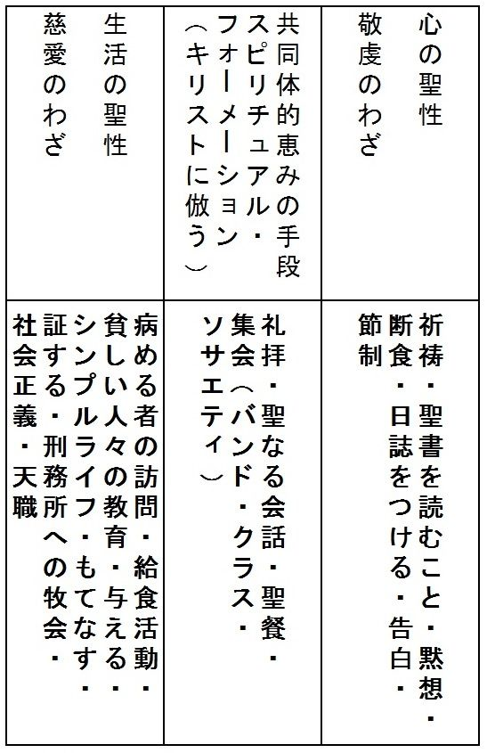
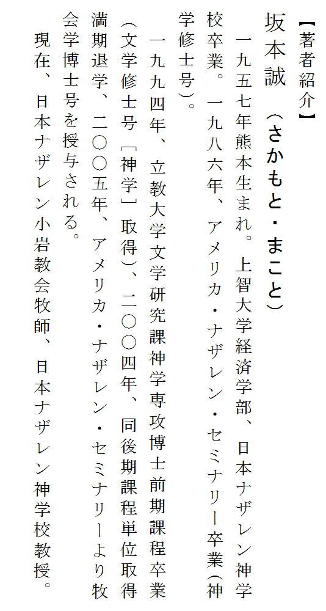
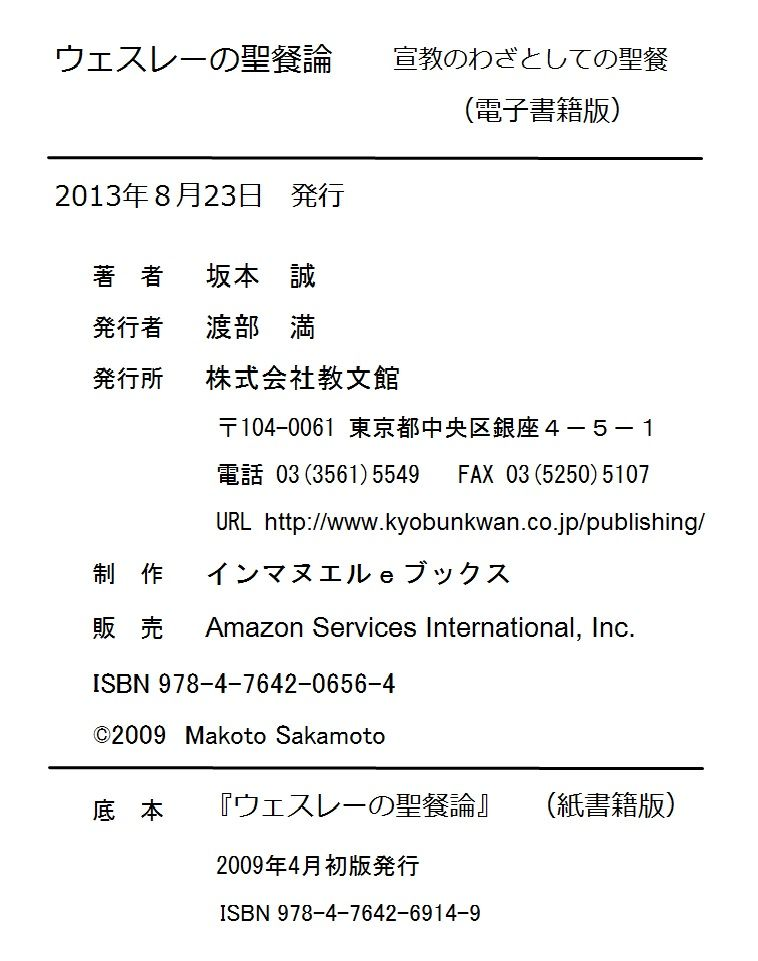

| ウェスレーの聖餐論 宣教のわざとしての聖餐 | |
| 坂本 誠 | |
| kyoubunkan (2013) | |
目 次
ウェスレー神学を改めて認識したのは、一九八三年から八六年までアメリカのミズーリー州カンサスシティのナザレン・セミナリーに留学し、神学修士号を取得した時である。
ナザレン教団という、ウェスレーに源泉を置きながらも、さまざまな教会が合同してできてきた群れに導かれ、アイデンティティを模索していた。日本ナザレン教団は、ドイツ神学の影響を受け、当初の源泉から多様な神学を包含する教団へと変遷していた時期であった。それゆえ、余計に筆者はアイデンティティを模索していた。ナザレン・セミナリーでは、ウェスレアン・アルミニアン神学に基礎を置いた上で神学の展開がなされていることに新鮮さを覚えた。ウェスレー神学を学び始め、次第にウェスレーの持つ神学的魅力に引き込まれていった。それは恵みと信仰、啓示と理性、信仰と行為、自然と恩寵という相異なるものが、ウェスレーの中において総合的に展開されているからであった。
帰国後、牧会に導かれ、立教大学大学院でさらにウェスレーの学びを続けていく機会が与えられた。英国教会の中で育まれたウェスレー神学を、聖公会の大学で学ぶ機会が与えられたのである。学びの中で、ウェスレー神学が伝統に基礎を置きながらも、実践的に、また、経験的に展開されている点が重要であることに気づいた。
ウェスレーを考察する場合に、彼をどの伝統に立つ者として捉えるかによって理解の仕方が異なる。ウェスレーは英国教会のさまざまな伝統と対話をして神学を展開しているが、彼は初期において、初代教会の教父、英国教会の聖なる神学者（Holy Divines）より影響を受け、初代教会の福音の純粋さ、聖性に惹かれる。ウェスレーは、さらに、母親スザンナの影響により、ピューリタン的な教育を受けた。実践的な霊性を備えている書物を編集したクリスチャン・ライブラリー（信仰成長のために実践的な示唆を持った書物を集めた文庫）の中にもピューリタンの文献が多数入れられている。ウェスレーは、それをプラクティカル・ディヴィニティとして紹介している。そして最近の研究においては、東方神学とウェスレーの神学の接点が議論されるようになってきた。このようにウェスレー神学の幅広さにも魅力を覚えるものである。ウェスレーは、さまざまな伝統の影響を受けているが、本来英国教会は、幅広い立場を包括する神学形成をしており、英国教会の中で、東方の教理、西方の教理がいかに取り扱われてきたかを無視することは、ウェスレー神学そのものの基盤を壊すことになる。その意味で、筆者はウェスレー神学を英国の神学を基礎に置いて展開されているものとして理解する。それはウェスレー神学の実践性にも現れている。英国教会の神学は、ただ単に教義学としての理論追究ではなく、理論と実践の総合的知としての神学理解が存在する。神学は、礼拝のあり方、キリスト者生活に深く結びついている。ウェスレーも、神学を実践的に展開する。それはウェスレーの野外説教や自由祈祷に現れているが、本書の課題である聖餐にも現れている。
ウェスレーは、一八世紀の産業革命の進む社会において、この福音の純粋さ、聖性の獲得、プラクティカル・ディヴィニティを実現しようとメソジスト・ソサエティを形成し、英国教会の刷新を図った。これがウェスレーの出発点であり、ウェスレーの神学形成の土台となったものであった。
ウェスレーは高教会主義的アングリカンとして伝統・儀式を尊重するが、人々の魂を回心に導き、救いの確信を与え、心と生活の聖性へ変容していくことを強調した。それゆえに、ウェスレー神学においては義認と聖化の関係が福音の中心である。ウェスレーは、神の救いの恵みを知った者が、信仰を持って恵みを受け入れ、その恵みに応答していく過程を重要視している。義と認められた者が聖化されていく中で、聖化が個人の実存だけでなく、社会的に展開されている。彼はそれを救いの順序（Ordo-Saltis）と呼んだ。ウェスレー神学には敬虔のわざ（Works of Piety）と慈愛のわざ（Works of Mercy）という概念が存在する。ウェスレーは神と個人の実存における敬虔と社会と個人の間における慈愛のわざの両者を重要視する。神の救いを受けた者が恵みの手段によって信仰を養われ、この世に遣わされていくキリスト者の生涯は、天国への旅路を歩むことでもある。この道程の中で、キリスト者は、真実のキリスト者として歩むことを目標とし、その道程は天国への高尚な道（Highway to Heaven）なのであり、常に完成を目指してキリスト者の王道を行くのである。
救いの順序の中で重要なのは、義認と聖化をつなぐ架け橋としての聖餐の教理である。ウェスレーは、生涯聖餐を重んじ、三、四日に一度の割合で聖餐を行っている。ウェスレーの聖餐重視の姿勢は生涯を通して一貫しているのである。ウェスレーは初期においてジェレミー・テイラーの影響を受けるが、ジェレミー・テイラーの神学の影響は、日記をつけること、規則的な生活以外にも、聖餐の教理にも見られる。本書では、ウェスレーとジェレミー・テイラーとの関連にも触れたい。両者を比較することにより、アングリカンの伝統を継承しつつ、聖餐の教理をプラクティカル（実践的）に展開している様子を論述する。ウェスレーは聖餐を通して、義認において与えられる神の赦しと恵みを確認し、社会へと遣わされていくことを強調する。特に聖餐を回心を与える恵みの手段（Converting Means of Grace）であると同時に、確信を与える恵みの手段（Confirming Means of Grace）でもあるという積極的な聖餐観が見られる。ウェスレーの神学を理解する場合に重要なのは救いの順序（救済論）が教会論的枠組みの中で、実践的、経験的に展開されていることである。本書では、そのことを中心に展開していくつもりである。
本書は、筆者が二○○五年に、ミズーリー州カンサスシティにある、ナザレン・セミナリーに提出した、牧会学博士号のための論文"The Eucharist as Catalyst for Developing an Evangelical Multi-Ethnic Ministry Through The Koiwa Church of the Nazarene in Tokyo, Japan"を基本として、読者全般にウェスレーの聖餐論を理解していただくために、加筆修正したものである。この本の出版のためには多くの方々のお世話になった。立教大学、アメリカ・ナザレン・セミナリー、日本ナザレン神学校、日本基督教短期大学の諸先生方、常に私の研究に刺激を与えてくれるウェスレー・メソジスト学会の諸氏に深く感謝したい。これらの良き師に会えなければこの本の執筆は不可能だったであろう。また、論文執筆のために、アメリカに何度も往復することを許可してくださった小岩教会の信徒の方々、そして支えてくれた妻幹子、息子悠一に感謝したい。最後に、この出版を許可してくださった教文館の渡部満氏、髙木誠一氏に心からの感謝をささげたい。
（１）BE Worksは、The Bicentennial Edition of The Works of John Wesley, ed. by Frank Baker（Nashville: Abingdon Press, 1984─）を指す。
（２）Worksは、The Works of the Rev. John Wesley, 3rd edition, ed. by Thomas Jackson（14 vols）（Kansas City: Nazarene Publishing House）（Reprint of the authorized set printed by the Wesleyan Conference Office, 1872）を指す。
（３）Journalは、The Journal of Rev. John Wesley, A. M., ed. by Nehemiah Curnock, vol. I─VII（London: Epworth Press, 1938）（first published 1909）を指す。
（４）Lettersは、The Letters of the Rev. John Wesley, A. M., vol. I─VII. ed. by John Telford（London: Epworth Press, 1960）（first published 1931）を指す。
（５）Notesは、Explanatory Notes upon the New Testament（London: The Epworth Press, 1950）を指す。
（６）Tyermanは、Rev. L. Tyerman, The Life and Times of John Wesley, M. A., Founder ofMethodists, 3 vols（New York: Harper & Brothers Publisher, 1872）を指す。
（７）M. H. Bは、メソジスト讃美歌集（Methodist Hymn Book, 1933）を指す。
（８）Taylor（Works）は、Whole Works of the Right Rev. Jeremy Taylor, D. D., ed. by Reginald Heber（London: Longmans, 1847─52）を指す。
（９）聖書の引用は『新共同訳聖書』（日本聖書協会）による。
ジョン・ウェスレー（John Wesley, 1703─91）は、一八世紀の英国において、英国教会の司祭でありながらも、メソジスト・ソサエティを形成し、活躍した人物である。ウェスレーにはメソジスト教会の創立者・伝道者・説教家などさまざまな側面があるが、神学者としても重要な人物である。しかし、ウェスレーは体系的な神学書を残してはいない。彼の思想は、むしろ、説教や日誌や手紙を通して知ることができ、神学が彼の人生そのものを通して展開されていると言える。
当時の英国では産業革命が進行し、社会生活において劇的な変化が起こっている時期であった。農業では囲い込みが行われ、多くの人々が工業に転向する。工業界でも機械化が進み、貧富の差が拡大していた。筆者は英国教会に育ったウェスレーがこのような状況の中でどのように神学を形成し展開していったかに興味を持った。
ウェスレーの神学形成において焦点となったのは義認と聖化の位置づけである。ウェスレーは前期（一七二五─三八）においては、聖化から義認へという順序を持っており、自分の善行を通して救いの確信を追い求めていた。ウェスレーは、聖性を求めジェレミー・テイラー、トマス・ア・ケンピス、ウィリアム・ローの代表的著作を読む。特に、ウェスレーは聖なる生活を追求したHoly Divinesに属する人々に魅力を感じた。このようなカロライン神学者（一七世紀の英国の神学で道徳神学を強調した神学者）との関わりはウェスレーの初期の神学形成に重要な影響を与えたと考える。ウェスレーは幼少時代より聖性に興味を示し、オックスフォード大学でホーリークラブを形成する。ホーリークラブの原則は、①すべての人にできる限り善を行うこと、②機会のある限りできるだけ聖餐を受けること、③国教会の断食日を厳守すること、であった。しかし、ウェスレーがこの時代目指していたものは、国教会の善きわざの方法化による救いの獲得であった。しかしながら、善きわざがウェスレーにもたらしたものは救いの確信の不確かさであり、彼は救いの確信を持てずに悩む。ウェスレーは、父の願いであったエプワースの司祭となるという願いを退け、アメリカ・ジョージア州に渡り牧会するが、彼の一生懸命な牧会にもかかわらずさまざまな誤解を受け、帰英することになる。ウェスレーは「インディアンを救おうとアメリカに渡ったが、誰が私の魂を救ってくれるのか」という言葉を残しており、自己の救いの確信を模索していたのである。ウェスレーは、救いの与え手であるキリストの約束ではなく自分の善きわざの蓄積による行為義認により救いを獲得しようとしていたのである。
しかし中期（一七三八─六五）には、信仰による義認が先にあって聖化の道を歩むという秩序づけがなされる。自己に救いの確信の実である聖性があるかないかと心配し、自己の状態を見つめることよりも、神の罪の赦しと救いの約束の言葉を受け取り、信じることに焦点が置かれたからである。ウェスレーは先行する恵みを与えられ、義認に至り、聖化の道を歩み、救いの完成を目指して歩むという順序を発見した。ウェスレーはそれを「救いの聖書的方法」（Scripture way of Salvation）と名付ける。この発見は一七三八年の一般的に「第二の回心」と呼ばれる回心を中心に行われる。しかし、第二回の回心ですべてが解決したかというとそうではない。回心後の日記を見ると、自分の内面性、特に罪性の問題と依然格闘している。ウェスレーは、その後、ブリストルで野外説教を行うが、これにより、自分の語っている内容が真実であることを知り、確信も与えられ、大伝道者として、また、メソジスト・ソサエティを国中に網の目のように張り巡らし、それを通して国教会および国家を改革する組織家として活躍する。ただし、中期のウェスレーの関心は個人主義的なものである。
この秩序付けがなされた結果、後期（一七六五─九一）においては、ウェスレーの中に内的宗教がいかに外的な社会活動などに展開されていくかについての確信が与えられ、さまざまな社会的な関わりを展開する。ウェスレーの目標であった救いの聖書的方法の現実化が起こり、個人の実存だけでなく、宇宙論的な壮大さを持つ社会的聖化論に至るダイナミックな神学が完成された。
ウェスレーは宗教を「経験的宗教」（Experimental Religion）あるいは「実践的神学」（Practical Divinity）と表現する。英国教会の神学の特色は聖書・伝統・理性という英国教会の三支柱の検証を宗教経験として捉える総合的な知であり、ウェスレーにおいては神の恵みはこの世で経験できるものとして捉えられている。ウェスレーは一七五○年に「公同的精神」（Catholic Spirit）という説教を行うが、教理的理解の相違を超えて、公同的精神を共有しながらメソジスト・ソサエティを形成していった。しかし公同的精神は、ある程度の許容範囲をもうけながらも、結果的には伝統・形式などを無視することとは異なる。この公同的精神は、初代教会、英国教会、教父に共通する純粋なキリスト教、霊性を本質的なものと考え、それによって英国教会の刷新、改革を目指したものである。このプラクティカル・ディヴィニティが、ウェスレーの牧会の幅広さを可能にしたものであると同時に、英国教会に土台を置きながらもさまざまな形でそこに存在しなかった斬新な牧会方法を生み出した実践性をもたらしたのである。ウェスレーには、三つの目標があった。それは、「魂の救い」、「心と生活の聖性」、「人々における正義の確立」である。ウェスレーが目指したものは、個人の中に福音的回心が起こり、心と生活の聖性がこの世で獲得され、それが発展的に社会にまで進展していくという救いの順序（Ordo-Saltis）であり、それが個人の実存的な経験だけでなく、現実のキリスト者生活において経験可能なものとして展開されている。
本書の目的は、ウェスレーの聖餐論を中心に、ウェスレー神学を構築することを目的とする。
第一章では、ウェスレーの生涯について、聖餐との関わりを中心に述べる。
第二章では、ウェスレーの聖餐論に関する研究史について論述する。その場合に、ウェスレーの神学を英国教会、西方教会、東方教会からの視点に注目しながらエキュメニカルに展開されている様子を述べる。
第三章は、ウェスレーの聖餐理解について述べる。まずウェスレー神学における敬虔のわざとしての恵みの手段の役割、聖礼典理解を述べ、その後、ジェレミー・テイラーとの比較を通して聖餐理解を考察する。主な内容は、祭壇の神学、犠牲の概念、参加の概念、神秘的な神の臨在、聖餐と聖霊との関連について述べる。
第四章は、ウェスレーのプラクティカル・ディヴィニティについて述べる。ウェスレーが英国教会の神学の特徴である三支柱（聖書・伝統・理性）を土台としつつ、それに「経験」という第四の要素を加味して神学を展開している様子を述べる。さらに、ウェスレーが英国教会内の神学といかに対話をしてきたかを中心としつつ、プラクティカル・ディヴィニティで目指したものを述べる。
第五章は、ウェスレーの宣教のわざとしての聖餐理解について述べる。信仰者のために回心をもたらす恵みの手段としての聖餐を中心に、ウェスレーが目指していたものが、どのようなものであったかを検証する。特に、聖餐が、神の言葉である説教と紡ぎ合わされる必要を強調したい。
第六章では、第五章を基礎に、信仰者に確信を与える恵みの手段としての聖餐の役割について述べる。敬虔のわざと慈愛のわざという二つの恵みの手段を結ぶ共同体的恵みの手段としての聖餐の意義を述べたい。
現代においては、教理と実践が乖離し、礼典論は形式主義に陥り霊性を伝えることが困難になり、義認と聖化が分化している。これらが包括的に理解されているウェスレー神学の魅力を提示できればと願う。
ウェスレーの神学の中で、聖餐論はあまり注目されてきたとは言えないが、重要な要素の一つである。ここでは聖餐論との関わりを中心にウェスレーを紹介したい。ウェスレーにおける聖餐概念は主にエプワースの牧師館を含む父親の牧会との関係の中で築き上げられたものである。ウェスレーの両親は献身的なアングリカンであり、ウェスレーは通常聖餐にあずかる一六歳より相当前に聖餐にあずかっていた1。ウェスレーの目指していた宗教は「心の宗教」と呼ばれ、人の内面性を重要視するのであるが、それは「聖霊の霊感によって私たちの心をきよめてください。そうすることによって私たちがあなたを完全に愛し、聖なる名を高めることができるように」という聖餐時の祈祷書に書かれてある祈りに根拠を置いていた2。ウェスレーは、既に幼少期において聖餐を守っていたのであり、ウェスレーの聖化概念が英国教会の祈祷書に由来するという理解は興味深い。
一七二○年に彼はオックスフォード大学のクライスト・チャーチ・カレッジに入学するが、チャーターハウス校の悪習慣を継承していた自分の状態を自覚していた。しかし、一七二五年の助祭としての按手が近づくにつれて、ウェスレーの中に、自分の救いの確信と按手を受けるための召命観の確かさが本当に存在しているのかが問題となってくる。その主な理由は、自分の罪深さを自覚しつつも克服できないことに気づいていたからであった。ウェスレーは、きよさを求めてさまざまな本を読破している。ジェレミー・テイラーの『聖なる生と死の規範と実践』（Rule and Exercises of Holy Living and Dying）からは「動機の純粋さ」（Purity of Intention）を学ぶ。ウェスレーの研究家セオドア・ランニョンは、そのことを以下のように語る。「ジュレミー・テイラーの影響を受けて人間の生活が根本的に行動として捉えられ、目的を持ったわざとして考えられ、ウェスレーの場合には神へ仕えるということに現れている」3。動機の純粋さを持ちつつ、それがいかに聖なる生き方につながるかが問われていたのである。第二はトマス・ア・ケンピスの『キリストにならいて』である。ウェスレーはケンピスの禁欲的思想には健全な反発を覚えているが、テイラーの著作同様、神の意志への徹底的な服従を学んだのであった。特に、聖化概念を考える場合に、聖化がキリストの姿、形に似たものになっていくという概念を学んだのである。ウェスレーの「きよさ」への願いは、このように、「動機の純潔さ」、「キリストへのまねび」という用語をウェスレーにもたらすことになる。
オックスフォード大学でのウェスレーの学業成績は非常に優秀であり、一七二六年にオックスフォード・リンカーン・カレッジのフェロー（特別研究員）に選ばれた。その間、一七二五年に助祭（Deacon）への按手を、一七二八年には司祭（priest）への按手礼をポッター司教より受ける。ウェスレーは、一七二五年以降は、聖餐を積極的に守り、内的な聖性を追求することを決意する。一七二六年に、彼はオックスフォード大学のリンカーン校への忠誠を表現するために毎週聖餐式に出るように改めて決心している。
ウェスレーは一七二九年にオックスフォード大学でホーリークラブを結成する4。彼らは恵みの手段、特に聖餐を強調したことから「礼典主義者」とも呼ばれた。一七三二年にジョン・クレイトンが入会してくるが、彼は教会教父の専門家でもあり、初代教会への関心とともに教父の学びが開始された。この学びがウェスレーにもたらした影響は、ウェスレーの関心が、西方のみならず東方の教父にも及んでいることからしても重大である5。クレイトンはノンジュラー（臣従拒誓者）であったが、ノンジュラーは初代教会の中心は聖餐であり、聖餐を通じて英国教会を改革することを考えていた。英国教会内においては第二祈祷書の立場とは別の聖餐の教理があった。それが、ノンジュラーと呼ばれる人々のグループであった。彼らは祈祷書から離れ、エドワード六世の第一祈祷書を採用していた。これはオックスフォード大学がノンジュラーの本拠地であったこととも関連する。ノンジュラーの立場の主なものは、キリストの受難と死の想起、エピクレーシス（聖霊を求める祈り）の存在、キリストの死の犠牲の強調、水とぶどう酒を混ぜて聖餐を執行すること、ぶどう酒にあらかじめパンを入れて配る聖餐方法であった6。エピクレーシスの存在は、聖霊降臨の祈りにおいて人がきよめられることが前提とされ、聖餐が人間に対する効果的なしるしだけでなく、神が人間に恵みを伝えるための手段になりうることが確認され、信仰者の心と生活に聖性をもたらすことが強調されている7。ノンジュラーの立場の特色は、儀式を踏まえながらも、儀式にとらわれない自由な聖霊の働きの強調であり、積極的に恵みを受ける神と個人との関係の強調である8。ここには、聖餐を受けることによって人が内面的に変えられていくという側面が見られるように思う9。ウェスレーの聖餐理解は英国教会内の伝統の一つであるノンジュラーとの出会いによって意味深いものとなったのである。
一七三二年に、ウェスレーは聖餐に関する説教を行う。そこでもできるだけ頻繁に聖餐にあずかることを奨励する。
最初のキリスト者と共に、キリスト者の礼拝は主の日に常に存在した部分であり、数世紀にわたって、週に四回、各聖徒の日にも聖餐にあずかった。英国教会は毎年、日曜日や祝日に祈祷書が読まれる場所でどこでも、聖餐が正しく執行されることに可能な限りの注意を払ってきており、聖餐を少なくとも年三回受けない人は誰でも破門されるべきである。10
当時の英国教会、特にローチャーチでは、年に三回から五回しか聖餐が行われていなかった。しかしその三回すら聖餐に出席しない人々が多くいた。ウェスレーはこのような背景を意識して三回という数字を出していたのではないだろうか。同年、彼は有名な説教である「聖餐を常に行う義務」（The Duty of Constant Communion）を書く。これは一七八八年に再版された。このタイトルからも、いかにウェスレーが生涯をかけて聖餐を守っていたかが理解できる。
しかし、当時の初期ウェスレーにとっては、聖餐にあずかることによって、聖性を獲得するための「善きわざ」としての聖餐に焦点が置かれていたことを忘れてはならない11。ウェスレーは、聖餐において神の恵みを受け取るという側面が不足していることを後に反省するのである。
ホーリークラブを結成した後にウェスレーはウィリアム・ローの『キリスト者の完全』（Christian Perfection）および『厳粛なる召命』（Serious Call）の二冊の本の影響を受けた12。特にローはノンジュラーであり、ウィリアム三世への宣誓を拒否していた。元来、母親スザンナから受け継がれたと言われているノンジュラーとしての立場は、ローに媒介されてウェスレーに影響を与えている。先述のテイラーおよびローとの出会いは、高教会主義ロード派に立つアルミニウス主義との関わりを示すものであると考える。
その後ウェスレーはエプワースの父より健康上の理由で牧会を手伝うように頼まれる。しかし、ウェスレーの内面に確信はなかったのである。この当時はウェスレーが真実の宗教（Real Religion）を求めていた時期であった。ウェスレーはオックスフォードで完全の教えに目覚めながらもそれを達成できない自分に悩んでいた13。この原因は、ウェスレーの中で、外的な行為を通して内的な聖性を獲得するという順序があったと考えられる。しかし、このような絶望感は必要だったのである。絶望感は新しい次の段階に向かう通らなければならない道でもあった。
一七三六年二月にアメリカ・ジョージア州の総督であるオグレソープの勧めによってアメリカ伝道にホーリークラブの仲間と出かけるが、この旅の途中にモラヴィア派の人々との出会いがあった14。ウェスレーはアメリカのジョージアに行く船の中でも毎日聖餐式を行っている。この時期に彼は、ダニエル・ブレビントの聖餐に関する本を読む15。ブレビントは反ピューリタン、反ローマ・カトリックの神学を持っていた。特に、ブレビントは聖餐の強調と伝道への強い意欲を兼ね備えた人であった。ブレビントの著書はウェスレーにも影響を与え、ウェスレーの聖餐に関する本の内容とウェスレー兄弟の詩や讃美はブレビントの讃美歌区分に基づいていると言われている16。ウェスレーはまた、船上の人々に聖餐に関してのデボーショナルな本を読んで聞かせた。アメリカに到着しても聖餐式を規則正しく守った。最初のアメリカでの公式の聖餐式は一七三五年一〇月一九日であった。
アメリカ到着後のウェスレーは、自分の夢であったインディアンに伝道することではなく、サヴァンナという町の英国教会の司祭としての役割を果たすことになる。ウェスレーの牧会は彼の真摯な姿勢もあり成功しているかのように見えたが、居住者からはカトリック的だと批判されていた。この主な理由はタイアマンによれば、①分離派を聖餐式から除外した、②カトリックの信徒が聖餐を受けるのを許可した、③杯の中にワインを入れ、その中にパンをあらかじめ入れる聖餐の方法を取った、④告白、罪の償いを強要したからとされている17。ウェスレーのアメリカ伝道は不成功に終わる。ソフィア・ホプキーとの恋愛事件もあり、不評を立てられ、彼は逃げるようにアメリカを去る。
ウェスレーのこの時期を総括するならば、自己否定や謙遜から救いの確信を求める時期であったと言えよう。神の像を確認しつつ、回復を願っていた時期であったが、依然、救いの関心は、個人の範疇に限定されていた。彼に必要なものは、方向転換、つまり自分の行いによる義という視点から、キリストの約束を信仰によって受け取るということであった。
一七三八年五月二四日、ウェスレーはアルダスゲイト街で回心を経験する。この経験は、自己のわざではなく、キリストの贖いのわざに信頼した結果与えられたものである。しかし、この回心ですべてが解決したのではなかった。ウェスレーは回心後も、自己の信仰の揺らぎを体験するのである。この時期にウェスレーに最も影響を与えたグループはモラヴィア派である。ウェスレーはモラヴィア派との出会いにより、神の約束を受け取る信仰の必要性を学び、義認から聖化という宗教改革の原則に立った。しかし、慈善としての善きわざを重視する英国教会は次第にウェスレーに門戸を閉ざすことになる。ウェスレーは、一七三九年四月九日、四〇〇〇人に対して野外説教を行う。ウェスレーにとって野外説教を行うことは、高教会で育ってきたこともあり大きな決断であった。筆者は、この体験がウェスレーに非常に大きな変化をもたらしたと考える。説教の結果、多くの人々が喜んでメッセージを受け取ったのである。ウェスレーの信仰の模索は、救いの確信へと一歩ずつ近づいていくのである。それは、義認と聖化に関する救いの順序の福音的理解が与えられたことでもあった。ウェスレーは一七三九年に英国教会の義認と聖化理解の間違いに対して反論している18。結果的にメソジスト・ソサエティのメンバーへの聖餐の多くはウェスレー自身かメソジスト運動に同情的な英国教会の司祭によってなされた。しかし、ウェスレーはモラヴィア派に対して盲信していたのではない。ウェスレーのモラヴィア派に対する一つの疑問は、モラヴィア派が恵みの手段を使用しなかったことにあった。
この時期の聖餐理解はどのようなものであったのだろうか。ウェスレーは中期おいても恵みの手段である聖餐を強調する。
恵みの手段で私が意味することは、人が恵みから堕落することを妨げ、人を義とし、聖化する恵みを伝えるために定められたチャンネルであるように神が制定された外的なサイン、言葉、行為である。19
ここには恵みの手段の定義が存在するが、ウェスレーにとって、恵みの手段の使用は、自分の中に救いの確信が与えられたことにより、より確信をもって捉えられている。しかし、これは、恵みの手段そのものの絶対視を意味していたのではない。
あなたが恵みの手段を使用する前に、魂に適切に影響を受けるように使用しよう。恵みの手段それ自体の中には何の力もない。それ自体は貧しい、死んだ、空のものであり、神から離れては、枯れた葉、陰である。20
このように恵みの手段を有効にする神の主権を確認しつつ、自分の信仰を成長させるために積極的に恵みの手段を使用することが奨励されている。
次第にモラヴィア派の教理に疑念を募らせるウェスレーであったが、ついに、一七四○年七月二一日、ペーター・ベーラーが一七三八年にロンドンに創設したフェッターレイン・ソサエティから脱会した。このようにしてメソジストは独自の神学を形成していくのであるが、当時の国教会および英国の社会にとって、メソジスト・ソサエティの与えた影響は大きなものであった。ウェスレーの目指した「英国中にメソジスト・ソサエティを網の目のように作る」という宣言通り、ソサエティの数は増加していき、多くの人々が悔い改めていった。この一連の動きを「全き聖化のリヴァイヴァル」と呼ぶことができる。
それでは、ウェスレーは、この時期、聖餐の目的をどのように考えていたのか。ウェスレーは一七四八年に以下のように語る。
私はあなたがたや一万人以上の人が神の儀式を乱用し、手段を目的と誤り、さらにこれらのことやその他の外的なわざを行うことが、イエス・キリストの宗教と仮定してきた事実を認める。しかし、この誤用を取り去り、儀式を使用することはそのまま残そう。あなたの魂が刷新され、真実の義と聖性のために常に目を注ぎながら使用しなさい（傍点筆者）。21
聖餐には「魂の刷新、真実の義と聖性」という目的があったのである。ウェスレーには、先述したように、救いの順序というものが存在する。聖餐を受けることにより、まず、魂が新たにされ、神との正しい関係が確立する。ここには後述する「回心を与える恵みの手段」、「確信を与える恵みの手段」としての聖餐理解があると考える。そして、これが真実のキリスト者の生き方へとつながっていく。ウェスレーは、キリストによって与えられた義認を確認しつつ、聖化へつながる聖餐理解を持っていた。特に、ウェスレーは、恵みの手段をキリスト者生活全体に関わるものとして考えていたのである。
ウェスレーの後期は彼の集大成の時期でもあるが、この時期の特色は壮大な神の国の社会的実現である。この時期は、前期、中期とウェスレーが求めていたものが、彼の中で包括的に統合されて、個人的聖化と社会的聖化が結実している時期である。その証拠にウェスレーは多くの社会的パンフレットをこの時期に作成している22。
一般社会では、一七七六年にアダム・スミスの『国富論』が出版され、禁欲的プロテスタンティズムによる余剰の蓄積が肯定された。思想的には啓蒙主義が勢いを増し、神なき合理主義時代に突入していく中で、ウェスレーの思想は社会的・宇宙的なものに向けられていく。ウェスレーはメソジスト・ソサエティ形成期においてカルヴァン主義者と論争を展開するが、カルヴァン主義との戦いは依然続いており、福音説教（gospel sermon）と呼ばれる反律法主義に対して、ウェスレーは信仰による救いの結果生み出される信仰の実を強調した。ウェスレーの目指していた「心と生活の聖性」（holiness of heart and life）の集大成の時期が到来したのである。
一七八四年はメソジスト・ソサエティにとっては一番重要な年になった。この年にメソジスト・ソサエティの憲法が制定されたのである。ウェスレーは自分の死後、ソサエティが分離してしまうのを防ぐためにはどうしたらよいか考えていた。そのために、彼は宣言を出して、自分の死後、メソジスト・ソサエティを維持していくために憲法を制定した。ウェスレーは独裁ではなく、民主的な形でソサエティが運営されるように配慮している。さらに一つの大きな出来事が起こった。ウェスレーはついにアメリカのメソジスト教会のためにトーマス・コークやその他の人に按手を授け派遣する。同年、一二月にアメリカ合衆国最初のメソジスト年会がバルチモアで開催され、フランシス・アズベリーが初代監督となる。アメリカに渡った後のメソジスト・ソサエティは組織と体制が整えられ、独自の発展を成し遂げていく。メソジスト・ソサエティのメンバーは一七六七年には二万五九一一人、一七七七年には三万八二七四人、一七八七年には六万二○八八人であり、一七九一年には七万二五四六人であった23。一七八七年に、ウェスレーは聖餐にできる限りあずかることについて以下のように語る。
それゆえに、神を喜ばせようという望みを持っている者や自分の魂を愛する者は、神に従い、できる限り聖餐を受けることによって、自分自身の魂の徳を調べなさい。24
これは、後期におけるウェスレーの聖餐式に対する姿勢であるが、ウェスレーの聖餐式への思いは晩年においても健在であり、一七八○年代においても聖餐受領者の数は増大していった。時には一〇〇〇人近い人々に聖餐を授けることもあった。ウェスレーはその様子を以下のように語る。
バーミンガムでは「ヒース氏が祈り、聖餐を七〇〇人から八〇〇人に配るのを助けた」。ボルトンでは「五人の牧師と一二〇〇人から一三〇〇人の聖餐受領者がいた」。マクセルフィールドでは「聖餐を一三〇〇人に施した」。リードでは「一八人の牧師と共に約一〇〇〇人が聖餐を受けた」。ブリュッセルでは「一〇〇〇人が聖餐を受けた」。私は誰も空虚な心でその場を立ち去らなかったと信じる。シェフィールドでは「祈祷し、説教して六〇〇人から七〇〇人に聖餐を施した」。ロンドンでは「聖餐にあずかる人が非常に多かったので、三度も聖別を行わなければならなかった。私は説教し、コーク博士に助けてもらい、一一〇〇人から一二〇〇人に聖餐を行った」。ダブリンではニュールームで七時に説教し、一一時にカテドラルに行った。私は教区教会に行かなかった私たちのソサエティのメンバーが私と一緒にパトリック教会に行くのを望んでいたが、彼らの多くはそのようにした。聖餐にあずかった人の数は五〇〇人と言われており、メソジストがアイルランドで知られるようになるまでそのように行った（傍点筆者）。25
ここには「誰も空虚な心でその場を立ち去らなかったと信じる」とある。そこには規模からしてかなりのエネルギーがあったのではないだろうか。聖餐を受けることにより、集団が生かされていく様子が想像できて興味深い。聖餐の受け方は、何人かの牧師が前に立ち、多くの人々がその前に並んで聖餐を受けていくのであるから、時間もかかり秩序を維持するのも大変であった。それゆえに彼らは讃美歌を使用した26。グードローによれば、ウェスレーの日誌には、午前五時に聖餐が始まり、終了するのに六時間かかったという記録も存在すると書いている27。ウェスレーは聖餐式に人々の一致を見出していたのである。
主よ、あなたの僕であることは何と幸いなことか。私たちはあなたを思い出す。私たちの内にあるすばらしい一致を、完全な調和をいかに感謝したらよいのだろう。神秘的な食事があなたのテーブルで与えられ、分かち合われる。裂かれた一つのパンにおいて、われわれは人数は多いが一つである。われわれが信仰によって食す、生きた神のパンによって、われわれの心と精神と霊はイエスが会われる場所に共に参加する。28
ここには頭なるキリストとの一致、会員同士の一致が描かれている。人々はこの神の恵みの手段である聖餐に参加（participate）することにより主と一つとされ、互いに一つとなる。そこには感謝が存在していたのである。
一七八七年に説教した「絶えず聖餐にあずかることの義務」（The Duty of Constant Commu-nion）は、ロバート・ネルソンの『教会の祝祭および祝宴へのお供』（A Companion for the Festivals and Feasts of the Church, 1704）に依拠して書かれたものであるが、ネルソンが頻繁に聖餐を受けることを強調するのに対し、ウェスレーは絶えず聖餐にあずかることを強調するなど積極的な聖餐理解が見られる。ウェスレーの組会の規則にも毎週聖餐のテーブルにつくというものがあった。
一七九一年にロンドンのシティロード・チャペルで亡くなるまで、彼は馬に乗り、多くの地域を歩き、その距離三〇万キロ、説教回数は四万回という精力的な生涯を送る。身長は一五八センチだったと言われている彼が、これほど精力的に旅行をできたというのも、彼の福音宣教の情熱によるところが多い。またこの旅行は、ウェスレーにとって、当時の社会を総合的に見る機会を与えたものであった。これらを可能にした情熱は、聖餐式に絶えずあずかり、彼自身の信仰を精査し、絶えず神の意志に役立つように心身を整えていたからではなかっただろうか。ウェスレーが受けた恵みは自分の内にだけとどまらなかった。ウェスレーは旅先で、社会的矛盾に傷ついている多くの人々を見つめていた。彼が亡くなった一七九一年には、五八八のメソジスト・ソサエティの説教所があった。彼にはかなりの収入があったが、彼の人生は与える人生でもあった。すべてのものを神の財産として捉え、周りの人々に施していくウェスレーの姿には今の教会が見倣うべきことがあるように思う。彼の最後の言葉は「神が共にいること、これが人生で最も偉大なことだ」という言葉であった。このことも、聖餐式を守り続け、主と共に生きたところから生じたものであると信じる。本書でウェスレーの聖餐にかける情熱が少しでも理解され、今日において聖餐を受ける際の理解を深めることができれば幸いである。
ウェスレーは聖餐を恵みの手段の一つとして捉えていた。ウェスレーの立場はアルミニアンでもあり、信仰者は恵みから堕ちることもあり得る、と考える。従って、信仰者は、責任を持って信仰を維持するために恵みの手段を使用しなければならない。ウェスレーは恵みの手段の目的を「先行の、義認の、あるいは、聖化の恵みを、神が人々に伝達する通常の媒介である」29としており、キリスト者の全生涯に恵みの手段を関わらせている。恵みの手段は、神の愛と人の愛に要約される「心の宗教」を促進するのに本質的なものであり、キリスト者生活において神の臨在をもたらすとともに「心と生活の聖性」を実践するためには不可欠であって、信仰生活に欠かせないものとして理解されている。ウェスレーの聖餐理解については、これまでの研究を概観することが重要である。以下、研究史を聖餐論に絞って論述していきたい。
ヘンリー・ナイトは、神の臨在をもたらす恵みの手段を、その著書『キリスト者の生活における神の臨在─ジョン・ウェスレーと恵みの手段』（The Presence of God in the Christian Life: John Wesley and the Means of Grace, 1992）の中で展開する30。ウェスレーには反律法主義と完全主義の対比が見られる。まず、反律法主義は、信仰者は既に恵みによって自由にされており、いかなる道徳的律法にも拘束されていないという立場である。彼らは聖餐にあずかることも一つの律法であり、聖餐にあずかることは必要ではないと主張する。これに対してウェスレーは、聖餐にあずかることが不必要ならば、聖化の教理が無駄になり、人々は自分の罪を克服できず、絶望に陥ってしまう。それゆえ、キリスト者は、神から付与された義を用いて責任を果たすことが重要であると主張する。一方、完全主義は、自分が既に完全に到達しており、何の恵みの手段も必要ないという立場である。ウェスレーは、彼らが恵みの手段を使用しないことを批判し、キリスト者の完全の本来の意味は、そこで成長がとまるものではなく、さらなる成長に至る新しい過程の始まりであることを強調した31。その意味で、恵みの手段は、新たな自己認識をもたらすものであり、人は恵みの手段によって自己を省察し、反省すべき点があれば悔い改めることにより赦しと愛を経験することが必要であることが強調される32。このように、ウェスレーは、恵みの手段を用いることによって、反律法主義と完全主義の間におけるキリスト者生活を充実させることを信仰生活の目的とし、信仰者は愛を基本に純粋な動機を有する者として成長していくことを強調した。ナイトは、更に別の観点からも恵みの手段を考察する。
ウェスレーにとって恵みの手段は形式主義と熱狂主義の間にも存在する。ウェスレーは形式主義に対しては愛によって働く信仰を強調する。例えば、聖餐に参加することは自己奉献という目的のためであり、自己奉献による神と人への愛は、聖餐に参加することによって神の臨在を経験することによって可能となる。それゆえに形式主義に陥らないためにも、人間の応答を可能にする恵みの手段が重要となる33。次に、ウェスレーは、熱狂主義に対しては伝統的な恵みの手段を強調する34。恵みの手段を通して、人は主観主義に陥ることなく、神の恵みを客観的に実感でき、人間の生活が刷新される。恵みの手段はわれわれが神への愛と感謝を表現する手段であり、また隣人への奉仕や神の約束における信頼と希望を意味する35。また、恵みの手段は、われわれが悔い改めをもって神に対して応答することも意味する。このように、ウェスレーは、自己を取り巻くさまざまな主義と対話しながら、多様な恵みの手段を駆使するのである。
ナイトの重要な指摘は、聖餐には「キリストの私たちへの犠牲の明確化」と「この世でキリストのために奉仕するわれわれの献身」という両面があるという指摘である36。神の自己犠牲を聖餐によって知った私たちは、献身的に他の者のために生きていく。キリスト者の神に対する知識という実存的な要素と、自分の身を犠牲にして他者のために仕えるという実際的な行動には関連性がある。ウェスレーは、その意味で、信仰と生活の二分法を拒否する。そのことを実現するために、最終的に重要なのはキリスト者生活における神の臨在である。ナイトはこれまで見過ごされてきた恵みの手段の全体的関連性を示した点において大きな貢献をしている。敬虔のわざにより「キリストの犠牲」を確認した者が、「キリストの名において他者のために奉仕する」という慈愛のわざへ結びついていく様子が見事に表現され、ウェスレー神学における恵みの手段の持つ役割が非常に重要なものであることが理解できる。特にウェスレーの恵みの手段が、キリスト者生活全体と深く関わっていることを示したことは重要である。ただし、最近の研究には、第六章で後述するように恵みの手段の新たな区分も存在する。敬虔のわざと慈愛のわざ以外に、共同体的な視点から見た恵みの手段の重要性の指摘があったら、更に説得力があったと考える。いずれにせよ、ナイトの研究により、ウェスレーが当時の英国教会におけるさまざまな立場と対話しながら実践的に恵みの手段を使用してきたことが理解できる。
礼典における聖餐を考えるもう一人の神学書がオレ・ボーゲンの『ジョン・ウェスレーの礼典論』である37。この本の良さは研究史と執筆方法などが明確であることである。ボーゲンによれば、ウェスレーは父親より聖餐の重要性を学んだ。ウェスレーは讃美歌を駆使しながら聖餐を行う、この意味において、ウェスレーは実践的な神学者である。しかし、ウェスレーにとって、教理および知識が不要なわけではない。思索的な神学や知識は経験的な知識に到達する過程において必要なものである。われわれは、それを「プラクティカル・ディヴィニティ」と呼ぶことができる。ウェスレーのプラクティカル・ディヴィニティは教理的・実践的な指針をキリスト者生活に与える。例えば、讃美歌もこの目的のために用いられた38。ウェスレーにとって神学は学問的な原則ではなく、信仰生活を機能させるものであった。プラクティカル・ディヴィニティに言及しているボーゲンの主張は興味深い。筆者は、ここに英国の神学の特色が現れているように思う。
ボーゲンは聖餐を論じると同時に恵みの手段全体にも注目する。恵みの手段は救いの順序の中で検討される必要がある。特に聖餐はウェスレー神学のどの点においても重要であり、ウェスレーが、洗礼、聖餐の統一的な教理を持っていることが確認される。神学的（実践的）礼典の重要性は、礼典が救いの順序の中で、①効果的なサインとして、②来るべき栄光の保証として、③犠牲の概念とともに機能しているところにある39。 聖餐の主体は神であるが、聖霊の役割は、聖餐を信徒の中で意味ある有効なものとする意味で重要である。ボーゲンは、真臨在（Real Presence, 聖餐のパンとぶどう酒にキリストのからだと血が実在することを意味する）を認識するための聖霊の働きを強調しており、ウェスレーの真臨在の見解には、ダイナミックな、生き生きとしたキリストの人格が現れているとする40。このダイナミックな真臨在理解がボーゲンのウェスレー理解の特徴でもある。
さらに、ボーゲンの次の主張は重要である。ウェスレーは礼典をいかに理解していたのか。ウェスレーは回心前は高教会主義礼典主義者であり、回心後は福音主義者であるという見方もあるが、ウェスレーの礼典への強調は回心前も回心後も変化していない。それでは何が変化したのか。恵みの手段の機能が変化したのである。ウェスレーは、回心前は、礼典を守ることによって信仰的に義とされるという意味で礼典を捉えていたのであり、強調点は礼典を用いる人間の側にあった。しかし、回心後は、神の恵みを実感するための伝達手段として恵みの手段を使用することが強調され、聖餐を制定された神に目が向けられる41。それゆえに、礼典においては、恵みを受け取る信仰者の姿勢が重要になる。ウェスレーにとって教会は組織や建物を指すのでなく、神の言葉が語られ、聖餐が行われる場である。人は、静寂主義のようにただ神の臨在を待つのではなく、恵みの手段を使用することによって信仰生活を歩む。このようにして人間は弱い存在であるが、恵みにあずかることが可能となる。聖餐の目標は何か。愛が聖餐の目標である。「愛と聖性」はウェスレーにとっては「敬虔のわざ」、「慈愛のわざ」として定義されている。敬虔のわざによって得られる愛は、慈愛のわざである聖性を結果的に生み出すとボーゲンは語る42。
以上の二人は、恵みの手段をウェスレーがいかに用いたかを考察する。特に、ボーゲンは、恵みの手段の強調は両方の回心に見られるが、機能が変化したことを強調し、ウェスレーは恵みの手段を通して、聖餐をプラクティカルに展開し、礼典主義と福音主義を一つとしたと結論づけている43。 聖餐の目標を愛と聖性という聖化の二つの特色に関連づけている。特に恵みの手段を慈愛のわざにまで関わらせていることは評価できる。救いの順序における聖餐理解を提示したことによって、ウェスレーの救済論における聖霊の役割を明確にしたのである。
以上の二つの著書は、ウェスレーの聖餐論を理解する上で基礎的な研究となったものである。
聖餐の教理の分野でも特に重要なものはオーネスト・ラッテンベリー著の『ジョン・ウェスレーとチャールズ・ウェスレーの聖餐の讃美歌』（The Eucharistic Hymns of John and Charles Wesley, 1990）である44。ラッテンベリーは『聖餐の讃美歌』（Hymns on Lord's Supper）およびブレヴィントの『キリスト者の礼典と犠牲』（The Christian Sacrament and Sacrifice）からウェスレーが引用した讃美歌に焦点を合わせながら聖餐の教理を展開する。この著書の特徴は、メソジストの財産である讃美歌の教理的・批判的な分析を行ったことにある。ラッテンベリーの主な主張は以下のようなものである。ウェスレーは、一八世紀の英国教会において、聖餐式が重要視されていなかった中で聖餐式を強調した。ウェスレーの貢献は、実践的な聖餐の教理を持っていたことにあり、その実践性は、讃美歌の使用に見られる。一七三八年のウェスレーの回心は、神の再発見を意味しており、「福音主義的信仰復興運動の持つ永続する歴史的諸価値」を添えた土台石であり、ウェスレーの聖餐による改革は福音的礼典的改革であった45。ウェスレーの聖餐に基づいた改革を福音的・礼典的改革とする見方はボーゲンの主張でもあり、ウェスレーの聖餐論の研究は、福音主義と礼典主義の統合として見られるようになっていく。
特に、ラッテンベリーは、礼典的な犠牲の概念を中心にウェスレーの聖餐の教理を強調する。これまでの研究では、聖餐における犠牲の面が強調されてこなかった。しかし、ウェスレーの聖餐論においては、祭司の役割と同様、犠牲は重要な概念であることが確認される46。犠牲の概念においてはアナムネーシス（想起）の重要性が指摘され、聖餐においてキリストの継続的な犠牲を想起することがユーカリスト礼拝の基本である。犠牲によって得られるキリストの贖いの恵みが礼典的礼拝にとって根本である。その意味で聖餐は福音的リヴァイヴァルにとって中心的なデボーションであった47。また、聖餐時に使用される讃美歌はリヴァイヴァルの二つの要素である経験的宗教とアングリカンの伝統を仲介する役割を持つ。アングリカンの形式主義と福音的礼拝の自由さは相互に異なるものであるが、ウェスレーは礼典を福音化することによって、その違いを克服したのである48。
ラッテンベリーは、ウェスレーの聖餐の教理をさらに二つの視点から検討する。第一は記念としての聖餐である。ウェスレーの聖餐概念は、十字架上のキリストを想起するものである49。ウェスレーは、単なる象徴的な聖餐観ではなく、真臨在の教理を持っていた。ウェスレーの聖餐時の関心事は礼典的な方法論であり、十字架の恵みがいかに信仰者に伝わるかという実践的なものであった50。第二は、ウェスレーの聖餐の教理における実現した終末論（Realized Eschatology）の存在である。初期メソジストは実現された終末論として聖餐を考え、そこに喜びを見出していた。51 ウェスレーは社会悪と反社会的な富に反対していた。ウェスレーは、聖餐において、時間内における神の国の実現を強調したがゆえに社会的視点を持っている。このようにして、ラッテンベリーは、ウェスレーがキリストの到来を今ここで体験できるものとしたと語る。52 この思想は聖餐を来るべき神の国の保証として見ていたことにも通じるものである。終末の先取りとしての聖餐は喜びをもって信仰者に受け止められていたのではないだろうか。
以上、ラッテンベリーの主張を述べてきたが、ラッテンベリーは、聖餐における犠牲の役割を重要視し、犠牲の概念を中心に西方の視点からウェスレー神学を考察している。終末論的な視点を聖餐理解と結び合わせたことは興味深い。さらに、ウェスレーがメソジスト運動を英国教会内の礼典的・福音的改革であると結論づけたことは評価できる。一般的に言えば、「礼典主義」と「伝道的な福音主義」は反対概念である。前者はリタージカルな面が強くて、儀式的な印象を受ける。逆に後者は動的な実際の伝道活動を表現しているように思う。重要な問いは、ウェスレーがこの両者をいかに統合しているかである。
次の代表的な力作はボーマーの『初期メソジズムにおける主の晩餐の礼典』（The Sacrament of the Lord's Supper in Early Methodism, 1951）である53。ボーマーは聖餐概念がウェスレーの中でいかに重要であったかを描く。ボーマーの主張を続けると次のようになる。神学者の中にはウェスレーをアングロカトリックと呼ぶ人々もいる。それは彼が「祭壇」（alter）、「真臨在」（Real Presence）という用語を使用し、頻繁に聖餐を行うからでもある54。しかし一八世紀の英国リヴァイヴァルは、カトリック的色彩のみではなく、聖餐を媒介としながらも、人々の魂を改革し、実践を強調した福音的なリヴァイヴァルでもあった。ウェスレーは英国教会の高教会主義的な神学を保持しながら、メソジスト・ソサエティにおいても、聖餐を頻繁に行うことを奨励した。メソジスト運動において、このことが福音的リヴァイヴァルの準備となったのである。メソジスト運動の結果、多くの教会が聖餐式を強調し始めた。ボーマーは初期メソジズムでいかに聖餐が行われるようになったか、またどのように行われていたかを述べ、メソジストの歴史の中で聖餐に幾つかの変化が起こったことを描く55。
続いて、ノンジュラーの聖餐理解の影響を受けた初期メソジズムの特色が描かれる56。当時の英国教会においては、堅信礼を受けていることが教会への承認の資格であった。しかし、ウェスレーは信仰の確信や堅信を聖餐を受けるのに不可欠なものとは考えなかった。むしろ、ウェスレーの強調点は、聖餐受領者の心のあり方、回心に向けられていた。ウェスレーは、聖餐を聖餐受領者に回心を与え、悔い改めを与える儀式として考えていたとボーマーは語る57。それはウェスレーの聖化観と密接に関わる。聖餐の役割はどこにあったのか。メソジストの目的は聖書的聖性を広めることである。その意味で聖餐も聖性の教理との関連で理解されなければならないとボーマーは語る。
ボーマーは、さらに現代のメソジストに苦言を呈する。メソジストの聖餐は義務ではなく喜びの礼典であった。ウェスレーの高教会的な背景がなければ聖餐がこれほど重視されることはなかった。ウェスレーにとって、礼典を大切にすることは、メソジスト説教者によって宣教された言葉の結果でもあった。言葉と礼典の二重性が重要である。ところが近代のメソジズムにおいて問題なのは、伝道に熱心であることと礼典を強調することを対立的に考えることである58。ボーマーの主張である伝道的であると同時に礼典的であることの包括性の主張は傾聴に値する。特に、この著書の出版年代は一九五一年であり、ボーマーの先見性に脱帽するが、現代のメソジストがこの著書の出版を受けてどのように変化したかがまさに今問われているのではないだろうか。
以上要約したが、ボーマーは、ウェスレーの聖餐の教理がメソジズムの中でどのような役割を持っていたかを詳細に論述する。メソジズムがウェスレーの聖餐の教理をいかに理解してきたかという観点は、現代の礼典理解にとっても避けて通れないものであり、重要である。さらに聖餐を聖性と結びつけ、それがメソジスト全体の目標であったとしていることも、聖餐が信仰者の生活全体に関わっているものであることの認識を与えた点では評価できる。
以上の二人は、礼典主義、福音主義の相違を克服するウェスレー像を描く。ラッテンベリーはウェスレーの改革を福音的・礼典的改革であるとし、ボーマーはダイナミックな真臨在理解を強調し、礼典が実践的に展開されていることを強調した。それに基づいて伝道と礼典の包括性に焦点を当てた。特に、ボーマーの力点は筆者の主張と重なるものがあり刺激を受けた。二人の研究によって、ウェスレーの聖餐論が礼典的であると同時に、実践的に展開されているという方向性が打ち出されたのである。
エキュメニカルな視点から他の神学背景との関連においてウェスレーの聖餐の教理を捉えたものとして二冊の著書を挙げることができる。
比較的最近の研究としては、ナザレン・セミナリーの神学者であるステープルスの『外的なしるしと内的な恵み』という研究が挙げられる59。ステープルスは礼典が空虚なものではなく、意味があることを強調し、一八世紀のウェスレー神学の持つ霊性に注目しながらウェスレーの礼典論は聖書とキリスト教伝統に根ざしていると主張する。まずウェスレーのジレンマが検討される60。ウェスレーのジレンマとは、形式主義、儀式主義と自然発生的な自由な雰囲気との間にあってどの立場に立つかというものであった。ウェスレーは高教会主義の儀式を重んじる立場と福音主義者としての自由な立場をいかに統合するかに苦心した。その結果、ウェスレーは、宗教的経験を強調するが、主観主義に陥らないように礼典の神学をも強調する61。この包括的な思想は、彼の聖餐論自体にも見られる。
ウェスレーの聖餐の教理には存在の類比が見られる。礼典における物質的な要素（水、パン、葡萄酒）は、それらが示す客観的なリアリティに対して類比的な関係を持つ。礼典は内的な恵みにあずかるための外的な恵みの手段である62。キリスト教神学は礼典を機能的な象徴として理解してきた。外的なしるしと内的な恵みは同じではないが、分離できない。例えば洗礼時に使用する水は外的なしるしである。霊において新しく生まれることは内的な恵みである。内的な恵みは外的なしるしである礼典に適切にあずかる時にのみ伝達される。それゆえに重要なのは、ラッテンベリーの主張でもある、礼典にあずかる方法論である。その意味で、ステープルスは、外的なしるしと内的な恵みの一致を強調する63。礼典において、われわれは、自分たちの生活の中で神が真に臨在されることを認識する。ここに、ウェスレーの礼典使用の原則がある。
ステープルスは、メソジストのエキュメニカルな貢献を以下のように語る。メソジズム信条の一三条は可視的な教会について論じているが、そこでは、教会は組織としてではなく、恵みの手段として捉えられている。教会において、外的な恵みの手段を通して、内的な恵みの実証が伝えられる。このダイナミックな聖餐理解において、アングリカンに根ざしたウェスレー神学はカトリックとプロテスタントの仲介役を果たしている64。以上のようなステープルスの視点は非常に重要であり、ウェスレー神学がエキュメニカルな神学理解においても鍵となりうることを示している。現代の相互陪餐においてはメソジズムはまだ十分に貢献しているとは言えない。その意味でもウェスレアンの側からの聖餐の教理の確立が急がれるのではないだろうか。
ステープルスの貢献はウェスレーの聖餐の教理を外的なしるしと内的な恵み、形式主義と福音主義などの比較から検証したことにある。しかし、残念ながら東方教会の視点が見られず、真のエキュメニカルな対話までは至っていないと考える。更に、聖餐がいかに実質的な意味を持って、信徒の生を社会的聖化と関わらせていたのかの指摘が存在しない。ウェスレー神学を見る場合に、異なった概念の比較だけでなく、それがいかに実践的な意味を持って行われているかというところまで議論されたら、更に有意義な聖餐の教理になったのではないかと考える。
次に、ヒルデブラントの著書を挙げることができる65。本書のタイトルである『私はキリストを差し出した』（I offered Christ）はウェスレーの日誌の一部から取られたものである66。ヒルデブラントは、「私はキリストを差し出した」という宣教のわざが何を意味するかをさまざまな伝統を紹介しながら問う。
第一に、聖餐を犠牲して捉える見方が存在する67。犠牲には「二つの献げ物」がある。天におけるキリストの犠牲と聖餐を受ける人間の犠牲である。この著書には、キリストの犠牲により愛を知った者が自らを神にささげる奉献概念がさまざまな要素と絡み合わされながら描かれている68。つまり、われわれの応答に焦点が当てられているのである。聖餐を聖餐たらしめているものは神の恵み、キリストの功績、聖霊の働きであるが、それがわれわれの恵みとして届くためには、エピクレーシス（聖霊降臨の祈り）が必要である。その時に、われわれは聖餐に主体的に関わり、恵みにあずかることができる。
第二に、聖餐にはドラマとしての犠牲概念が存在する。ユーカリトは受難劇である。ウェスレーは聖餐の受領者が、聖餐というドラマにおいて観客としてだけではなく参加する必要があることを強調する69。この参加は「共同献身」、「共同受難」という形でなされる70。聖餐受領者は、キリストのわざに参加し協働するのである。このように、聖餐はあずかる者を一つにし、交わりを創出する。そのようにして、キリストはわれわれに示され、私たちの献身が真実なものとなる。
ヒルデブラントの視点には共同体における聖餐理解の強調があり、筆者は、この指摘は重要であると考える。ヒルデブラントは、教会堂の中の祭壇、テーブルの重要性に注目する。特に、ウェスレーにとって、祭壇は、犠牲をささげる場所であり礼典的な機能を持つ71。この祭壇の位置づけは、教会堂内のデザインや礼拝のあり方に直接関わるものであり、避けて通れないものである。
ヒルデブラントはウェスレー神学と他の神学を比較しながらウェスレーを研究してきた72。それゆえにさまざまな聖餐理解との対話は興味深い。聖餐の共同体的意味づけ、ドラマとしての聖餐における参加の強調、ウェスレーの聖餐の教理に犠牲という側面だけでなく、参加や祭壇の意義を見出しており、聖餐の教理に幅を持たせている点は評価できる。ウェスレーの聖餐論が、ルター、カルヴァン、英国教会内の聖餐論といかに関わってきたかは避けて通れない課題であり、その分析は見事である。その意味でも、ヒルデブラントの研究はエキュメニカルな聖餐観の確立とともに重要な研究の一つであると言えよう。
近年、ジョン・カブによるウェスレーの研究書『恵みと責任─今日のためのウェスレー神学』（Grace & Responsibility: A Wesleyan Theology for Today, 1995）が出版されて注目を集めた73。プロセス神学者の手によるウェスレー理解は興味深いものがある。神の恵みと人間の応答に焦点を合わせながら、カブの著書は、ウェスレーの持つ包括性を改めて現代的に指摘したものであった。しかし、カブの研究において聖餐という主題は取り扱われていない。
むしろ、解放の神学の立場とウェスレー神学の接点を研究するセオドア・ランニョンが、『新創造─ジョン・ウェスレーの今日における神学』（The New Creation: John Wesley's Theology Today, 1998）の中で展開した聖餐に対する考察は注目に値する74。ランニョンはウェスレーの聖餐観をカルヴァンのヴァーチュアリズム（virtualism）、（聖霊の徳において魂はキリストの恵みに参与するという教理）であると語る75。ウェスレーの聖餐観がカルヴァン主義のそれに最も近いという見解はこれまでもあったが、ランニョンはこれを明確にしたと言える。ランニョンは続けて語る。礼典的な恵みの手段は神の愛と信仰の確信を発見するために存在する。例えば、洗礼の目的は、ただ単に聖なる儀式を実践するというより新しい変容を生み出す生涯にわたる過程であり、受洗後の信徒は主の聖性のわざに参加することによって、さらに変容される76。教会は地上に神の定めをもたらすために存在するゆえに教会への情熱は教会が完成する神の国建設への情熱でもある。こうしたランニョンの神学の背景に、ウェスレーの聖化思想を社会的聖化として展開しようという意図が理解できる。
ウェスレーにおいては敬虔のわざと慈愛のわざはつながっているが、そこで重要なのは、恵みの手段の重要性である77。ウェスレーは恵みの手段によって媒介された霊的現実を考えていたとランニョンは語る。霊的現実とは何か。そのことを示すために、ランニョンは、具体的にバンド・クラス・ソサエティ運動の原則を紹介し、これらの活動においては、聖霊の証しが両者の重要な要素であると語る。そして、その理由から、ウェスレーのソサエティ運動は現代のラテンアメリカの基礎共同体と似ているとする78。この指摘は斬新であり、ウェスレーの恵みの手段全体が、霊的現実としてのさまざまな運動を生み出していく実践性が強調されている。この著書は、解放神学の立場からの指摘であるが、現代の南米の状況と当時のウェスレーの組会との関連を指摘した意味では貴重な研究であると言える。
ランニョンは、ウェスレーにおいては聖霊の媒介による恵みの手段としての聖餐の教理が重要視されていることを明らかにした。更に聖餐としての恵みの手段を神の国建設のわざへと結びつけたことは、聖餐と社会のつながりを示す意味でも重要な指摘であった。ウェインライトは、ランニョンの著書を、聖餐論との関連で、ウェスレー神学の持つ礼典の重視と霊性との関連性が取り上げられている書物として評価している79。しかし、筆者はウェスレーの福音理解と現代の基礎共同体を主張する解放神学者たちの福音理解は異なると考えるので、聖霊の証しのみで両者の共通点を結びつけることが、果たして可能であるのかという疑問を持った。いずれにせよ、これらの視点は、ウェスレー神学が現代神学においても寄与できる点を有していることを示す重要な論点であると考える。
以上、ウェスレー神学を、聖餐論に絞って概観してきたが、ウェスレー神学は多岐の分野にわたって影響を受け、形成されてきたものであることがわかる。問われるのは、どのような神学的視点でウェスレー研究を行うかである。最近のウェスレー神学の研究は西方、東方の神学理解をウェスレーがどのように取り入れていったかという点において議論されてきたように思う。今後は、東方教会の聖餐論とウェスレーの聖餐論の比較研究がなされていくことになると予想される。しかし、筆者の立場は、ウェスレーの立場が、英国教会の中のどの伝統に根ざしていたかを把握することにより、彼の神学が英国教会の中でどのように展開されたかを重視する。特にウェスレー神学はプラクティカル・ディヴィニティとして展開され、理論的な神学概念が礼拝のあり方、聖餐の受け方、聖書の読み方などと深く関わり、実践的に展開されてきたものなのである。そしてこの実践性が、英国教会の中の改革運動として育ったメソジスト・ソサエティ運動を英国教会の枠を越えた運動に導いていったのである。
筆者はウェスレーが、基本的には英国教会のカロライン神学から、聖性のメッセージを受け取ったという点に注目したい。これがウェスレーの出発点であったと考える。特にジェレミー・テイラーとの関係は最も大きいのではないだろうか。テイラーとの出会いは、ウェスレーに「規則」の重要性を与えると同時に、聖餐理解や富の返還の思想にも影響を及ぼしている。この書では、その意味で、テイラーとの接点を後述する。その後、ウェスレーはノンジュラーと出会い、聖餐が実質を伴うものであることを理解していった。このような初期の出会いを通してウェスレーの聖餐論は形成されていったのである。
ウェスレーは聖餐を信仰の過程のすべてに関わらせて考える。聖餐に絶えずあずかることにより、信仰者は天国へ向かう旅人としての歩みを、悔い改めを与えられ、福音的回心をなし、確信を取り戻すことによって邁進していくのである。ウェスレー神学においては、それを可能にする神の主権ある恵みと人間の責任ある応答、神への信仰と責任ある行動が、聖餐にあずかることを通して実現可能となる様子が生き生きと描かれるのである。総合性と統一性を併せ持ったウェスレー神学を財産として歩むことができるのは何と幸いなことであろうか。
聖餐の教理を考察していく上で重要なのは、ウェスレーが、聖餐を神が人に恵みを伝える恵みの手段の一つとして捉えていたことである。彼には、信仰者が聖餐という恵みの手段にあずかることにより、信仰を点検し、確信が与えられ、恵みに溢れて社会に遣わされていくという救いの順序（Ordo-Saltis）がある。救いの順序の中で恵みの手段の役割が強調されていることをウェスレーは以下のように語る。
私はこのように長年生活していた。この場所にいる多くの人々に証言することができるとおりである。私はあらゆる悪を避け、罪のない良心を持とうと努めた。私は時を無駄にしないようにし、すべての人々にあらゆる善をなす機会を持った。私は絶え間なくまた注意深く、公的・私的な恵みの手段を用いた。いつでも、いかなる場所においても、しっかりとした真剣な行動をしようと努力した。私の前に立っておられる神が私の証人である（傍点筆者）。80
ウェスレーは公的・私的な恵みの手段の両方を強調する。個人と神との関係を深める敬虔のわざと社会的な行動を伴う慈愛のわざの両方をウェスレーは「恵みの手段」と呼ぶ。まず個人と神の関係を補助する敬虔のわざとしての恵みの手段を考察したい。
ウェスレーは敬虔のわざとしての恵みの手段を大きく二つに分ける。オックスフォード時代の友人であるノーリスの『キリスト者の思慮分別に関する論説』（Treatise on Christian Prudence, 1710）に従い、「神によって聖書に制定されている手段」（instituted means）と「経験や思慮によって推薦されている手段」（prudential means）とに分けた。前者には聖書の学び、聖餐、断食、祈祷、礼拝出席、信徒の交わり、集会を守ることがあり、後者には、自己吟味、日記をつけること、黙想、信仰書、霊的な書物の読書があった。内容的には飲食、睡眠、会話に至るまできめ細かい指示がなされている。
まず「聖書によって制定されている恵みの手段」を考えたい。ウェスレーは祈祷を一番最初に挙げて強調した。それは彼が神との関係を大切にしていたからである。祈祷は神との最も深い結合においてわれわれ自身をささげることである81。ウェスレーは祈りを「神に近づくための最も偉大な手段である」とし、他の恵みの手段は祈祷と共に用いられるべきであるとした。ウェスレーは祈祷の欠如が魂の「荒野の状態」の最も大きい原因であるとしている。ウェスレーは私的および公同の祈祷の重要性を強調する。信仰者は祈祷により恵みにおいて成長することができるのである。しかし祈祷においても決して伝統にとらわれてばかりいたのではない。祈祷に関して自由祈祷に彼が最初に出会ったのは、一七三七年一月二日のことであった。彼はスコッツの長老主義居住区に来て、そこで自由祈祷を初めて聞く。ウェスレーはショックを受けるが、その夕方に彼自身が、この非正統的なやり方を試みたことを語る82。さらにその後、シュパンベンベルグとの対話にも自由祈祷が出てくる83。以上見てきたように、ウェスレーは祈祷においても、自由祈祷という私的な祈祷を学び、それを実践に移していくのである。祈りはウェスレーにとっては神が定められた正当な恵みの手段だったのである。
ウェスレーは聖書も礼典、恵みの手段の一つとして見ている。聖書を通して人は救いへと導かれ、聖性の歩みがいかなるものであるかを理解する。聖書は救いをもたらし信仰者の生き方を規定する恵みの手段なのである。それゆえに聖書はできるだけ平易な言葉で語られる必要がある84。ウェスレーは聖書注解を残しているが、それは、聖書を学ぶ機会のなかった人々にも読んでほしいという願いからであった。ウェスレーは聖書注解で御言葉を解き明かすことによって、神は信仰者に真実の知恵を与え、恵みを確信させ、増進させることを信じていた。そのために更に幾つかの原則をウェスレーは持っていた85。
①部分的のみではなく全体的に聖書を読むこと86。 更に、旧新両方の聖書を毎日通読するようにウェスレーは勧めている。
②規則的に聖書を読むこと。規則性を持つことは、霊的成長のために重要であると信じていた。彼は祈祷書を用いながら、指定されてある聖書の箇所を読んだ。また神が導かれる聖書の箇所を読むことをも心がけた。
③読んだことをただちに実践に移し、自分の生活に適用すること87。ウェスレーは、聖書を読んで「それが自分にとってどのような意味があるのか」、「他者がそれを実践するためにどのようなことをしたらよいのか」ということを自問していた。自分が知識を蓄えたら、それを行動に移し実践していくという順序があったのである。
ウェスレーは、牧会の初期において水曜日と金曜日を断食の日として考えていた。後には金曜日だけを断食日として人々に勧めている。ウェスレーは断食を単なる苦行とは捉えていなかった。むしろ断食を自分の時間を神に喜んでささげる恵みの手段として捉え意義を見出していた。ウェスレーは、断食を律法的なものとは考えておらず、喜びのあるものとして福音的に捉えていることに注目したい88。
次の恵みの手段は聖餐である。ウェスレーの聖餐に関する讃美歌の中に次のようなものがある。
彼が行う断食、彼が聞く祝福や祈祷は役に立つ。これらは救いの井戸から湧き出る恵みを引き寄せるすべての良き器である。しかし、この神秘的な儀式のどれもイエスの十字架の恵みを与えられず、主の約束された力や救いの意志を与えられない。これ［聖餐］こそがあなたが人に与えた最も豊かな遺産である。ここに主よ、われわれはあなたを食し、尊い血を飲む。89
ここには聖書、祈祷、断食がすべて恵みの手段であるが、その中で最も大きな恵みの手段は聖餐であることが書かれている。ウェスレーは三、四日に一回は聖餐を守った。規則的に聖書を読むことが大切なように聖餐に規則的にあずかることの大切さを彼は強調していた。ウェスレーは、多くの場合、メソジスト・ソサエティに集う人々を、説教した場所から英国教会の教区教会へ連れて行き、聖餐式に列席させた。英国教会がメソジスト教徒の礼拝出席と、聖餐式列席を拒否した時には聖餐を受けるための別の方法を考えた。ウェスレーは、聖餐式を救いと恵みの体験の頂点的なものと考えていたのである。
この他に、教会によって設立された手段として、①害を与えないこと、②できるだけ善行をなすこと、③神の公的・私的な礼拝に出席することを強調する。これらの手段により、メソジスト会の中で続けて会員であり続けることを保持しようとしている。会員は規則的に霊的なチェックを受けていたのである90。 更に、組会なども「神によって制定された恵みの手段」の中に入れることができる。これらのバンド、クラス、ソサエティの集会は相互カウンセリング、魂をケアすることであり、ソサエティの説教者もただ単に説教する役目だけでなく、魂を追い求める役目があった。
次に経験と思慮による恵みの手段を検討したい。この恵みの手段には、自己吟味、日記をつけること、黙想、信仰書や霊的な書物を読むことなどがある。筆者は、これらの恵みの手段においては、ジェレミー・テイラーの影響が強いと考える。ジェレミー・テイラーとの関係については後述するが、ウェスレーが日々の生活を刻銘に記し、一日の行動をチェックすることによって、規則的に規定していたことは有名な話である。ウェスレーは、果たして、これらの恵みの手段をどのような順序で使用したのであろうか。恵みの手段の順序は、「聴き、読み、瞑想し、祈り、聖餐にあずかり続ける」ことであった91。ウェスレーには、聖書に聴き、黙想し、応答の祈りが存在し、聖餐によってそれが確認されていくという順序があったのではないだろうか。この表現から、ウェスレーにおいては恵みの手段が有機的に用いられていた様子が理解できる。ウェスレーは敬虔さを保持するために多くの恵みの手段を関連させ、自らの信仰を切磋琢磨していたのである。各恵みの手段が秩序づけられているところにウェスレーの恵みの手段の包括的な使用による卓越さを見ることができる。
注目したいのは、ウェスレーには愛餐（love-feast）があったことである。愛餐はモラヴァイア派の影響によってもたらされたものであり、牧師がいなくても交わりを持つ手段として有効なものであった。愛餐は信徒の交わりを深め、組会などにおいて互いが啓発されることを容易にした。相互牧会はキリストの弟子としての訓練にもつながるのであるから、これがメソジスト運動を強くしたと考える。この愛餐は共同体的な視点をもたらすものとしても重要である。これらの恵みの手段は次項の慈愛のわざにつながる。
ウェスレーには「敬虔のわざ」と呼ばれる恵みの手段の他に、別の手段もまた恵みの手段として位置づけた。それは「慈愛のわざ」と呼ばれるものである。ウェスレーは以下のように語る。
しかし、これ［御言葉、聖餐、祈り、断食］だけが恵みの手段であろうか。他に、それによって神が喜ばれ、往々にして、いや通常、神を愛し恐れるものに恵みを施す、〈手段〉と呼べるものはないのか。確かにあるではないか。敬虔のわざばかりか、慈愛のわざも、正真正銘、恵みの手段である。92
敬虔のわざと慈愛のわざの両面を恵みの手段としてウェスレーは強調している。敬虔のわざは神と自分との関係を強化するわざを指し、慈愛のわざは、隣人のための愛の行動を指す。慈愛のわざの具体例は何か。
隣人の身体と魂に関連するもので、飢える者に食物を与え、裸の者に衣服を着せ、旅人をもてなし、牢獄にいる者、病気の者、さまざまな理由で苦しむ者を訪問し、学業のチャンスがなかった者を教え、愚かな者の目を覚まし、生ぬるい者を研ぎすまし、ふらついている者を確かにし、弱っている者を慰め、誘惑の中にいる者を助け出し、魂を死から救い出すことにあらゆる方法で貢献することである（傍点筆者）。93
これによれば、ウェスレーの活動の中で社会的な弱者救済が慈愛のわざの中心となっている様子が理解できる。恵みにおいて内面的に整えられた信仰者は、具体的な行動を通して隣人の身体と魂に関わっていくのである。それが前半部分に語られている。この慈愛のわざは純粋な動機をもって行わなければならない。慈愛のわざへの動機は後半の言葉に示されているように、魂を死から救い出すという救済論的な目的につながる。慈愛のわざにおいても神と個人の実存的な関係が内包されている。一般に慈愛のわざは敬虔のわざの目標であるように考えられているが、ウェスレーは慈愛のわざを行う心の気質、動機を重視していることが、ここから理解できる。ウェスレーは個人の内面の霊的成長は自動的に起こるのではなく、偶然でもないことをこれにより示している。神は敬虔のわざを通して信仰者に内的成長を与えられる。キリスト者が教育を受けながら成長していくことは情緒的なものではなく、恵みの手段にあずかる忠実さに置かれている。敬虔のわざによって恵みを受けた者は、愚かな者、生ぬるい者を助ける行動が求められている。ここには、真実のキリスト者を目指して、相互牧会しながら信徒訓練するメソジズムの原動力が存在する。信仰の成長を助長する恵みの手段はウェスレーにとって不可欠なのである。
ただし、恵みの手段の用い方に警告を与えていたことも事実である。ウェスレーは以下のように語る。
外的な神の定めは、内的な聖性を推進する時に大いに益になるが、そうでない時には益なく空しいものであり、浅薄なものであるということ、さらに、外的な神の定めがいわば内的な聖性の代わりに用いられる時には、それらは主なる神によって、全くの忌むべきものである、ということである。94
ここには聖餐受領者が恵みの手段の使用目的をわきまえた上で使用する必要性が語られている。恵みの手段は決して目的ではなく、聖書的救いの道を歩むための手段なのである。さらに恵みの手段を有効にするのは神である。
祈りにおいて語られる言葉、読まれる聖書の文字、聞かれる音響、あるいは、聖餐において受けるパンとぶどう酒の中には全く固有の力がないということをわれわれは知っている。すべての良い賜物の与え主は、神のみであって神こそすべての恵みの創始者なのである。95
われわれは、神の主権のもと、聖霊の働きに期待しつつ、聖霊降臨の祈りをなし、信仰を持って恵みを受け取るのである。その時に神は神秘的な方法で臨在される。神が共におられる時に、キリスト者は大胆に社会的貢献をなし、真実のキリスト者として神に仕えることができる。その意味で、ウェスレーは注意深く恵みの手段を考察していたことが理解できたと思う。ウェスレーは、信仰者が責任をもって救いの到達のために最大限に恵みの手段を利用することを奨励しているのである。
聖餐の教理を展開する前に、ウェスレーが聖礼典をいかに理解していたのかを見ていきたい。彼は聖礼典を以下のように解説する。
キリストによって定められた聖礼典は、単なるキリスト者信仰のバッジや証拠ではない。それは恵みのしるし、すなわち神のわれわれに対する好意のしるしであり、それによって神は目に見えない形でわれわれの内側に働きかけ、信仰を起こすばかりか、それを強め、確かなものとする。福音の時代にわれらの主によって定められた聖礼典は二つあり、それは洗礼と聖餐である。96
ここでは、聖礼典の起源が神であることが宣言され、神が働く時に恵みの手段は有効になることが描かれている。ウェスレーは著作集の中で聖礼典の目的を以下のように語る。
聖礼典の目的は、キリストの死を、パンを食し、ぶどう酒を飲むことにおいて続けて思い起こすものであり、聖餐はキリストの体と血の内的な恵みの外的なしるしであり、われわれが同じものを受け取る手段である（傍点筆者）。97
ウェスレーはここで礼典を聖餐に絞って表現している。それほど礼典の中でも聖餐を重要視していたのであるが、傍点を振った「内的な恵みの外的なしるし」にはどのような意味があるのだろうか。前章で紹介したステープルスは、この言葉を書名とした。聖礼典は可視的な「しるし」と不可視的・霊的な「実質」の部分から成り立っている。例えば、洗礼において、水は「しるし」であり、洗礼そのものは、霊的実質を受ける手段、それを運ぶ管として理解される。洗礼において、信仰者の中に、生涯続く、新しい変容のための基礎部分が据えられる。そこで約束されている実質とは、「聖霊による再生」、「罪に対して死に、義に対して新しく生まれ変わる」ことである98。洗礼がキリスト者としての発起的礼典であるのに対して、聖餐は生まれ変わった生命を保持し、発展させるためのものである。ウェスレーの場合、形式的に聖餐や洗礼を受けるだけでは不十分なのである。実質的な部分である神の恵みの受領が聖餐や洗礼においては問われているのである。換言すれば、問題なのは「しるし」自体ではなく、「しるし」を通して伝えられる実質である。その意味で、「しるし」と「実質」は同じものではないが、切り離されてもいない。聖餐にあずかる時に、人は実際にキリストと交わっており、主の恵みを現実に我がものとすることができる。聖餐はキリスト者の霊的成長にとっては欠くことのできないものである。
以上、ウェスレーの聖礼典理解を考察したが、ウェスレーは、このような聖礼典理解をどこから受け取ったのであろうか。
ウェスレーの聖餐の教理のルーツはどこにあるのか。聖餐の教理において、西方教会では礼典が聖餐受領者にとっていかに効果あるものであるかが中心であった。西方教会では、聖餐におけるアナムネーシス（記念）が強調され、キリストの犠牲がもたらす法的な立場の回復（贖い）が強調される99。一方、東方教会は、罪に冒されている人々の本性の癒しの機能を聖礼典に持たせている。人はそこで恵みを受け取るとともに、さまざまな弱さ、罪が癒され、信仰的に成長していくことが強調される。また、恵みを受領する側の責任も強調される。エピクレーシスが強調され、聖餐が聖霊を媒介として起こる出来事であることが認識されている。
ウェスレーにはどちらの影響が強いのだろうか。まずウェスレーの英国教会内の聖餐論との接点に注目したい。ウェスレーが英国教会のどのような立場の聖餐の教理を継承しているかは重要な視点である。ウェスレーは初期においては、ジェレミー・テイラーの聖餐の教理、オックスフォード時代においてはノンジュラーの聖餐観の影響を受けた。ここでは、テイラーとの比較を通してウェスレーの聖餐の教理を考察していきたい。なぜならばテイラーとウェスレーの聖餐の教理には接点が多いからである。さらに道徳神学を構築したテイラーとウェスレーには聖性に対する共通のものが存在する。まず、ジェレミー・テイラーがいかに聖餐の教理を構築しているかに目をとめたい。
本題からは少しそれるが、ジェレミー・テイラー（Jeremy Taylor, 1613─71）の生涯の概略を記しておきたい。彼はウェスレーの活躍した時代より少し前に活躍した人物である。彼は主にケンブリッジ大学で活躍し、後にフェローにもなっている。ウイリアム・ロードに才能を認められ、チャールズ一世のチャプレンとなったが、一六三三年に英国教会の聖職者として按手礼を受ける。三八年に彼はルットランドのアッピンガムの教区牧師となり、四二年までこの職にあった。同年、国王軍のチャプレンとなる。後にピューリタンによって投獄されたが、ウェールズに住み、貴族のチャプレンとして一六四五年から四八年まで過ごしている。その間に多くの著作を残した。例えば寛容の勧めである『預言することの自由』（Liberty of Prophesying, 1647）や『聖なる生の規則と実践』（The Rule and Exercise of Holy Living, 1650）、『聖なる死の規則と実践』（The Rule and Exercise of Holy Dying, 1651）である。『預言することの自由』は神より受け取った愛を人に伝えていくことの重要性が語られている。後述の二つの書物は特に有名であった。『聖なる生の規則と実践』の背景は、市民戦争と君主制の崩壊の時期において聖なる生活を取り戻そうとする試みであり、聖フランチェスコの生活を真似ることを強調して書かれたものであった。テイラーは本書の中で従順を強調し、人のすべては創造時より神のものであり、神の奉仕のために用いられなければならないと主張する。その実現のために時間の使い方、慈善、食事や衣類の節制を勧める。この著書はチャールズ一世の処刑後に書かれたものであり、個人の良心に強く訴えたものであった。社会的に正しく生きることも強調され、改革の勧めでもある100 。一方、『聖なる死の規則と実践』はメメント・モリ（死を覚えよ）を追求したものであり、死生学のテーマを追求したものであるが、この中には悔い改めの勧めがある。この書では、すべての人生は安らかな死を迎えるためにあることが強調される。この思想はアンブロシウスを土台としていたと言われる101。この著書は子どもを亡くすというテイラーの実体験から書かれたものでもあり、説得力に富んでいる。これら二冊は古典的な書物であり、ウェスレーに最も影響を与えた本でもある。一六五五年にテイラーは『必要は一つのこと』（Unum Necessarium）を出版する。これは罪と悔い改めの重要性を識した本である。この書においては悔い改めが回心として捉えられている。罪から離れ、聖なる行為を行っていくことが強調される。さらに『金色に輝く林』（Golden Grove, 1655）では死の準備のための生活の行為への実践上のアドバイスがある102。
その後テイラーは、一六五八年にアイルランドのダブリンに住み、六〇年にダウンおよびコノーの教区主教となる。この年にもう一つの重要な書物である『良心の規則』（Doctor Dubitantium, 1660）を出版し、道徳神学を強調した。これは法律の根本を説いたものであり、自然法と神の法の関係について述べたものであった。彼の本は全般的に英国教会の立場を保持しており、特にピューリタニズムやカトリシズムに対して英国教会の立場を表しているものとして見られている。またこの本は牧師のために罪の告白の必要性を強調している。この点、ロード主義に立つ高教会アルミニアンの立場を継承するものと言える。
ジェレミー・テイラーは個人的な神へのデボーションを強調するとともに、英国教会の高教会的な教会論を持っている人物である。しかし固定化された礼拝形式などを強調しながらも霊性を強調する。さらに、ジェレミー・テイラーはサクラメントを強調する。教会における恵みの手段のサクラメンタルな理解こそ、彼の特色でもある。このあたりは、ウェスレーの目指していたものと共通するものである。
聖餐そのものに関してはどうか。テイラーは聖餐が教会と個人にとって重要であることを認識していた。聖餐によって教会は信仰、希望、愛を与えられ、会員はそれを通して互いに結びつけられると同時にキリストとも結びつけられる。この聖餐にはすべての人が来ることができるとしていた103。この主張は、聖餐を信仰者全体に積極的に位置づけようとしていた証拠として考えられ、本書の主題と重なるものがある。英国教会の神学者マッカドゥーは、テイラーを以下のように表現する。
彼［テイラー］の主題とスタイルの豊かさにおける相反するものの共存と多様さにおいて、彼の思想は外側より確固たる中心へと移動する。彼の献身と実践性、リタージカルな情感と教会の連続性の捉え方、すべての事柄における真理への関心、適切な神学の追求、これらすべてがテイラーのあらゆる著作の本質に組み合わされており、三つの形態の一致は簡単に破棄することはできない。104
ウェスレーも儀式である礼典を尊重しながら、霊性を重用視したのであり、教会論を重要視するところは共通点が多い。ウェスレーとジェレミー・テイラーはどのような関係があったのだろうか。
ウェスレーとテイラーの出会いは、ウェスレーが聖化概念を模索していた時に、テイラーの著書である『聖なる死と生の実践』という本を読んだことに始まる。ウェスレーは以下のように語っている。
一七二五年、私の二三歳の時にテイラー主教の『聖なる生と死の規則と実践』という本に出会った。この本の数箇所を読んだが、非常に影響された。特に動機の純粋さ（purity of intention）に興味を持った。私は即座に自分のすべての人生、思考、言葉や行為を神にささげることを決心した。全く確信したことは、中間というものは存在しないこと、一部だけでなく、私の生活のすべてが神か自分自身か悪魔への犠牲の備え物であるかということである。105
この様子はさらに一七二五年六月一八日付けのウェスレーの母親スザンナに宛てた手紙の中にも現れている。最初にこの本をウェスレーに勧めたのはサラ・カークハムであった106。テイラーは、神がわれわれのすべてに目を注いでいるのだから、動機においても生活においてもすべてが神の意志にそうように実践されなければならないとした。さらに、断食の目的や貧しい人々への寄付などの目的がすべて「聖餐をどのように受け取るか」ということを目指していたとされる107。逆に言えば、聖餐をいかに受けるかが、受領者の動機の純粋さを問い、行いを聖なるものとしているのである。ウェスレーは断食を実践していたが、人間の内面の「動機の純粋さ」（purity of intention）と「神の臨在をもたらす実践」（practice of the presence of God）、「キリストに似た者となる」（Imitatio Christi）というテーマのもとに、心と生活全体が一定の目的をもって実践されていくことの重要性を強調している108。ウェスレーの聖化思想では、罪概念においても動機の純粋さが強調された。聖餐を受けることにより信仰者の行動が日々確認され、キリストの姿に似たものとなっていくという思想があった。聖餐においてキリストと出会い、罪の悔い改めが起こり、新しい生き方へと招かれていく。聖餐は、このように現実の生き方と密接に結びつき、信仰と生活の一致が表現されているのである。
ジェレミー・テイラーの本を読んでウェスレーが日記をつけるようになったということも忘れてはならない。ウェスレーは自分の内面を見据えて、その内面の様子を日記につけた。自分の内面を常に整理し、神の意志より離れていないかをチェックしていた。またメソジストの組織の一つであった組会においても、会員相互の霊的状態が告白され、霊的な状態を健全に維持することの大切さが奨励されていた。ウェスレーは「私たちは毎晩寝るのであるが、過ぎ去った一日の行動を正確に調べる」と語っている109。この日記は六〇年もの長い間続くのであり、ウェスレーの最後の日記は彼の死の一週間前のものである。同様にウェスレーの規則正しい生活にもテイラーの影響が見られる。ウェスレーは朝五時に起きて毎日を厳しく時間毎に区切り生活をした。ウェスレーは一定の「規則」に則して生活している。「規則」を自分の人生に課して生活していく方法はテイラーから学んだものである。時間の使用の方法化、規則化からメソジストの名前もついた。信仰者の霊性の形成（スピリチュアル・フォーメーション）という意味でもこの実践は重要なものであった110。
更に重要なのが、社会倫理におけるテイラーの影響である。岸田は、著書の中で、契約に際しての社会的「公正」の標準による条件設定、正当な所有者からの不正な取り立てや他人の財産、所有物を傷つけた場合の返還の勧めがあったとし、ピューリタンの新しい理論に対するアンチテーゼとして、「公正」の法則に従うという旧価値体系を弁護するものとしての社会倫理を述べている111。テイラーには慈善の理解があり、温かい心を持って多くの人々に接することが奨励されている。ウェスレーもテイラーも英国教会の慈善理解のベースに則っていると考えることができる。以上見てきたように、テイラーのウェスレーへの影響は多岐にわたる。ウェスレーは彼から実際の生き方、原則に関して影響を受けている様子が理解できよう。
しかし、ウェスレーはジェレミー・テイラーに全く賛成しているわけでもない。特にテイラーの主張である人からの尊敬を一切断念し、無視されることを喜ばねばならないということにおいては抵抗を感じている。さらに自分を一緒にいるどの人物よりも低く最悪の人間であると評価して、自分の弱さ、不完全、欠陥をも神に感謝することにも抵抗を感じている。その理由としては、テイラーの謙遜の思想の行き着くところは、神がその罪を赦してくださったかどうかにまで不確かでなければならないことを意味するとウェスレーが考えたところにあると思われる。このような思想を、この世で達成可能な積極的な聖化思想を持つウェスレーは批判したのである。ただし、このことは、よりウェスレーの目指していたものを明確にしたと言えよう。
ウェスレーとテイラーとの関係は、特に聖餐理解について共通点が見られる。この項では特に聖餐において二人の立場を比較しながらウェスレーの聖餐論を展開していきたい。テイラーにとっても、聖餐は常に意識的に取り組んできた分野であった。彼は最初に『詩編集』（Psalter, 1647）の中で「ユーカリスト」について語っている。五年後、『偉大なる模範者』112（Great Exampler, 1652）の第一九章の「聖餐について」という項の中で、敬虔な聖餐の理解者として登場する。彼はそこで主に聖餐や祭壇の上での犠牲の意味、聖餐受領のための適切な準備、聖餐回数の頻度などについて語っている。以下、ウェスレーとの比較を考察しながら幾つかのテーマに分けて考察したい。
①祭壇の神学
テイラーは祭壇をどのように見ていたのだろうか。カトリック教会の信徒は礼拝堂に入る前におじぎをする習慣がある。テイラーはこの習慣を弁護する本を書いている113。テイラーにとって祭壇は神秘的な神の臨在が起こる場所である114。祭壇は聖性をもたらし献身をもたらすところでもある115。祭壇でキリスト者は何を受けるのか。それは単なる象徴ではなく、空間の物体でもなく、物質的に変化したパンとぶどう酒でもない。人が受けるのは、十字架につけられ、復活され、栄光の中に入られたキリストであり、聖別された物素がキリストと一つとなり、それらを通してキリストの命と体と血が伝えられる116。 聖餐におけるイエスの血の犠牲は天の祭壇の写しなのである。テイラーにとって祭壇はキリストとの犠牲とわれわれを結ぶ結合点であった。
ウェスレーは祭壇をどのように考えていたのか。祭壇はウェスレーにとっても神の臨在するところであり、神との交わりが起こる場所であった。ウェスレーの『聖餐の讃美歌』（Hymns on the Lord's Supper, 1745）の冒頭に、ブレヴィントの聖餐に関する論文の要約が掲載されている。
聖なる食卓に、人々は神を礼拝するために集まり、神はご自身の民と会し、祝福するためにそこに臨在される。ここに、われわれは自分の魂と身体とすべてのものを、特別な方法で神にささげるために招かれている。神は御子の体と血とを、そしてわれわれが必要としているすべての祝福をわれわれに提供してくれる。117
神は真に祭壇に臨在し、そこで霊的な交わりが生まれる。これは、真臨在の教理とも関わるが、神秘的な臨在が神の祭壇で起こるのである。また、そこでは、「神が我が必要としているすべての祝福を提供してくれること」が起こるのである。まさに恵みの伝達が起こるのである。祭壇の前は「恵みの座」と呼ばれるが、ここにその根拠がある。メソジストの伝統的な聖餐の受け方は、恵みの座に出て行き、跪いて聖餐を受ける。会衆が、前に進むのは自己奉献を表し、跪くのは謙虚を表し、そこで、各々の信仰を表明し、主体的に聖餐を受けるのである。その時に恵みの伝達が起こる。
その意味で、祭壇は人々の献身を促す特別な場所であった。メソジスト教会の祭壇にはレールが敷かれ、祭壇は位置的に高い場所にある。これは祭壇の意義を重視するものである。恵みの座としての祭壇の意義を重要視することは大切なことであるが、恵みの座の概念は、更に本来の聖餐時の恵みの座という理解から発展を続け、ウェスレーの伝統の教派ではさまざまな名称で呼ばれることになる118。アメリカのナザレン教会では「オルターコール」（Altar Call）と呼ばれるものがある。これは礼拝中に牧会祈祷の時点で、重荷を持つ人々が祭壇の前に出て跪いて祈りをささげるものであるが、牧師がそれらの人々を代表して祈祷をささげる。祭壇は神の臨在の起こる場所としての意義がある119。テイラーもウェスレーも祭壇を重視していたことが理解できたと思う。
②犠牲の概念
次にテイラーにおいては犠牲の概念が重要視されている。テイラーは『偉大なる模範者』の説教一九において聖餐における犠牲の概念を強調する。キリストの犠牲は一度完全な形でなされ、聖餐において記念される。その結果、キリストの体が聖餐のテーブルにおいて現される120。このキリストの一度きりの犠牲を受けた者は、賛美と感謝の犠牲、自分自身という犠牲をささげる121。地上のテーブルで主を想起するアナムネーシスにおいて、キリストの犠牲は現実のものとなる。この書においては、キリストの犠牲により恵みを受けた者が、自分をキリストのための犠牲としてささげ返すという「受領者の献身としての奉献」が重視される。聖餐受領者が「アーメン」と唱えることにより、受領者とキリストが、また、執行者と受領者が一つになる。聖餐執行者はイエスの受難、死、復活を再提示し、キリスト者の中でのイエスのこれらの行為が現在も有効であることを宣言する。このようにしてキリストの十字架は、教会において現実のものとなり、キリストの十字架上での犠牲は礼典において覚えられる。その意味で、テイラーは聖職者の仲介を重視する。地上の祭壇における聖餐の神秘はまさに偉大なる高貴な祭司であるキリストご自身の犠牲と一つとなり実現されるが、聖職者には神と人との仲介者としての役割があり、この仲介はキリストの仲介と対応しているのである122。聖職者は祈祷において聖霊の主体的な働きを引き出すだけでなく、キリストの犠牲の意味と美徳をとりなす123。このようにキリストの犠牲と信仰者の自己犠牲を仲介する聖餐執行者の祈りにおいて聖餐は成立するのである。キリストの贖罪の犠牲はキリスト者において恵みとなり、キリスト者は恵みを受けた者として現実の恵みを実践する者となり、遣わされていく。イエスは弟子たちとの聖晩餐の後で弟子の足を洗われた。それはこの世に仕えていくイエス像を示している124。聖餐においてキリストが自己犠牲をされるように、礼拝者も自己犠牲の献身をなすことが強調される。テイラーの犠牲の思想の中で、聖餐執行者の仲介により成り立つキリストの犠牲が信仰者の献身につながるという思想は、非常に魅力ある考え方である。
それではウェスレーはどうか。ウェスレーにも犠牲の概念は存在する。先ほども述べたように、ウェスレーにとって、「聖礼典の目的はキリストの死を、パンを食し、ぶどう酒を飲むことにおいて続けて想起する」ことであった125。「想起する」ことは信仰者の側でキリストの犠牲を記念することである。ウェスレーは第一コリント書二章二五節の注釈で、「キリストの犠牲は罪の記念である。この一度ささげられた犠牲は罪の赦しの記念として示されている」と語っている126。それではどのように犠牲がなされるのか。ウェスレーは以下のように語る。
教会が自らを神にささげ、キリストと共に一つの献げ物となるべく結びつけるこの行為は、かつて日毎の犠牲として現された奥義である。その第一の主たる犠牲は、小羊であった。それは、神の小羊を示す。第二は、肉である（あるいはむしろ食事）。そして、飲む献げ物。それらは、小麦を油で混ぜて作ったパンとぶどう酒である。それらすべては、小羊に投げかけられ、一つの同じ犠牲と数えられる。今や、主たる犠牲に投げかけられたこれらにおいて、キリスト者の賛美と共に自分自身を神にささげる。127
聖餐ではパンとぶどう酒が、神秘的な仕方で犠牲の小羊の流された血、裂かれた肉と一致することが起こるのである。ウェスレーにおいては、聖餐で起こるものは、単なる象徴ではなく、真臨在なのである。キリストの犠牲のわざが私たちに伝わり、私たちが聖餐を受けることによって、キリストの犠牲と一つになるとき、私たちの罪が赦されることが現実に起こる。ウェスレーにとって恵みを与える主権は神にある。人間は弱く自分の信仰を自力で保つことは不可能である。しかし、人の弱さにもかかわらず、人を支援する神の恵みがある。キリスト者は、自分の弱さを覆う神によって制定された恵みの手段を使用して自己の信仰を保つのである。そのためには、聖餐時に、キリストの犠牲が聖餐受領者にとって意味あるものとならなければならない。聖礼典を通して、信仰者はキリストの犠牲を思い、犠牲の結果、救いがもたらされる128。以上のようにウェスレーにとって聖餐は、キリストの犠牲のゆえに罪赦され、救いを確認する場であったことが理解できる。それゆえに、われわれは時を捉えて聖餐にあずからなければならない。
イエスの高貴な祭司が立ち上がり、日毎の犠牲に加わる。
しみのない小羊をささげるためにすべての信仰者よ、彼のもとに集まれ。
われわれが彼の上にささげる物は何でも偉大な聖餐と共にある。
彼の犠牲がわれわれの支え、われわれは主に受け入れられ、好まれることを得る。
われわれは信頼するイエスに祈りと讃美をささげる。
主イエスの贖いの血の中できよめられわれわれ自身を神にささげる。129
キリストの死が聖餐において思い出されることにより、キリストの犠牲は過去のものだけでなく、現在もそれを自分のものとして経験することが可能なのである。つまり、私たちが献身を行うのは、キリストの自己犠牲の実なのである。執行者の仲介によりキリストの犠牲のゆえに救われることを確認し、聖餐受領者が再献身させられるという順序がある。
一般に犠牲という概念が強いと祝祭としての聖餐理解が弱められる。それは「犠牲への感謝というよりも犠牲を導き出した罪に強調点が集中する」からである130。しかし、ウェスレーは自分を差し出す感謝の献身も存在しており、犠牲と祝祭は結びつけられている。第一にキリストの犠牲、第二に聖餐執行者である祭司の仲介、第三に聖餐受領者の献身という三つの要素においてウェスレーの聖餐は理解されているのである。キリストの犠牲の意義を深く知る者にこそ真の感謝と喜びは与えられる。この喜びこそ、何にも代え難い祝福であったに違いない。以上、テイラーとウェスレーの犠牲の概念には多くの共通点があることが理解できたと思う。
③参加の概念と新しい命の付与
テイラーは『価値ある聖餐受領者』（The Worthy Communicant）の中でも聖餐論を展開する。この本では特に実際の儀式にいかに参加するかが問われる。この参加（participation）の理論は聖餐を理解する上で重要な要素である。この本では礼拝者が感謝をささげ、他者のためにとりなしの祈りをすることが強調される。参加によって与えられるのは命の交わり（communication）である。テイラーは以下のように語る。
もしわれわれがふさわしく聖餐にあずかるならば、私たちは自分自身をキリストにささげ、われわれの自由や命をささげる。それと引き替えにキリストを受け取る。聖パウロが言うように「生きているのは、もはやわたしではありません。キリストがわたしの内におられるのです」。131
テイラーはガラテヤ書二章二〇節を聖餐と結びつけ、生き生きとしたキリストとの関係を強調した。この生き生きとした信仰の内的生におけるキリスト現臨は、キリスト者の献身につながる。右の表現の「私たちは自分自身をキリストにささげ、自由や命をささげる」という自己奉献の思想は、聖餐の恵みにあずかることにより、新たな生き方を与えられて献身するというキリスト者の歩むべき道を示している。しかし、それは一時的なことにとどまらない。テイラーには、洗礼を受けた後に犯した罪はどのように処理できるかという問題があった。その罪を消し去るには、聖餐の恵みにおいて、恵みを蓄えることが必要である。赦されたという永続する状態は、聖餐の恵みによって新しくされ、実際生活に適用されてこそ現実のものとなる132。その意味で、聖餐において起こることは、「生活の整理」「人生の新しい状態」、「変更されたコース」であり、聖礼典と聖なる生活は結びついており、切り離すことはできない133。このような意味で聖餐にあずかることにより人は新しい生き方を付与され、恵みを新たに受けることが起こるのである。これは聖化の恵みであり、キリストの内住によって起こる変容の恵みである。ガラテヤ書二章二〇節の言葉である「生きているのは、もはやわたしではありません。キリストがわたしの内におられるのです」は、聖化された体験を強調する教派にとっては、ともすれば個人的体験の範疇で聖餐と切り離されて捉えられる可能性のある言葉である。しかし、聖餐において、キリストの信仰者の心の内側への内住、生活の変容が可能になることは、われわれにも新鮮な視点を与えてくれると考える。
ウェスレーも同様な見解を持っていた。ウェスレーは以下のように参加について語っている。
私はそれ（参加）が内的な事柄であると信じる。人の魂の中での神の命、神の本性への参加が起こり、キリストにある心または、私たちを創造された方の神の像への心の刷新が与えられる（傍点筆者）。134
聖餐においては、まずキリストとの交わり（communication）が信仰者の心の中に起こる。その交わりに多くの人々が参加することにより、聖餐はキリスト者共同体の共同の交わりとなる。ウェスレーにとって、聖餐には、キリストの死を記念するとともに、キリストの神性への参加という意味がある135。神の神性への参加という概念は、あまり聞き慣れない概念であり、読者は戸惑いを覚えるかもしれない。ランニョンは、このことに関して「神への知識の積極的な参加なしでは純粋な神の再創造の知識は得られない」と語っている136。そうであるならば、キリスト者は聖餐時に神の思いを知り、神のご意志と一つになりたいという願いを起こし、そこに心の刷新が起こるのである。
それでは、神性への参加はどのように具体的に起きるのであろうか。聖餐においては、キリストの受難劇が起こっているのである。聖餐受領者は、そのドラマの傍観者であってはならない。むしろ聖餐の中で繰り広げられる受難劇に参加することが求められる。われわれは、他の聖餐受領者と共にキリストの受難の目撃者となり、キリストの苦しみを実感する時に、聖餐において、キリストとの生きた交流（communicatio）が起こる。それは、キリストと受領者を一つとするだけでなく、受領者と他のメンバーをも一つとする。キリスト者の交わりは、継続的に聖餐にあずかり、恵みを受け、教会から外へと派遣されていくことによって広がっていく。ウェスレーはテイラーを通して、神が地上に降りてくるというへりくだりが、逆に人間を神に近づけることを学んだのである。
それゆえ、最も問われるのは、聖餐受領者の資質なのである。ウェスレーの聖餐論においては、聖餐受領者の役割が積極的に位置づけられているのである。聖餐受領者はただ単に聖餐を受領する消極的なものではなく信仰を働かせることがある程度前提されている。これはウェスレーの聖餐の教理が信受者主義（Receptionism） に近いと言われていることとも関連する137。聖餐を受ける時に信仰が吟味され、悔い改めが起こり、キリストと一体化することにより人生が変えられていく138。自己の罪深さを悔い改めることは一時的な絶望感を人にもたらす。しかし、自分に絶望しない人間はキリストの功績に頼ることはできない139。この聖餐の教理はリチャード・フッカーにも見られる140。キリストの生への人間の生の参与を通して信仰者の歩みは、更に神の御心にそうものとなるのである。
④神秘的な神の臨在の教理
ジェレミー・テイラーは、聖餐は「われわれの宗教の偉大な神秘である」と語った141。彼の偉大な書物である『真臨在』（Real Presence）はテイラーの聖餐の教理を知る上で欠かせない書物である。テイラーはカトリックの実体変化説を否定し、それに対する方法として霊的な意味で聖餐を理解する142。パンとぶどう酒は外面的には変化しないが、聖霊の力においてキリストと結びつき、受領者の内面に変化をもたらす。キリストの体は量的に理解できないし、ある場所にのみ現れるものではなく、また、ツヴィングリの言うように象徴的に現れるのではない。その現れ方は神秘的である。三九か条の二八条にあるように、「キリストの体は、晩餐において、ただ天的な、また霊的な仕方によってのみ与えられ、受けられ、食せられる」のである143。現れ方は神秘的であるが、そこに事実、キリストは、臨在する。この意味で、テイラーは霊的な真臨在を強調する。キリストの体は礼典の中で恵みをもって、実際の効力をもって存在する。その意味で聖餐においては、キリストの聖なる体がしるしとして正しく受け取られる時にのみ、真の意味で受領可能となる144。このテイラーの見解はアングリカン神学の立場を継承するものである145。聖餐の中の真臨在は、受動的な臨在ではなく、キリストは、聖餐を通してご自身の教えを伝え、人を癒し、赦し、人の魂を新しくし、人をキリストと一体化する能動的なものである。この立場の背景には、テイラーの中に物素の神学がある146。聖餐は、無条件に神秘的なものであり、聖餐で祝福される物素の変化は、「自然的でも特有のものでもなく、比喩的、礼典的、霊的なものであり、それが意味するものを示している」147 。物素は「聖なる神秘」であるから敬意をもって与えられ、一日の最初の食物として受け取られる148。受け取られる物素、それ自体には効力はないが、司祭の聖霊降臨の祈りにより、物素は、神秘的な仕方で生きて働き、信仰者に影響を与えるのである。真臨在の教理は以上のようにテイラーの聖餐の教理には欠かせないものであった。
ウェスレーは真臨在に対してどのような立場を持っていたのだろうか。彼はカトリック教会の化体説を否定していた149。 またルター派の共在説をも否定する。ウェスレーの最も顕著な真臨在に関する見解は以下のものである。
聖礼典に関して彼やあなたの判断に同意するには一つの思考だけで十分である。われわれはキリストの人間性がその中に現れることを共在説や実体変化説という立場を取るということにおいては承認することはできない。神と一体化する作法は神にはそうではないが、ふさわしい受領者である私にとっては全く神秘的なものである。それにもかかわらず、キリストの神性はわれわれとつながっていると固く信じる。150
パリスはここに三つの基調があるとする。①実体変化説と共在説の否定、②穏健カルヴァン主義（どのように神性が現れるかは神秘的であるとする箇所）、③何が起こっているかはわからないが、われわれがそれを体験できる151。ウェスレーにおいてもキリストは聖餐の中において神秘的に礼典的に現れる。ウェスレーはこの真臨在の教理を母親と議論する。母親の真臨在に関する意見は以下のようなものであった。
若者よ、聖餐におけるキリストの真臨在に関してのあなたの立場は正しいと思います。あなたが上手に真臨在という言葉を表現してくれて理解できました。キリストの神性は聖霊によって、イエス・キリストの死の恩恵をふさわしい受領者に与えるために顕著に現れています。そして確かに聖別されたパンをキリストの体以上のものとし、主の真実の信仰者に偉大な贖いの功績を与えます。なぜならば、そうすることによって、私たちはしるしのみではなく、それが意味されたもの、キリストの受肉と受難をも受け取るのです。しかしながら、この神の制定されたものは、他の人や私にとっても神秘的なものであり続けます（傍点筆者）。152
聖霊を通して与えられる真臨在による聖別されたパンのキリストの体との神秘的な関係は「聖別されたパンをキリストの体以上のものとする」や「この神の制定されたものは、他の人や私にとっても神秘的なものであり続けます」という言葉に表現されている。聖餐は福音の礼典的な宣言であり、受領者が味わうことのできる形式で与えられ、神の贖いを体験できる場であった。チャールズ・ウェスレーの讃美歌にも
長く探した救い主を地上にもたらすために
われわれは天に昇る必要はない。
あなたはすでにここに与えられている。
あなたはそこに臨在する忠実な魂にとって今や晩餐の王冠である。
あなたの真臨在をここにもたらし給え153
とある。ここに恵みを伝達する手段としての聖餐が存在する154。恵みの手段としての聖餐は信仰者に新たな信仰の次元をもたらす霊的なものとなる。それでは、この神秘的な真臨在がいかにして受領者のものとなるのか。その場合、聖霊の役割が重要なものとなる。
⑤聖餐と聖霊の教理
洗礼により聖霊の内住を与えられた信徒は、聖餐において聖霊の働きにより養われていく。キリスト者の歩みは聖霊の導きにより可能となる。テイラーの『ふさわしい聖餐受領者』（Worthy Commu-nicant, 1660）は、クリュソストモスの影響を受けて書かれたものであると言われている。この著書でテイラーは以下のように語る。「ふさわしい聖餐受領者は、各々、聖なる生活により自分を整え、罪に死ぬ。受領者の側の準備が整えられる時に、聖餐を受けることにより聖霊を受けることが起こる」155。聖餐は聖霊の働きの個人への深い働きかけにより成り立ち、聖餐受領者が御霊の実と喜びを受け取ることが起きる156。そして、この聖霊の働きが一度限りのキリストのわざを、今ここにおいて有効にする157。この背後には、東方教会の伝統としてのエピクレーシス（聖霊降臨の祈り）の影響があると考えることができる。この概念は西方教会においては後退し、不在になった。エピクレーシスこそ、聖餐式文の中に取り入れるべき祈りではないだろうか。テイラーは以下のように語る。
聖餐におけるキリストはヴェールの下に隠れている。信仰の手なしでは、われわれはキリストを受け取れない。われわれはここにおいて信仰の目で見る必要がある。どのように輝かしいことが聖餐について語られようとも、聖餐全体は体も霊も神聖で霊的な交わりなのである。158
エピクレーシスにおいて聖霊は臨在し、われわれの信仰を呼び起こし、聖餐を有効なものとする。また、テイラーは神の言葉の重要性も忘れていない。彼は、「神の言葉と霊はキリストの体と血であり、すべての基礎である」159と語っており、聖霊を媒介として神の言葉と聖餐が紡ぎ合わされるのである。以上のように、テイラーにとっては、聖霊の働きにより真臨在が信仰者の内に起きることがよく理解できたと思う。
ウェスレーにも同様な思想が存在する。ウェスレーは恵みの手段を「聖霊が神の子の魂に伝えられる最高の手段である」としている160。ウェスレーにとって聖霊は、キリストの受難の記録者であり、彼の死の証人である。聖霊を通してキリストがわれわれの中に臨在し、われわれと神は一つとなる。この意味で、聖餐の教理は聖霊の教理と離れては存在しない。エピクレーシスが不可欠な理由がここにある。ウェスレーは、ヨハネ福音書六章六三節の「命を与えるのは"霊"である。肉は何の訳にも立たない」の注解で以下のように語る。
「霊である」とは、言葉の霊的意味合いを示しており、神が命を与えるという意味。肉は肉体的、文字通り、そのままでは何の役にも立たないということを意味する。そのように理解する時に、霊は聴き手に命を与えるための手段である。161
これは、聖餐の意義と力が人間の意のままになるのではなく、祈りの対象であることを示している。
聖霊よ来たり給え、汝の感化を及ぼし、パンに入れられた命、ぶどう酒にある力のしるしを実現せしめ給え、これらのバッジが効果的であることや天の芸術によって作られていることを証明し、私たちが忠実な心で愛を伝えるチャンネルに合わすことができるようにし給え。162
ここには特に外的な物素の中にあるしるしを受領者に意味あるものとする聖霊の役割が強調されている。聖霊は何をもたらすのか。聖霊はキリストの受難の功績を信仰者に伝えるだけでなく、偉大な救いを啓示する。聖餐受領者は、聖霊の導きによりチャンネルを合わせて聖餐にあずかるのである。
永遠なる御霊よ、来たり給え、救い主のすべての死による功績、すべての彼の受難をもたらし給え。キリストの死の真実の記録者として、今や生きた信仰が付与される。彼の偉大な救いを現し給え。われわれの心に福音を宣べ伝え給え。キリストの死の目撃者よ、来たり給え、神の記憶をもたらす者よ、キリストを各自と我にもたらすことにより汝の力を感じさせ給え。163
受領者は聖霊の臨在の中で聖餐を受ける。聖霊がなければ聖餐は無効である。聖霊は聖餐を通して、キリストの一度の犠牲をわれわれに有効なものとする。われわれは聖餐を受ける時には聖霊に促された信仰をもって聖餐を受ける。以上のように聖霊は人々に祝福をもたらす機能を持っている。
ウェスレー神学者の間では彼の聖餐に関する立場はカルヴァンのそれと近かったという説が強い164。ランニョンはそれを'virtualism'と定義した。「聖霊の力（virtue）により天にいるキリストに私たちの心が引き上げられるというより、聖霊がパンとぶどう酒においてキリストをわれわれの心に近づけるのである。キリストはローマ・カトリック教会よりも劣って現れるというのではない。また、キリストの現臨は司祭により実体変化の奇跡の徳によって現れるのではなく、キリストを信仰者の心にもたらす聖霊の美徳によって起こる」という立場である165。聖霊はキリストを信仰者の心に現臨させる。そこに、キリスト者の生の改革、心の刷新が起こり、この世にキリストと共に遣わされていくのである。
以上、ウェスレーの聖餐理解がほぼテイラーと同じ線にそって展開されてきたことを学んだ。ウェスレーにとってテイラーの聖餐理解は基礎概念となったのではないだろうか。ウェスレーの聖餐論は、西方教会の教理である犠牲を基礎に、英国教会の教理、祭壇の重要性、参加の教理、真臨在を踏まえつつ、最後の聖霊の教理においては、カルヴァンの聖餐論に近いことを学んできた。ウェスレーの聖餐理解は、以上のように、キリストの神秘的な結合をキリスト者にもたらし、キリスト者の生活の変容をもたらすものであった。その生活は信仰生涯全体に関わるものであり、生涯続く過程である。その意味で、アングリカンの特徴である「ヴィア・メディア」（Via Media）は、中庸という概念の他に、ウェスレーにとっては「天国への旅の途上にある信仰者の生き様」と結びついており、聖餐を繰り返し受けることによって、キリストとの関係が深められ、真実のキリスト者としてふさわしい生き様へとつながっていく実践的な教理であったことが理解できたと思う。われわれは目をウェスレーの実践神学へと移そう。
ウェスレーが英国教会から得た財産に、プラクティカル・ディヴィニティを挙げることができる。神学用語には「実践神学」という用語があるが、「神学」と「ディヴィニティ」は若干異なる。ウェスレーは自分の神学をどのように考え、現実に適用したのであろうか。聖餐は、プラクティカル・ディヴィニティの中で、どのような位置づけを持つのだろうか。まず、ウェスレーが英国教会の三支柱（聖書・伝統・理性）に第四の支柱である経験を付加したことに注目したい。この章では、英国教会の三支柱との関係、ウェスレーの英国教会における位置、英国教会の聖餐論との対話を中心に考察していきたい。
ウェスレーは聖書を四つの中でも最も重要な支柱と考えていた166。それはウェスレー自身が自分を「一書の人」（homo unius libri）と表現したことにも現れている167。「一書の人」といっても、聖書しか読まないのではなく、他の書物は聖書との関連においてこそ、最も適切に読むことができることを意味している。ウェスレーは聖書を聖書によって解釈することも説いている168。ウェスレーは聖書翻訳も行っており、ギリシア語に丹念にあたっている。オックスフォード大学のホーリークラブの活動では、聖書の注意深い研究がモットーの一つであった。メソジスト教会の信仰箇条である二五か条の五条は以下の通りである。
聖書は救いに必要なすべての事柄を載せている。したがって、聖書の中に書かれていないこと、あるいは聖書によって証明されてないことは、信仰箇条として信じられるべきもの、あるいは救いに必要不可欠と考えられるべきものとして何人にも要求されていない。聖書とは、教会においてこれまでその権威が疑われることのなかった旧約と新約の経典のことである。169
聖書に関する項目においてはウェスレーは英国教会の信仰箇条そのものを継承していると言える。ウェスレーは聖書の正典性、救いと信仰の絶対的基準としての聖書理解を持っていた。
さらにウェスレーは聖書を礼典、恵みの手段の一つとして見ている。聖書を通して人は救いへと導かれ、聖性の歩みがいかなるものかを理解する。聖書は救いをもたらし信仰者の生き方を規定する恵みの手段なのである。それゆえに聖書はできるだけ平易な言葉で語られる必要がある170。ウェスレーは聖書注解を残しているが、それは、聖書を学ぶ機会のなかった人々にも読んでほしいと願ったからであった。ウェスレーにとって聖書が重要であるのは、英国教会から最終的に分離していく過程においても現れる。彼が英国教会の規定を乗り越えて、自由祈祷、野外説教などを取り入れるようになったのは、聖書に照らしてみて、初代教会の姿を考えた時に、自由祈祷、野外説教がより聖書的であるという確信を持ったからである。この事例などは聖書が伝統にまさると考えていた一例である。
ウェスレーは聖書を主要概念としていたが、根本主義的な逐語霊感説は取っていなかった。むしろ聖書が伝えようとしている内容が重要であるとし、生きた神の言葉である聖書によって、行動を検証することを強調していた。ウェスレーは個人の魂への聖霊の働きかけを重要視する。聖書を理解する時に重要なのは聖霊の導きである。しかし、その聖霊の働きかけは聖書によって絶えず検証されるべきである。さもなければ、直接的な聖霊の啓示を聖書と同等に扱うことになってしまう171。この種の熱狂主義は主観主義に陥り、恵みの手段に見られる教会の伝統を破棄するものとしてウェスレーが最も警戒したものでもあった。つまり聖書はわれわれの行動を検証する最初の関門であり、また、最終権威なのである。
ウェスレーは、伝統を重んじていた。ウェスレーの初代教会への関心はオックスフォード時代に見られるが、これは父から受け継いだものであった172。また、メソジスト・ソサエティは三つの信条（ニケア、使徒、アタナシオス）に基づいた運動であった173。メソジスト運動は、さらに英国教会に伝統的に伝わる信仰箇条、説教集、祈祷書の三つに即したものであった。ウェスレーは教父にも興味を示し、彼の執筆した著書の中には、マカリオス、クレメンス、オリゲネス等の引用が見られる。特にウェスレーは、エジプトのマカリオスからは、人間の意志が神の意志に対して発展的に服従していく思想を見出している174。ウェスレーは、なぜ初代教父たちに執着するのであろうか。それは、彼らが聖書の最も正統的な解釈者であると考えていたからである175。ウェスレーはオックスフォード時代においてノンジュラーの影響を受けたが、ノンジュラーは使徒的正典や使徒憲章を強調する人々であった。この時以来、ウェスレーは宗教的権威を教理と実践のコンセンサスを表すものとして尊重しており、初代教会の霊的、道徳的純粋さを特に強調している176。一七四九年の友人への手紙で、ウェスレーは以下のように語る。
私は、古代教会の著作家に敬意を表する。なぜならば、彼らはキリスト者であり、彼らは真実の純粋なキリスト教を描き、私たちをキリスト教教理の確固たる証拠へと導いてくれるからである。177
ウェスレーは、後期においても同様の見解を持っている。
子どもの時から、私は聖書と神の託宣を愛し、尊敬するように教えられてきた。この二つの次に来るものとしては、最初の三世紀の著作家である初代教父たちである。初代教会の次に、われわれ自身の世界の中で最も聖書的な国民教会である英国教会が来る。それゆえにすべての教理に同意するだけでなく、リタージーの中にある礼拝形式を自分の人生の危機の時にもできるだけ正確に守っている。この判断と精神で、私は、聖書、初代教会、英国教会に強く依拠しながらアメリカに行った。私はこの三つのものからほんの少しも異ならない。178
ここには、聖書の中に表されている神の意志への従順と、教会の伝統に従っていくウェスレー像がある。特に、歴史上の順番からであろうが、英国教会よりも初代教父たちを上位に置いていることは興味深い。これはウェスレーの教会観の理想が初代教会にあったことと関連すると思われる。また、英国教会を「聖書的な国民教会」と表現していることも、ウェスレーの英国教会への忠誠心が現れている表現である。ウェスレーは、このように、最初のキリスト教の純粋性を模範とし、メソジスト・ソサエティを形成していった。しかし、伝統を受け入れつつも、彼が生きていた一八世紀の英国の情況に適合するように、特別な規則を適用しているように筆者は感じる。そこにも、ウェスレーのプラクティカル・ディヴィニティを見ることができる。
例えば、この事例は、彼の英国教会の義認理解との関連で見ることができる。ウェスレーは一七三八年、ドイツ訪問時に「義認についてより深く学び始めた」179としている。彼は、英国教会の義認に関する見解に疑問を持ち始めていた。英国教会の伝統は、義認の前にある程度の聖化が必要であるというものであった。ウェスレーはこの英国教会の義認理解をもう一度、義認が先に与えられ、それが聖化につながるというものに戻したいと考えた。それがウェスレーの第二の回心につながったと考えることができる。この点においてウェスレーの伝統の使用を考えるとき、ウェスレーは伝統を過去のものをただ単に守るために用いているのではないことがわかる。ウェスレーは伝統を英国教会を改革するために用いたのである180。それゆえ、ウェスレーは保守的な意味での伝統主義者ではない。むしろ、ウェスレーは自分の考えを伝統によって検証した改革を推し進めたのである181。
次に理性を考えよう。ウェスレーは理性を尊重し、さまざまな役割を持たせる。理性は一般生活においてはガイドとしての役目を持つ182。また、理性は聖書的な真理をもたらすものでもあり、理性なしでは、人々に知識を与えることはできない183。その意味で、ウェスレーにとって非合理的な宗教は偽りの宗教である184。ウェスレーは以下のように信仰について語っている。
信仰は基礎上の命題への理性的な承認である。理性的な基礎なしではどのような信念もなく、それゆえに信仰もない。しかし私たちは救いに入れられることを聖書に照らして教えられる。185
ここには最終的な権威が聖書にあることが示唆されている。理性は信仰を把握する上で必要なものであるが、最終的な権威ではない。理性には限界があり、人がいかに知ることができても、すべてを知ることはできず部分的である186。理性は救いの信仰を生み出せず187、 希望も生み出せない188。このようにウェスレーは理性に限界をもうける。
それでは、理性以外に何が必要なのであろうか。必要なのは、神が与える宗教知識への深い感覚である。ここにウェスレーの神の主権と人間の応答という枠組みの中における聖霊論の重要性が存在する。ウェスレーの認識法の鍵概念は「エレグコス」であり、まだ見ぬものへの経験的信頼であり、理性的な教理への承認とともに、聖霊の導きによる経験を積極的に内包したものである。それゆえに理性は人間に固有のものではなく、神の賜物であり、理性的な承認において重要なのは聖霊の役割である。ウェスレーは以下のように語る。
聖書が明言するところを私たちに理解させるものは、聖霊に助けられた理性ではないか。神が人の子を取り扱われる方法、すなわち、神の時の配分、旧約と新約、律法と福音の性質について私たちが幾分でも理解することを可能にするのは理性によるのである。神の御霊が私たちの理解の目を開き、また照らしてくださり、私たちは理性によって以下のことを知るようになる。189
ここには神の啓示を理解する秩序が述べられている。聖霊が働くことによって理性が覚醒され、理解につながるという秩序である。以上見てきたように、ウェスレーはアングリカンから受け継がれた教会の教理への理性的承認と聖霊による知覚、認識を統合した。理性は聖霊の導きにより、われわれが信仰し理解することを承認する。なぜならば「宗教の全体は理性的な奉仕」だからである190。
ウェスレーが理性を強調した背景には熱狂主義的立場への反論があったことも考慮に入れなければならない。ウェスレーが組織したメソジスト・ソサエティも、英国教会から見れば熱狂主義の批判を受けた。それゆえ、ウェスレーはソサエティ運動が英国教会の分派を作ることを目的としたのではなく、英国教会の内部の運動であることを強調した。ウェスレーにとって理性は信仰上の重要な支柱であったのである。
ウェスレーは以上の三つ以外に、経験を積極的に評価する。ウェスレーが意味していた経験は、物事の正しさを判断する直観的な感情としての経験ではなく、幾つかの試行錯誤（experiment）を通して得られる発見を意味している。
一八世紀は経験主義が流行し始めており、伝統的な啓示概念が疑問視される中で、どこに知識の根拠を置けばよいのかが問い直された時期であった。例えば、知識の根拠をデカルトのように生得概念としての知識に求めるか、ロックのように理性により経験によって蓄えられたデータを分析することに置くかが問われていた。ウェスレーはどのような認識論を持っていたのであろうか191。ウェスレーは生まれながらの生得概念を否定し、理性のみによる啓示抜きの認識を拒否する。ウェスレーの経験は神に主導権があり、神が人に認識力を与えることを重要視する。その神の与えられる恵みに応答していくことが認識につながる。このことはウェスレーのアルダスゲート体験に現れている。彼の体験の言葉を引用すると以下のようになる。
私は自分の心が不思議に温まるのを感じた。私はキリストを、キリストのみを救われるために信頼していると感じた。私の罪をキリストが取り去り、そして罪と死の法律から私を救ってくれたという確信が与えられた（傍点筆者）。192
この中の「感じた」という言葉は、自分の経験を感覚的に捉えていることを示しており、ウェスレーにとっては経験の第一段階である。しかしその後で、「確信が与えられた」と語っていることに注目したい。それは個人の感覚的な体験に基づきながら、理性や洞察や情報に依存する知識であり霊的な知覚および承認を意味するものである。ウェスレーにおいては、五感に基づく体験である前者と、内的な霊的経験、救いの確信の後者があってそれが統合されているのである。
ここでウェスレー神学の特色である「聖霊による確証の教理」に触れなければならない。ウェスレーが主張する「救いの聖書的方法」においては、聖霊の理解が欠かせない。ウェスレーは、聖霊を知的に理解する側面よりも聖霊に満たされることを強調する。そのことは、「聖霊の霊的感化」と表現できるものである。聖霊の霊的感化とは、「聖霊による内的助力であり、人間の弱い身体を強め、啓蒙し、意志を統一し、さらにわれわれを慰め、潔め、聖化する働き」193を指す。聖霊はまず個人の中で働く。ウェスレーは説教「聖書的キリスト教」の中でこのことを力説する。個人の内側が聖霊によって変容する時、個人の外側の行動における変容をもたらす194。聖霊が個人の中で働く具体的な方法は、聖霊によって与えられる内的証しである。それゆえに、人は神が起こすさまざまなわざをある程度自覚することができる。人はいかにして自分が神の子であることを自覚できるのか。第一に神の霊がわれわれの霊より以前に働くことによって、神が信仰者の心の中に神の子であるという証しを立てられる。第二に、そのことを信仰者自身の霊が確証する195。ここに、主権を神に置きつつ、神と人間との協働の恵み理解が存在する。このように、信仰者の確証は聖霊の賜物として与えられるのである196。
ウェスレーは以上のように確証を救いに本質的なものとして考える。福音を信じ、悔い改め、神の愛を信頼する者は神との和解を確かに知ることができるのである197。聖霊の働きには、聖書や経験により間接的にもたらされる確証も存在する。しかし、ウェスレーが重要視したのは聖霊の直接的な証しであった198。聖霊の証しは、信仰者の内に起こる新生、確信によって証拠づけられ、信仰者が神に委ねる決断をするように導かれるのは、聖霊の実による199。ウェスレーは聖霊の真実の証しは、愛、平安、喜びの実によって知ることができるとした200。さらに、ウェスレーにとって、聖霊の賜物は使徒言行録にあるように、個人だけでなく、教会に与えられ、教会を変容させる。そして、教会の使命は、聖書的キリスト教を世界に広めることである201。
ウェスレーは以上のことから、人間がその場で体験できるような、信仰者の中に確証をもたらす聖霊の証し（キリスト者の確証）に焦点を置いている。それは信仰が、人間の内に主導的に、力強く働きかける御霊によって芽生え、かつ持続するということであり、魂の変革にとって、聖霊の力は絶対に不可欠なのである。聖霊こそ人間の魂を「開眼」し「啓発」する主体である。「信じる」ことはわれわれの行為であるが、それは、聖霊が恵みによって信ずることを可能にするのである。しかし、人間は受動的のみではいけない。信仰者はこの確証を得るために、聖書を学び、恵みの手段を使用し、祈祷することが必要である。ウェスレーの場合には、信仰は神の賜物であると同時に人間が実感することができるものであり、人間の側のある程度の準備が必要となる。聖餐における信仰者の側の準備を強調する理由がここにある。
以上のように、ウェスレーにとって確証の教理は、ウェスレーのプラクティカル・ディヴィニティの特徴をよく示しているものである。ランニョンはウェスレーの体験を、オーソドキシーとオーソプラキシー、オーソパシーの統合として紹介する。彼によれば正しい教えは正しい経験を生み出し、正しい実践となり、正しい情感を獲得するという順序があるという。教理と経験と宗教情感の合致がウェスレーにおいては実現されている202。筆者はこの経験の強調、聖霊の確証の教理が英国教会内にあってウェスレーの立場を独自のものとしたと考える。ウェスレーの目指していた宗教は心の宗教と呼ばれる。リタージーや信条によって教会形成をしてきた英国教会内にとって、それに基礎を置きながら教理的なものだけでなく心に確証を与える宗教をも強調したウェスレーの貢献を見ることができると思う。しかも、それは心だけにとどまらず、生活にも広がっていくものである。心で経験されたものが、生活全体に広がっていく総合的経験としても理解されているのである。では、この四支柱は、どのような関係にあるのだろうか。
ウェスレーは聖書、伝統、理性、経験という四つの支柱に基礎を置いて、メソジスト運動を形成した。その中でも聖書は最も重要な支柱である。聖書を主要な支柱とすることから理解できるのは、ウェスレーにとって理性と経験は聖書に照らされてこそ有効になるということである。特に、ウェスレーは、聖霊によって媒介された啓示への理性的、経験的な承認を重要視した。このことにより、主観主義、神秘主義などの要素が退けられていることが確認されたと思う。ウェスレーの貢献は、他の英国教会の神学者に基本的には従いつつも、経験により積極的な役割を与え、四番目の要素として加味したことであった。ウェスレーが物事を判断していく順序は以下のようなものであった。第一に聖書が自分の行動を承認しているかどうかを問う。第二に初代教会の精神や使徒的伝承、英国教会の伝統を正統的に継承しているかどうかを問う。第三にこれまで経験している神によって導かれた経験と比較して、現在経験している事柄が有効であるかどうかを理性的に考察する。以上の要素がすべて合格ならば彼は一度それを実験的に試してみる。そして、それが確認され、御心にかなった結実をもたらすことが経験的に体得できれば、どのような迫害があっても実行する。このように幾つかの認識上の関門を経ながら決断する彼の行動は理性的で冷静であると同時に現実に即した判断となる。聖書を中心としつつ、伝統、理性を最後の経験（experience）において実験的（experimental）に検証（experiment）するというものである。ウェスレー神学のダイナミックさはこの四番目の支柱である経験にあると言っても過言ではない。経験は聖書、伝統、理性的承認を「生きた信仰」にする重要な要素なのである。ここにウェスレーの実践性、経験性を見ることができよう。
以上、ウェスレーが教父や初代教会、使徒憲章を重視しながらメソジスト運動を形成したことを述べたが、われわれにとって重要なのはウェスレーが英国教会内のどの伝統に属するのかということである。当時英国には、三つの立場、高教会主義的立場、ピューリタン的立場、広教会主義立場（英国教会の諸儀式、礼拝観等にある程度の許容範囲を設ける自由主義的立場）があった。
まず、高教会主義的立場に関しては、ウェスレーの神学的系譜について最も当てはまるものである。高教会主義の中でも、ウェスレーはアルミニウスに近い立場を取っていた。ウェスレーはメソジスト二五か条を作る時に、英国教会三九か条の一五条の後半を省略する。その後半の箇所は以下の通りである。
しかしキリストを除く私たちすべての者は（洗礼を受けキリストにおいてふたたび生まれたのであるが）多くのことにおいて罪を犯している。そこで、もし私たちが自分には罪がないと言うならば、私たちは自らを欺くものであり、また私たちに真理はない。203
人間が洗礼を授けられた後も罪人であることが書かれているこの箇所は、三九か条の中でもカルヴァン主義的要素だと言われている部分である。悲観的な救いの確信はウェスレーには存在しない。彼はこの世で経験可能な聖化論を説いていた。さらに一六条は洗礼後の罪について書かれたものであるが、その中に、
私たちが聖霊を受けた後に、与えられた恩恵から離れて罪に陥ることがあっても、神の恩恵により再び立ち直り、自分の生活を改めることができる204
とある。これと同じような概念は二五か条の中では一二条の義認の後の罪の項目の中にもある。その中でウェスレーは以下のように語る。
義認の後に意識して犯した罪のどれもが、聖霊に反する罪であるが、赦されることができないのではない。それゆえに、義認の後に罪に陥る者に対して悔い改めの承認が否定されるべきではない。私たちが聖霊を受け取った後、与えられた恵みから離れてしまい、罪に陥ることがあるが、神の与えられる恵みにおいて再び立ち上がり、生活を修正することができる。それゆえに自分がここで生きている限り罪を犯さないという者や、悔い改めて赦される場を否定する者は叱責されるべきである。205
これは、ウェスレーが救われた後の罪や堕落より立ち直る可能性を認めていたことを示している。この立場はウェスレーのカルヴァン主義への反論、アルミニアンの立場を示している。ウェスレーの高教会的側面は、ウェスレーの聖餐へのこだわり、儀式へのこだわりに最もよく現れている。ウェスレーは聖餐の場を、信仰者が再び信仰を取り戻す場、立ち直る場として捉えていたのである。このように高教会主義的アルミニアンの立場をウェスレーは保持していた。
次に、ウェスレーをピューリタンに近い立場として考える立場が存在する206。確かにウェスレーの実践性の背景には母親スザンナから受けたピューリタン的教育は否めず、バクスターの経験の神学の影響もあると考えることができる。ウェスレーはクリスチャン・ライブラリーを収集するが、それらはプラクティカル・ディヴィニティの収集を目的としたものであった。この中にはバクスターをはじめとして、ピューリタンの著作家が多数入っていた。ウェスレーは組会を強調し、ソサエティ、クラス、バンドに分けて活動するが、日本語で組会と訳されるバンドは、契約を意味するドイツ語からとられたものであり、ここにもピューリタンの影響を見ることができる。さらにこのような実践性は、メソジスト・ソサエティが英国教会から離反していく過程においても見られる。例えば、ウェスレーは、伝統に固執するのではなく、伝統になかった手法を取っているが、ピューリタニズムの反権威的影響があるとも言える。それゆえにウェスレーは、神学的には、儀式を尊重する高教会主義的アルミニアンの立場に立つが、実践面においてはピューリタンの影響を受けたと言うことも可能であろう。
次に広教会主義者と呼ばれたグループをウェスレーがどのように見たかを広教会主義との対比から考えたい。そこで重要になってくるのが「公同的精神」（Catholic Spirit）という説教である。この説教はメソジスト・ソサエティ運動が次第に広がりを見せた時期に語られた説教である。メソジスト・ソサエティへの入会条件は「来るべき御怒りを避け、罪から救われたいという願望を持っていること」であった207。メソジスト・ソサエティが発展していった理由としてウェスレーの語る公同精神の原則が存在する。ウェスレーは一七五〇年に語られたこの説教で、原則を以下のように語る。
礼拝様式におけるさまざまな相違は全体的外的な一致を妨げるかもしれないが、それは感情をも妨げるのであろうか。意見が一致していないにもかかわらず心は一つになることはできないのであろうか。それゆえ、賢い人はその人が望むことを思考する自由を他人にも許可するだろう。人は自分と異なる意見を持った者を受け入れ、愛において一つとなりたいと望む人にただ一つの質問のみをする。「あなたの心は私の心があなたと共にあるように適切ですか」。208
ここには、公同的な精神に立つエキュメニカルな視点が見られ、ウェスレーの幅の広さを見ることができる。実際、ウェスレーの組織したメソジスト・ソサエティには他教派の人々も含まれていた。しかしこれは、どのような立場でもいいというのではない。
第一に公同的精神とは思索上の広教会主義（speculative latitudinarianism）とは異なる。それはあらゆる意見に対しての無頓着であって、地獄の産物であって、天の産物ではない。......第二に、公同的精神が、どんな種類の実践上の広教会主義（practical latitudinarianism）でないことを学ぶ。それは公同の礼拝について、あるいは、礼拝の外的な形式について、無頓着ではない。この無頓着物も、また祝福でなく呪いである（傍点筆者）。209
ウェスレーの主張を要約すると以下のようになる。ウェスレーは第一に、何の神学的な地盤を持たずにどの教理でもかまわないという者とは立場が異なるという宣言をする。この言葉からもウェスレーは教理的な側面を重要視していたことが理解できる。ウェスレーが意識していたものは、英国教会に固有な神学と実践の包括性というものであり、何の教理にもコミットしない無節操を批判することであった。ウェスレーは真理を本質的なもの（essential）と意見（opinion）に分けるが、公同的精神でウェスレーが意味したのは、人々の意見にも無関心である思索的な広教会主義を拒否するものである。本質的なものが明確に把握されている時に、信仰者は異なった意見に対しては心を広くして聞く耳を持たなければならないのである210。
第二に、メソジズムは、実践的に基本的なものに無頓着な人々とも異なる。礼拝様式などは祈祷書にあるように厳粛なものとして受け取りつつ、実践していくのであり、ウェスレーには伝統を重んじるこだわりがあるのである。
ウェスレーの立場には自分が高教会派であるという立場が前提とされており、基本的にはウェスレーの信仰復興運動は低教会主義の特色を持つものと対立する高教会的なものであった。それゆえにウェスレーは自分の立場は広教会主義者ではないと語る。むしろ重要であるのは、自分の立場が広教会主義者ではないと確認した上で、自分の本来あるべき精神を説明したことである。その精神とは何か。それは、意見の部分においては異なっていても、礼拝形式が異なっていても、愛をもって互いに協力していく姿勢である。つまり、神学と実践の包括性、そこから生み出される霊性という共同体的知をウェスレーは重要視していたのではないだろうか。これが、ウェスレーの言うプラクティカル・ディヴィニティであった。ウェスレーを思索的・実践的な広教会主義から区別したものこそ、彼の高教会主義的こだわりであり、無秩序な、また実体のない原則でなく、実践的でかつ影響力のある方法化・規則化を強調した包括性が、ウェスレーのディヴィニティを魅力あるものとしているのではないだろうか。英国教会に忠実な高教会主義者ウェスレーが、イギリスで最大の非国教派の指導者になったことは最大のパラドックスであるが、この伝統と実践の包括性の追求こそが、公同的精神（Catholic Spirit）を最もよく示しているのである。
ウェスレーの神学思想を考察する場合に、当時ウェスレーが思想を表現するのに用いていたディヴィニティ（divinity）という用語が一体何を意味するのかが重要な鍵となる。ウェスレーにとって、ディヴィニティとセオロジー（theology）はどのように捉えられていたのであろうか。ウェスレーは、ジャクソン版の著作集の中でディヴィニティを七九回使用している。その中で経験的神学（experimental divinity）と表現しているのは三回であり、実践的神学（practical divinity）は一四回である。一方神学（theology）は四回のみである211。ウェスレーは神学を表現するのに一般的にディヴィニティという用語を使用していることが理解できる。より具体的に言えば、英国神学を全般的に表現する場合には'English Divinity'212を用い、神秘主義の神学を表現する場合にも'Mythtic Divinity'213を使用し、さらに、神学学士号にもディヴィニティを使用する214。 当時、英国では一般的にディヴィニティが使用されていたことから来ると考えられるが、ウェスレーは自分の神学を以下のように考えていた。
私は平易な真理を一般的な人々にもたらそうと計画する。その目的のために、私はすべての慎重を要する、哲学的な思索やこみいった複雑で難解な理由づけを断ち、できる限り、原典より引用する以外は、学びのショーをも避ける。私は日常生活で使用されない、難解な言葉、特にディヴィニティの大系で頻繁に使用される専門用語を避けるように努める。書物における人の語り口は個人的に慣れた専門用語であっても、一般の人々には未知の言葉である。われわれは気づかないうちにそのような過ちを犯すかもしれない。しかし、われわれ自身に身近な言葉は、世のすべての人にも身近であると信じる（傍点筆者）。215
この中の「学びのショー」とは難解な用語を使用する体系的な神学を指す。ウェスレーの関心は、むしろ人々に身近な言葉を使用し、人々に理解できる言葉で神学を行うことであった。まさに「平易な言葉を民衆へ」（Plain truth for plain people）216 というウェスレーの神学的な意図が現れている。またウェスレー兄弟の讃美歌は今も大きな遺産であるが、メソジストの讃美歌を編纂する時に、ウェスレーは讃美歌の持つ価値を以下のように述べている。
あなたの前にあるその讃美歌は、わずらわしいものでも高価なものでもなく、平易なすぐに使い古すことなく、すり切れない多様な讃美歌を含んでいる。讃美歌は思索的であるにしろ、実践的であるにしろ、最も聖なる宗教におけるすべての重要な真実を含む広範囲に及ぶものである。われわれは確かに、聖書と理性によってそれらを証明することや、説明することができる。そしてこれは規則的な秩序においてなされている。これらの讃美歌はぞんざいに組み合わされているのではなく、真実のキリスト者の経験に従い、注意深く、適切な表題のもとに整理されている。それゆえにこの讃美歌集は事実、経験的（experimental）で実践的（practical）なディヴィニティの一群なのである。217
このように、ウェスレーは讃美歌をもプラクティカル・ディヴィニティとして定義していることが理解できると思う。特にここで、ウェスレーは「経験的」「実践的」という二種類の用語を重ね合わせて、いかにそれらが信仰者の実体験から出たものであるかを強調している。讃美歌の持つ素晴らしさは、それが敬虔な霊性につながっていることである。ウェスレーは続けて以下のように語る。
しかし逆に、歌詞の精神よりもさらに重要なのは、敬虔の精神である。そして私は正しい判断をすることができるすべての人々は、この精神が全集において息づいていることを見出すことを信じる。私は、主にこのように考えることにおいて、真実に敬虔な読者のために、ディボーションの精神を高揚し、勢いを与え、信仰を確認し、希望を新たにして、神と人への愛を奮い起こし、増す手段として推薦する。歌詞が敬虔さの補助的な役割をなすものとして場所を確保する時に、それは消失してしまう渦ではなく、消え去らない王冠として手にすることができるのである。218
以上のように、ウェスレーはディヴィニティの中でも、信仰者の現実の生活に生き生きとした影響を与える実践的なディヴィニティを重要視していることに気づく。ウェスレーはこのディヴィニティの用語で何を言いたかったのだろうか。以下、その内容について検討していきたい。
ウェスレーは、一七七九年の讃美歌集の序文で、「神はプラクティカル・ディヴィニティを必要とされるが、悪魔は議論を当然なすべきものとする。しばしばわれわれは議論上書いたり、説いたりしなければならないが、それが少なければ少ないほど良い」と語る219。さらにウェスレーはクリスチャン・ライブラリーの本の種類に関して、自分が集めていた本は、「英語で出版されたプラクティカル・ディヴィニティの精選された幾つかの書物の引用および編集によって構成されるもの」とした220。ウェスレーはどのようなことをディヴィニティの内容として考えていたのであろうか。それを知るためには、ウェスレーの生涯、特にオックスフォード時代について触れなければならない。ウェスレーは、ウィリアム・ローの神秘主義的な影響を受けたことに触れながら以下のようにも語る。
しばらくの間、私は神秘主義の著作家たちを尊敬していたことは事実である。しかし、私はジョージアに行く前に、信仰による義認を知り、それまでの自分の信仰を疑うようになるかなり以前に彼らから手を引いていた。それゆえに、私の「ディヴィニティの体系をさらに一般的な人々が使用するために手頃にすること」、また「立脚すべき基礎もなく、すぐに地上に落ちてしまうような混乱したセクトが合同の中心を持つことができるような共通の絆を探すことにたずさわること」に専念する（傍点筆者）。221
ここにはウェスレーのディヴィニティの意図が描かれている。ウェスレーの目指すところは、まさに「一般的な使用のために手頃にすること」、「合同の共通の絆を探すこと」であったのである。これは、メソジスト・ソサエティにはさまざまな神学的背景を持つものが存在したこととも関連する。ウェスレーは組織的な神学の構築はできるだけ避け、それが一般の人々の実生活にいかにつながるか、どれだけ一致できるかを目標としているのである。
ウェスレーは宗教そのものの本質を内的宗教と見ていた。以下の文はウェスレーが真実の宗教について述べている箇所である。
キリスト教信仰者においては、愛が心の奥底の王座に座る。その愛は、神と人への愛であり、何にも増して心のすべてを満たし、支配する。王座の内側の円には聖なる気質である、辛抱強さ、温和さ、柔和さ、忠実、節制が存在し、「キリスト・イエスにある心」を構成している。外側の円には人々の心と体のための慈愛のわざが存在する。これらによってわれわれはすべての聖なる性質を実践し、改善していく。これらは一般的には言及されていないが、真実の恵みの手段である。それらに続くものとして敬虔のわざがある。御言葉の読書や聴従、公的祈祷や家庭礼拝、断食、禁酒、聖餐を守ることである。最終的に、信仰者は愛し合い、聖なる気質を持ち、善行を行うように導かれる。私たちの祝福の主はそれらを公同の教会の象徴として、各キリスト教の会衆において保持している一つの体、方々に散らされている教会において結びつける。これがわれわれの主がペンテコステの日の聖霊降臨以来、地上に作られた宗教である。これがキリスト教の全体的に結合されたシステムである（傍点筆者）。222
愛が人の心を満たす時、「キリストにある心」を持ち、聖なる気質の形成が行われる。聖なる気質は、慈愛のわざによって実践されて、更に成長させられる。しかし、実践のみでは、信仰者の内にある原動力は枯渇する。そこに敬虔のわざが必要となる。敬虔のわざを通して、主の恵みを確認し聖なる気質が与えられ、その結果、再び人は慈愛のわざへと導かれる。この「キリストにある心」は、ウェスレーが使用した内的宗教（Inward Religion）にも通じるものである223。内的宗教を追い求めることは、ウェスレーの父親の遺言であった224。人が主を信じることによって心に備わった愛は、二つの恵みの手段によって動機が純化され、愛によって働く信仰として、信仰者を真実のキリスト者へと導いていくのである。重要なのは、敬虔のわざと慈愛のわざを結びつける媒介である。筆者はそれが聖餐だと信じるものである。そこにプラクティカル・ディヴィニティの原点がある。
ロバート・クッシュマンは、その著書『ウェスレーの経験的神学』（John Wesley's Experimental Divinity）の中で、「一七世紀におけるディヴィニティの用語は神についての合理的な説明である神学とは異なる。むしろディヴィニティとは、人を啓発し、回心させる聖霊の働きを通してなされる主であり、救い主であるイエス・キリストの啓示に示されている神の働きの説明である」と定義している225。さらに、「ディヴィニティは、聖霊の啓発し回心させるわざによる主、救い主なるイエス・キリストの自己啓示を意味する。それゆえに一六─一七世紀のディヴィニティの使用法は、キリストにおいて示された神の救いの方法、本質、福音の三位一体的な教理を指す」と語っている226。クッシュマンは、この使用法がカロライン神学者の神学（Divinity）に負っているのであり、これがアングリカンの先輩でもあるラティマーやクランマーにまで遡るとする。特にクランマーの意味していた「生きた信仰」（Living Faith）をウェスレーは生涯模索した。「生きた信仰」とは何か。「生きた信仰」とは、聖書的救いの方法を指し、聖書と伝統に基礎づけられたウェスレーの救済論、救いの教理を意味するとしている227。クッシュマンは、三位一体的教理と語っているが、ウェスレーのディヴィニティの視野には、三位一体なる神の生き生きとした人間を救う行為が入っており、いわゆる学問というよりも、神の救いの行為そのものを指すと言った方が的を射ていると考える。
これと関連するのが、「聖書的救いの方法」（Scripture Way of Salvation）という重要な用語である。「聖書的救いの方法」は、救いの順序（Order of Salvation）に則したキリスト者信仰の成長の全体的プロセスを指す。ウェスレー自身は以下のように語る。
私は一つのこと、天国に至る方法、いかに幸福な岸に到達するかを知りたい。神はその方法を教えてくださる。この目的のために神は天より来られた。228
ウェスレーの場合、ディヴィニティは、救済論的に展開されている。聖書的救いの方法とは、救いの順序（Order of Salvation）に即したキリスト者信仰の成長の全体的プロセスを指す。ウェスレーは、聖書的救いの方法に、天国に至るという目標を持たせ、信仰とわざ、形式主義と福音的な自由な霊性を包括的に捉え展開することにより、キリスト者が経験可能なものとして提示したのである229。
以上、「プラクティカル・ディヴィニティ」、「生きた信仰」、「真実の宗教」、「内的宗教」、「救いの聖書的方法」などを考察してきた。これらはほぼ同じ内容を持っている。ウェスレーにとって、ディヴィニティは神についての知を意味し、理論的なものだけでなく、経験までも含めた総合的な知を含めたものである。アングリカンにはさまざまな神学的立場が存在しており、英国教会における神学（Theology in England）は存在し得ても、英国教会の神学（Theology of England）は存在しない。英国教会においては、理論的な神学以上に、教会全体の作り出す霊性が存在するのであり、そこにこそ教会のディヴィニティが存在する230。このことは英国教会の持つ歴史の中に示されている231。アングリカンの研究者であるサイクスは、
神学は神の知識というよりも神の生なのである。天においては、われわれは最初に見、次に愛するのであるが、しかし地上ではわれわれは最初に愛さなければならない。その結果、われわれは知覚し、理解するのである232
と語っている。つまり、神学は実践的、体験的に神の生を生きることにおいて展開されているのである。このことはウェスレーが聖化の本質を「自分のすべてを通して神を愛すること」、「自分を愛するように隣人を愛すること」としたこととも関連している。まさに愛によって働く信仰の意味がそこにある。
ウェスレーの特色は、英国教会のディヴィニティに基礎を置きながら、更に、もう一歩進んで、実践的にディヴィニティを展開したことにある。フランク・ベーカーは、このことに関して、一七二九年をウェスレーが英国教会の外的権威から離反した転換点の年であると理解する。ウェスレーは一七二九年に、エプワースで父親の牧会を助け、牧会の困難さを経験し、外的な規則を守ることよりもジェレミー・テイラーの影響を受け、霊的な教訓をより重んじるようになり、この時に離反は始まっていたというのである233。このように早い時期にウェスレーの離反の要因の基礎があったとするベーカーの考えは興味深い。ベーカーは結論として、「ウェスレーは可能な限り教理と規則と礼拝に固執するが、彼が召されている特別なわざにつくように神に要求されるいかなる時でも、また、いかなる場所でも多様性を持って行動するという原則を持っていた」234としている。もう一人のウェスレーの礼典神学者、ウェインライトもこのことに同意する。ウェスレーは、聖書などに示される神の意志に従うという法則が特別なわざであり、それが教理や規則にまさっている。神の意志との一致を達成することを目標としたウェスレーは、野外説教、自由祈祷、組会、聖餐における讃美歌の使用、英国教会の伝統にはなかった斬新さを英国教会にもたらしながら、そこから起こる信仰者の刷新された生活、慈善を包括的に理解して彼の実践性を生み出していると指摘する235。
ウェスレーの神学の中にある、「生きた信仰」、「救いの聖書的方法」、「内的宗教」および「神の生」は密接につながっているのである。ウェスレーの目指していたディヴィニティは、客観的に神を観察するという神を語る（theos-logos）という主観─客観構造に基づいたものではない。むしろ神の救いが人間を変容し、刷新していくという既に人間が神の恵みの中に存在している主観─客観構造を超えたところに存在する「生きた信仰」の総体を神学（divinity）と呼んだのである。
ウェスレーは救いの聖書的方法を強調しているが、救いの聖書的方法とは「天国への道」であり、幸福の岸辺にいかに到着するかという目標であり、この場合、「道」とは天国に至るための「様式」（mode）、「方式」（fashion）を意味するものである236。問題は、その様式・方式とはどのようなものであるかである。ウェスレーの場合には、様式・方式としての恵みの手段が神から与えられたものであり、信仰者は、恵みの手段を使用することによって信仰を深め、聖化の道を歩むことが強調される。キリスト者の歩みにおいては何が重要なのであろうか。ウェスレーが物事を経験的に理解していく場合に、救いの聖書的方法を実践していく三つの重要な要素が存在した。それは「魂の救い」、「心と生活の聖性」、「人々の生活における正義の実現」である237。まず、魂の救いは、ウェスレーの永遠の目標であり、彼がアメリカに行く動機も「自分の魂を救うため」であり、自分の救いが確かなものになることはウェスレーのディヴィニティの中心であった。すべての事柄は自分の魂が救われることから始まる。そして救われた者が、反律法主義のように、何も善きわざに励まなくても自動的に最終的な救いに入れられるというのでなく、恵みの手段を駆使しながら、成熟の道を辿り、聖化の道を積極的に歩んでいき、心の絶えざる刷新による生活の聖性を追求していく。聖化の道は、心の聖性のみならず、それが生活に展開されていくかという点まで含めた全体的な刷新がウェスレーの求めていたものであった。その歩みが結果的に、人々の生活の中における正義の確立につながっていくのである。
筆者は特にこの三つには順序があり、ウェスレーは義認から聖化に至る過程において、心から生活へとつながるキリスト者の生き方を強調し、人々の生活の中における正義の確立を目指したと考える。その中で、特に重要なのは、聖餐の果たした役割である。ウェスレーの聖餐式を重んじる立場はオックスフォード大学のホーリークラブで強化された。ウェスレーはジョン・クレイトンと共にホーリークラブを形成するが、ノンジュラーの立場に立つクレイトンの影響を受けると同時に初代教会の礼拝の中心が聖餐であったことに注目し、それによって英国教会を改革しようとした238。この改革は基本的には人々の信仰を真実に確立するものであった。信仰者は一生涯聖餐にあずかることにより、心と生活の聖性を維持し、成長していく。そして慈愛のわざという恵みの手段を通して人々の生活における正義を確立していく。ウェスレーのプラクティカル・ディヴィニティの背後には、このように、恵みの手段、特に、聖餐の積極的活用が存在したのである。ウェスレーにとって聖餐は高教会主義的影響のもと、ウェスレー自身の中に染みついていたものであり、それを媒介として、心が生活につながるディヴィニティが展開されていたのである。神への讃美が起こり、キリストの御言葉が語られ、エピクレーシスの中で聖餐が行われる。この三位一体の神の具現がウェスレーのディヴィニティを形成したと言っても過言ではないであろう。聖餐において養われた者が、恵みを携えてこの世に遣わされていく。聖餐のパンとぶどう酒は教会とこの世、信仰者の中における実存的聖化と信仰者が社会と関わる社会的な聖化を結ぶものだったのではないだろうか。この聖餐にこそプラクティカル・ディヴィニティが具現しているものではないだろうか。ウェスレーの語るディヴィニティの復権こそ、二一世紀の神学にとって重要な遺産であると考える。
ウェスレーのディヴィニティは信仰生活や教会生活と密接に関わっている総合的知であることが理解できた。ウェスレーのディヴィニティには教会論や牧会論との密接な関わりの中で展開されていることが理解できたと思う。まさにウェスレーの役割は、当時の英国教会において、聖餐にあずかることにより、聖書的聖性を通して教会を改革し、国家を改革することだったのである。そしてこのディヴィニティが最も具現しているのが彼の聖餐の教理である。ウェスレーは、聖餐を恵みの手段として捉えた。これは、メソジストの基本的な立場である239。筆者の最も重要な論点を紹介する機が熟した。以下の章でウェスレー独自の聖餐論的視点を論述したい。
ジョン・ウェスレーが生涯にわたって聖餐を強調したことについては多くの学者も認めるところである。ウェスレーは週に三、四回聖餐にあずかり、後期においてはその数は増していった。恵みの手段としての聖餐は、「できる限り頻繁に」というだけでなく「常に」あずからなければならないものであった。ウェスレーの恵みの手段には「敬虔のわざ」（Works of Piety）と「慈愛のわざ」（Works of Mercy）があるが、筆者は聖餐が両者を結びつける架け橋であり、換言すれば、自己愛と他者愛を結びつけるものであることを本書の中で述べてきた240。
通常、義認は洗礼と結びつけられる。信仰のイニシエーションとしての洗礼は重要な概念であることには間違いない。ウェスレーの洗礼の教理は、彼の説教、「洗礼について」の中に見ることができる。その中でウェスレーは洗礼に二つの意味をもたらしている。第一は、キリストの死の功績による原罪からの解放、第二に新生によって起こる聖霊による人間の心の内側の洗礼である。心の内側の洗礼を受けた者は「希望と愛に満ちたキリスト者」になる。ウェスレー自身は、洗礼を新生を喚起する恵みの手段と同時にキリストに接ぎ木されるイニシエーションであると捉え、重要な礼典として考えていた241。それゆえにウェスレーは聖餐を通して人が回心させられる可能性を持っていたとしても、洗礼そのものを無視したことにはならない。むしろウェスレーは、洗礼という恵みの手段を通して伝えられる実質を強調していた。ウェスレーは洗礼を新生のしるしと捉えており、前述の引用のように、新生によってどの教派の人数がどれだけ増加するということより、新生した結果起こる意識的な恵みの受領に興味を持っていた242。さらに、聖餐を通してわれわれは神に与えられた恵みを確認しながら、聖化の道を歩むこともウェスレーの主張である。その意味でウェスレーが聖餐を聖化と結びつけたと指摘する学者が多いのも事実である243。筆者もこのことに異議を唱えるものではない。
ウェスレーの聖餐を宣教のわざとして考える場合に、二つの側面がある。一つは回心を与える側面（converting grace）であり、もう一つは確信を与える側面（confirming grace）である。
①ウェスレーは、聖餐を名ばかりのキリスト者が真実のキリスト者になるための回心を与える儀式として見た。この意味において聖餐に宣教的な性質を持たせていた。ウェスレーにとって聖餐は、先行する恵みを失った者や罪が赦されたという確信を失った者が、聖餐を受けることにより回心を与えられ、信仰復活の手がかりをつかめる場であった。また名ばかりのキリスト者が聖餐を通して、真実のキリスト者として、再び信仰の道を歩み続けることができると考えた。これはウェスレーがソサエティにおいて、さまざまな教派の人々に聖餐の場を開放したこととも関連する。
②ウェスレーは聖餐を信仰の位置（義認）を永続的に確認する場として考えた。キリスト者は、自分の出発点を確認することにより、自己の信仰の原点である信仰義認に立ち返り、行為義認に陥るのを妨げることができる。信仰生活において、聖化のみに強調点があると、どうしても信仰が自己の状態や行為を頼り、恵みを受領するという視点がおろそかにされるのではないだろうか。われわれは生涯をかけて神の救いと愛を確認する場が必要なのである。聖餐は生涯繰り返し行われる恵みの手段である。われわれは、聖餐を受けながら自己の信仰の位置を確認し、聖化の道を歩んでいく。これが漸次的聖化（過程を経た聖化）である。しかし、聖餐はそれだけにとどまらず、神の恵みを心に受け、心温まる経験をすることができる場でもある。聖餐は、聖霊によってキリストをわれわれに現臨させ、「生きているのは、もはやわたしではありません。キリストがわたしの内に生きておられるのです」（ガラテヤ二・二〇）という体験を可能にする。ここにおいて示されるのは人生の変更されたコースであり、聖餐においてわれわれの信仰が変容し、神の像に似たものとされていくことが起こる。
この両者は、ウェスレーにおいては切り離し難い。ウェスレーは、聖餐を信仰者が回心し、初めの愛に戻ると同時に、永続的義認の場として捉えていた。聖餐においては、福音の宣言がなされるのであり、そこで回心や悔い改め、新しく主と出会うことが起こる。その意味で、ウェスレーは、宣教的要素を聖餐の中に織り込み、他教派の人々にも聖餐を開放した。当時は幼児洗礼を受けた者がほとんどであり、聖餐受領者の中に、厳密な意味で非キリスト者がいたのではないだろう。しかし、ウェスレーの周りには、キリスト者としての救いの確信もなく、漫然と信仰生活を送っている者も多かった。その中で、ウェスレーの聖餐は、名ばかりのキリスト者（Nominal Christian）が聖餐を受けることにより、もう一度信仰の道に戻り、救いの確信を持ち、真実のキリスト者（Real Christian）となって歩んでいくことを可能にしたのではないだろうか。以下、そのことを論証したい。
ウェスレーは一七二五年にオックスフォード大学に入学するが、ここでのウェスレーの関心は、キリスト者は救われた状態を確信できるのかどうかということであった。ウェスレーは、ジェレミー・テイラーの見解である「人は自分が救いの状態にあることを決して知ることはできない」という思想に反対し以下のように語る。少し長くなるが引用したい。
聖餐においてすべてのメンバーは首長であるキリストとつながっている。つまり聖霊は私たちが祈り求める恵みを与え、私たちの魂は不滅の本質を持つ種を受け取る［この後はウェスレーのコメントである］。
さて、今や確実に、これらの恵みは私たちが持っているかどうか認識できないような小さい恵みではなく、もし私たちがキリストの内に宿るならば、キリストも私たちの内に宿る。このことは私たちが再び生まれなければそれを経験することはないということである。もし彼［テイラー］の意見が正しいならば、私は大きな間違いを犯してきたことになる。というのはもし私がふさわしく（例えば信仰、謙遜、感謝を持って）聖餐を受けているとしたならば、私の以前に犯した罪は実際赦されるからである。私が言おうとしていることは、私が再び罪に転落しない限りは、少なくとももう一つの世界において、私に対する裁きの中でも復活において救いは保証されているということである。しかし、もし私たちが救いの状態にいることを確信できないのであれば毎日喜びではなく、恐れを持って震えながら過ごすことになる。そして私たちはこの世の中で最もみじめな人間である。244
これは、ウェスレーの初期の発言であるが、聖餐に関する基本姿勢が現れている。ウェスレーは、聖餐に関して二つのことを述べる。第一に、聖餐は信仰者の内に効果をもたらす人に認識可能な恵みの手段であることと、第二に、聖餐は罪の赦しを確信できる恵みの手段という積極的な聖餐観が現れている。聖餐を通して、信仰者はこの世で実感できる救いの経験にあずかるのである。ここにおいて、ウェスレーは信仰者に福音が宣言される宣教のわざとしての聖餐を考え、信仰者と関わろうとしている。
更に、ウェスレーは聖餐が悔い改めを含んでいると信じていた245。ウェスレーは、「信仰者の悔い改め」という説教の中で以下のように語る。
われわれが「福音を信じた」（マルコ一・一五）後でもまた必須の悔い改めと信仰が存在する。（もちろんこの場合は、これらの言葉をもう一つの意味で、前と全く同じとは言えないが、しかも完全には異なっていない意味で、用いなければならないが。）いやそればかりでなく、それらは、後のわれわれのキリスト者としての生涯のあらゆる段階においても必須である。......そして、この悔い改めと信仰とは、また、恵みにおいて成長するために、最大限に必要なのである。246
注目すべきは、ウェスレーがこの説教の中で英国教会の聖餐式文や、チャールズ・ウェスレーの聖餐の讃美歌を本文中にそのまま引用していることである247。更に同じ説教の、義とされた後の悔い改めはなぜ必要かということの中で「思い上がり」と「我意」が依然としてキリスト者の中に存在しているからだとしている248。聖餐は自己の本当の姿に気づかせ、悔い改めの恵み（Convincing Grace）へもたらす。悔い改めの恵みにより、人は神からいかに離れているかに気づく。その人が、真実に悔い改めて、愛において生かされるときにキリスト者は恵みにおいて成長することができる。ウェスレーは、聖餐式に自己吟味の意味を持たせ、聖餐を救いと恵みの体験の頂点的なものとして考えていたのである。
筆者の関心は、このような聖餐観がどのような文脈で語られているかということである。ウェスレーの目指していた聖餐観を考察していきたい。
ウェスレーの回心を与える儀式としての聖餐を考察するにあたり重要になってくるのは、彼のアウグスト・シュパンゲンブルクとの対話を始めとするフェッターレイン・ソサエティとの関係である。フェッターレイン・ソサエティはモラヴィア派のロンドンの拠点であった。モラヴィア派は、清い心を持つようになるまでは、誰も聖餐にあずかるべきではないと考えていた249。これは静寂主義（救いの確信を得るまで、恵みの手段を使用せずに、神を静かに待つ）というものである。
ウェスレーは一七三八年にモラヴィア派の拠点であるヘルンフートを中心に旅行で回りモラヴィア派の牧会の様子をつぶさに見学する。一七三八年七月には、マリエンボルンに到着するが、そこである事件が起こる。それは、同行のインガムには聖餐にあずかることが許可されたが、ジョンはモラヴィア教会から「疑いを抱いているため平安がなく、休みなく揺れ動いている信仰者であって、聖餐を受ける資格がない者」として陪餐を拒否されたのである250。岩本は、これを以下のように語る。「聖餐の卓に進み出る相手を、『疑いによって揺れ動く信仰者』と断じて、主の晩餐への陪餐を拒否するキリスト教とは一体何なのか。弱い信仰者に対してこそ、主の晩餐への招きと慰めとはあるべきではないか。......さらにここで一切の基準とされている『確信の信仰の有無』とは、一体、何であろうか、ということに他ならない」251。ウェスレーは生涯、聖餐を最も重要な恵みの手段として捉えていたのであるから、聖餐を拒否されたことは、あまりにも衝撃的な経験であったのではないだろうか。
ところがウェスレーは、ドイツから帰国後、同様な考えをフェッターレイン・ソサエティの中に認めたのである。彼らは、キリストのみを恵みの手段と考え、人は疑いの信仰を持っている場合に聖餐を受領してはならないと主張していた。ウェスレーはシュパンゲンベルグとの会話で聖餐などの恵みの手段の使用に関して以下のように語っている。
私は信仰の力について彼が言ったことすべてに同意する。「誰でも」信仰によって「神から生まれた者は罪を犯さない」ことに同意する。しかし、誰でも疑いや恐れを持っていることに責任がある限りは信仰を持てないということには賛成できなかったし、信仰を持つまで主の晩餐や他の神の儀式をやめるべきであることにも賛成できなかった。252
救いの全き確信を持つまでは、誰も主の晩餐を受けるべきでないというモラヴィア派の主張に対して、ウェスレーは恵みから堕落した場合に、多くの者が、サタンの策略に陥っていると嘆き、その堕落から逃れられないと思い込んでしまうという事実に注目する。彼らは神の賜物を否定するように説得され、救いの信仰は一度も持たなかったかのように確信してしまう。その結果、恵みの手段を使用しなくなり、キリストのみを信頼すべきだと考え、あわれな罪人であり続ける253。このように、キリストのみを恵みの手段とする立場に対して、ウェスレーは以下のように語る。
しかし、ついに一人の女性を発見した。多くの者は（彼らの習慣に従って）彼女には信仰がないことを説得しようとしたが、彼女は彼らが抵抗できない霊によって以下のように答えた。「私が今生きている生は、私を愛し、私にご自身を与えられた神の子における信仰によって生きているのです。主は、パンを裂くことにおいて私に現れたその瞬間から一度も私を離れませんでした」。254
さらにウェスレーはそのことに関して以下のことを発見したと語る。
この否定できない事実から推量できるのは、信仰を持たない者も主の晩餐において信仰を受け取ることができるかということである。なぜか。①恵みの手段、外的な儀式が存在する。そこにおいて神の内的な恵みが人に伝えられ、救いをもたらす信仰が、それ以前は持っていなくても与えられる。②この手段の一つは主の晩餐である。③この信仰を持たない者は、神が制定された主の晩餐または別の恵みの手段を使用しながら待つべきである（傍点筆者）。255
以上のように、ウェスレーは、主の晩餐を受けることにおいて、一度信仰の確信をなくした者が再び救いの恵みに立ち返ることができることを発見したのである256。問題となるのは「信仰を持たない者」がどのような人を指すかということであるが、これに関しては後述する。
一七四○年になっても、同様な論争は続く。フェッターレイン・ソサエティは聖餐の使用に反対し、聖餐を受ける者を迫害する。これに対してウェスレーは、①礼典を使用する人は信仰を求めることが大切であること、②恵みの手段によって信仰を求めるべきこと、③信仰を失った者に信仰を与える恵みの手段が存在することを語る。
それに対してソサエティは、モルターを通して、①キリストが唯一の恵みの手段、②信仰の程度の相違はない、③信仰者は儀式を使用する必要はない、④信仰を失った者や確信のない者は恵みの手段を使用すべきではない、という反論を行う257。この時期には、同様な議論の繰り返しが何度もなされている。
ウェスレーは結論として、①主の晩餐は人に先行する、義とし、聖化する恵みを与える、②主の晩餐は神の恵みを欲するすべての人のためにある、③私たちは祭壇に、何かを与えようとするのではなく、最善のものを神から受け取るために行く、④人が行うべき唯一の準備は「自分はふさわしくない」という感覚であるとする258。ここに、ウェスレーの恵みの手段、特に聖餐に対する積極的姿勢を見ることができる。聖餐は「自分はふさわしくない」と思うすべての信仰者に開かれ、そこで信仰を新たに得ることが起こる場なのである。
その意味で、礼典と恵みの手段は回心を与え、信仰の状態の確認を与える儀式であり、ウェスレーが常に求めていた内的宗教を与える。ウェスレーは一七七六年においてもこの立場に立っている259。聖餐時に、回心体験をしたという事例は母親スザンナにも起こったものである。スザンナは以下のように告白する。「私の息子のホールが、イエス・キリストの体は汝のために与えられたもうと語っていた時......、それらの言葉は私の心を打った。私は神がキリストのゆえに私の罪を赦されたということを知った」260。ウェスレーは母親スザンナの体験からも、聖餐を受けることが、真の信仰をもたらす儀式となりうることを確信していたのである。問題は、ウェスレーが考えていた信仰の内容である。そのことが明確にならないと、前述の「信仰を持たない者」が何を意味するかが不明確になる。そこで鍵となる「真実のキリスト者」という概念を考察していこう。
「真実のキリスト者」について考察するには、一七三九年の日誌から読み解くことが重要である。その一つが一七三九年一一月七日の日誌である。この日誌の中で特に重要なのは、「恵みの手段、外的な儀式が存在する。そこにおいて神の内的な恵みが人に伝えられ、救いをもたらす信仰が、それ以前は持っていなくても与えられる」261 という表現である。「それ以前に救いを持たない者」とは一体どのような人を指しているのであろうか。これまで保持していた救いの確信という意味なのか。それとも、当時の英国ではほぼ考えられないことであるが、全くキリスト教の福音を知らない人々のことを指しているのだろうか。ウェスレーは救いを獲得することについて以下のように語る。
私は以下のように信じる。それを獲得する方法はキリストを待ち、静まることである。つまりすべての恵みの手段を使用することにおいて。それゆえに、私は自分に信仰（克服していく信仰 conquering faith）がないことを知っている人が教会に行くこと、聖餐を受ける権利があると信じる。262
ではこの克服していく信仰とは何か。このためには、ウェスレーの言う不信仰の内容を考えなければならない。
ウェスレー研究家オレ・ボーゲンは、ウェスレーの語る「不信仰」（unbelief）を以下のように定義した。ウェスレーは「不信仰の者は祈り、聖餐を受けるべきだろうか。その通りである。求めよ。そうすれば与えられる。もしあなたがキリストが罪深い、助けようのない信仰者のために亡くなられたことを知っているならば、パンを食し、杯から飲みなさい」と語る（傍点筆者）263。このことに関してボーゲンは、「不信仰」（Un-belief）は「信仰がない」（Non-belief）こととは異なると語る。ウェスレーが意味していた「不信仰」は、未だ「征服していく信仰」（conquering faith）を持っていない人であり、神の恵みが必要であることを知っており、キリストが罪深い、助けようのない人のために死んでくださったことを知っている人のことを言うと語っている264。
この信仰は、「勝利を得る信仰」とも訳せる。克服していく信仰の原文には脚注があり、それは一七三八年五月一九日の日誌を指している。ウェスレーはそこにおいて、キリスト教の適切な信仰を既に得たと思ってはならない。自分は最初、「一般的な従順、神の戒めを守る」ことにおいて救われたと信じていた。しかし、「内的な従順、聖性」という概念はなかったとしている265。つまり、「克服していく信仰」は外的な儀式を守ることによるキリスト者の確信ではなく、内的に救いの確信に生きること、勝利を得る信仰であり、ウェスレー自身の言葉に換言すれば、「僕の信仰」ではなく「神の子の信仰」であった。
これに関しては、ウェスレーが目指していた真実のキリスト者（A Real Christian）との関係が重要である。ウェスレーは以下のように語る。
私たちは自分自身を特定のセクトや党の創設者、首謀者として、立てているのではない。それはわれわれの考えから全く離れているものである。むしろ、名ばかりのキリスト者であるが、心と生活においては異端である人々を、真のキリスト者、純粋なキリスト教に呼び戻すための使者であると信じている。266
ここにはウェスレーの使命が見事に描かれている。それは、名ばかりのキリスト者を真実のキリスト者とすることである。さらに一七八四年になされたウェスレーの「なぜ世から去らなければならないのか」という説教でも、「二二歳の時に名ばかりのキリスト者ではなく、真実のキリスト者になるという確かな解決が私に与えられた」と語っている267。晩年になっても、ウェスレーは、真実のキリスト者になることを願っていた268。ウェスレーには「九分九厘のキリスト者」（Almost Christian）と「全きキリスト者」（Altogether Christian）の区別も存在するが、聖餐を通して、真実のキリスト者、全きキリスト者になることをウェスレーは願っていたのである。そのためには、自分が九分九厘のキリスト者であることを確認するとともに、これまでのキリスト者としての歩みを悔い改め、恵みを受け取り直し、回心して、全きキリスト者を目指す役割を聖餐に持たせたのである。
当時、ウェスレーの周りには幼児洗礼を受けて安心しきってしまい、名ばかりのキリスト者が多かった269。さらに、キリスト者になりながらも、信仰が長続きせずに教会から離れている人がいた。ウェスレーの聖餐にはこれらの人々が含まれていたのである。それゆえに聖餐を回心を与える儀式として定義することは必要であった。ウェスレーの手紙や著作集には、人々が聖餐を受けて、祝福された例が存在し、積極的な聖餐理解が見られる270。
以上のことを考えると、「信仰を持たない者」とは、全くの未信者ではなく、信仰者であっても「真実のキリスト者」になりきっていない者、「罪を克服できない者」を意味していたということが理解できる。
「不信仰」の内容を考察することに関しては先行する恵みとの関係においても重要になってくる。ウェスレーは聖餐を「先行する、義とし聖化する恵みを伝える手段」として見ていた271。ウェスレーはどのような意味で聖餐を先行する恵みと結びつけたのであろうか。ウェスレーによれば先行する恵みはすべての人に無条件に与えられている恵みであった。もしそうであるならば、先行する恵みを聖餐時に受けるという意味は何なのか。
この点に関して重要な神学者がロブ・ステープルスである272。ステープルスはこの点において二つの疑問が生じると語る。まず第一は、「先行する恵みは義認の前に存在する恵みであるので、未信者も、聖餐において、それを受け取るように招かれていることをウェスレーは考えていたのか」という問いである273。第二の問いは、「もし先行する恵みが与えられるなら、そのような人は受けた時点では先行する恵みを持っていないことを意味しているのか」という問いである274。ステープルスは、この点において重要なのはウェスレーの言う信仰の程度（Degrees of Faith）であると言う。以下、信仰の程度が先行する恵みにどのような影響を及ぼしているかを見ていきたい。
ウェスレーには、先述したように、「九分九厘のキリスト者」と「全きキリスト者」の区別が存在する。ウェスレーはキリスト者であっても、先行する恵みが取り去られることがあると考えていた。そのような状態は、具体的には霊的な事柄への飢え渇きがなくなっている状態を指す275。先行する恵みを失った人には回復する術はないのか。ウェスレーは、恵みを回復する手段として、聖餐を考えた。先行する恵みを失った人は、聖餐を通してもう一度先行する恵みを受け取ることができる。ステープルスによれば、ウェスレーは、①人はいかなる信仰がなくても聖餐に来ることができる、②聖餐を効果あるものにするために人はある程度の信仰を持たなければならないという両面を説いた。この両者は矛盾するように思うかもしれないが、両者とも真実である。なぜならば、人は、たとえ救いの信仰がなく、外見がどのようなものであったとしても、ある程度の信仰を保持しているのであり、そのような信仰は「からし種の信仰」として人を主のテーブルにつかせる276。それゆえに初めの問いに戻るならば、ウェスレーは信仰を回復したいと願うすべての信仰者を聖餐に招いた。たとえ、その人が先行する恵みを失っていたとしても、からし種の信仰は取り去られておらず、主の晩餐のテーブルで、先行する恵みを再び受け取り直すことができる。
もう一人の神学者はオレ・ボーゲンである277。ボーゲンの主張は以下のようなものである。ウェスレーが聖餐を回心の恵みと見ていることを認める時に問題になるのは、ウェスレーの強調した先行する恵みとの関係である278。ウェスレーは聖餐において先行する恵み、「救いの最初の実」が伝えられるとした。しかし、このことは先行する恵みをすべての人が持っているという考えと矛盾するのではないか。ウェスレーはこのことにおいてどのような人を対象にしていたのか。それには、三つの可能性がある。第一は、先行する恵みが消えて救いの信仰がある程度なくなっている人。第二はウェスレー自身の言葉によれば、「霊的な感覚が覚まされておらず、霊的な善悪を認めることができない」人。第三は、主が与えるものは何でも受け取る用意があり、われわれが罪深く、助けようのない状態であるという認識を持っている人である279。この意味で、ウェスレーにとって主の晩餐は罪を抑制したり、罪が赦されたり、神の像において魂を新しくしたいと望む人にとって重要な恵みの手段である。同時にウェスレーは聖餐を回心の恵みとするが、ここにおいて、彼は新しい領域に踏み出す。この「回心の恵み」という言葉は大胆な表現である。これまで聖餐は、信仰者の信仰を堅くするものであっても、救いの恵みに対する信仰を失った者を回心させる恵みの手段としては、あまり定義されていなかったからである。ウェスレーの根拠はどこにあったのだろうか。
ボーゲンはウェスレーの根拠を三つに分けて考える。第一の根拠は、神は自由にその恵みを、さまざまな恵みの手段を用いて伝えること。第二に主の晩餐は罪に陥った人に対して罪の取り消しを与える。一度信仰を持っていた人に赦しととりなしが与えられるとしたら、より劣った程度の信仰しか持たない人にも同じことが起こる。第三にウェスレーは経験によって主の晩餐のテーブルで義とされたことを知っていたとする280。ボーゲンも、ステープルス同様、信仰の程度への言及、さらには、実際に回心者が与えられたという事実を根拠としている。特に、不信仰に陥った人に、罪の取り消しを宣言する機能を、ウェスレーは聖餐に持たせたことが語られる。このことは、不信仰に陥りながらも、神を信じたいと願う人、からし種の信仰を持ちながらも、神は自分を忘れているのではないかと確信を失っている人には朗報であったに違いない。信仰の度合いに関係なく、真摯に罪を悔い改めて聖餐にあずかる者に与えられる回心の恵みは、まさに福音であった。ウェスレーは、以上のように、聖餐の機能を再定義し、救いの順序において継続的な恵みをもたらすものとして捉え、神の恵みは実際に与えられることを強調した。このようにして、ウェスレーは神に対して罪を犯した信仰者に赦しと生きるための新しい力を与えた。ウェスレーが聖餐に回心の機能を与え、初めの愛に戻ることを強調したことには、当時の名ばかりのキリスト者に対して初めの愛に戻るというウェスレーのメッセージだったのではないだろうか。
ウェスレーにはエピクレーシス（聖霊降臨）の祈りが存在し、聖餐時には、神秘的な仕方で真臨在が起こる。神と人との交流をもたらす聖餐がメソジストの聖餐であったのである。先にも引用したが、聖霊降臨の祈りは以下のようなものであった。
永遠なる御霊よ、来たり給え、救い主のすべての死による功績、すべての彼の受難をもたらし給え。キリストの死の真実の記録者として、今や生きた信仰が付与される。彼の偉大な救いを現し給え。われわれの心に福音を宣べ伝え給え。キリストの死の目撃者よ、来たり給え、神の記憶をもたらす者よ、キリストを各自と我にもたらすことにより汝の力を感じさせ給え。281
聖霊は何をもたらすのか。聖霊はキリストの受難の功績を信仰者に伝えるだけでなく、偉大な救いを啓示するのである。一般に、先行する恵みは、人を義とする救いの恵みに先んじる神の恵みを意味する。先行する恵みは人を救いにもたらすために備えさせ、導く恵みである。ウェスレーは再びキリストと信仰者を結びつけようとしているのである。
以上、さまざまな角度からウェスレーの回心のわざとしての聖餐を考察してきた。ウェスレーの願いは、人々が救いの信仰を獲得し、聖餐にあずかりながら、天国への道を真のキリスト者として歩むことであった。当時の人々にとって聖餐は再びキリスト者の道へと戻る場であると同時に、先行する恵みを受け取り直し、義とする恵みにおいて確信を得る手段であったのである。ウェスレーの立場はアルミニアンとしての立場でもあり、信仰者は責任を持って信仰を維持するために恵みの手段を使用しなければならないものであった。恵みから堕ちることがあっても、聖餐は先行する恵みを与える手段であるから、それを受け取り、初めの愛に戻り、信仰生活を歩み続ける。その意味でウェスレーは聖餐を「永続的な信仰義認の場」（常に罪人として主の御前にへりくだり、主の赦しと愛を受ける場）として見ていたのではないだろうか。ウェスレーにとって聖餐にあずかることは、自分をキリストの前に差し出し、罪人としての自分を見つめ、神の赦しと愛の中に自分を浸すというキリスト者の内的いのちの源泉であったのである。
これまでウェスレーが聖餐を回心を与える儀式として、名ばかりのキリスト者に対して積極的に用いてきたことを考察してきた。ウェスレーのリヴァイヴァルは礼典的に展開され、多くの人々に福音を示し、そこで悔い改め、回心が起こったのである。
われわれはウェスレーの聖餐論をいかに日本の文化において適用していくことができるだろうか。筆者は、日本において牧会に携わる者の一人であるが、その中で最も悩むのが、教会から離れていく人々のことである。しかし、これらの人々のために、もう一度立ち帰るきっかけを与える恵みの手段が聖餐ではないだろうか。聖餐を、教会を一度離れて未だ主のもとに戻る決断ができない人々、名ばかりのキリスト者で信仰の成長を感じることのできない人々に対して、教会の宣教のわざとして再提示することは可能なのだろうか。ここでは、筆者の出身教会であるナザレン教会を例に考察していきたい。
ナザレン教会は宣教一〇〇周年を迎えたばかりの教派であり、アメリカのカンザス州レネクサに総本部がある教会である。アメリカで起きたホーリネス運動によって幾つかの群れが合同してできてきた教派である。ナザレン教会出身のフィッツゲラルドは、博士論文の中で、ナザレン教会と聖餐の関係を述べる282。ナザレン教会の初期は頻繁に聖餐が行われており、ナザレン教会の創立者であるブリジーも聖餐の重要性を強調した283。しかしその後、ナザレン教会においては、ウェスレー兄弟の聖餐の讃美歌はあまり用いられてこなかった284。また、ほとんどのナザレン教会はウェスレーの見解である回心のわざとしての聖餐を知らなかった285。むしろ、ナザレン教会は説教に重きを置いた敬虔さをウェスレーの福音的・礼典的な敬虔の組み合わせとは対照的に保持していると語っている286。この指摘はナザレン教会がウェスレーの神学形成とは切り離された形で教会形成をしてきたという証言でもある。筆者もアメリカの礼拝に何度も出席しているが、聖餐式に参列することはめったになかった。
日本においても状況は同様である。多くの教会において説教が中心であり、聖餐式は年に三回から六回という位置づけである。最近、筆者の教会も含めて月一回の頻度で聖餐を行う教会が多くなってきた事実はあるが、聖餐台が礼拝堂の中央に常に置かれている教会は少ないのではないだろうか。問題は聖餐の回数ではない。最も重要なのは聖餐の意味を受領者がどれだけ理解しているかであろう。
フィッツゲラルドは以下のように結論づける。「ウェスレーはメソジストを設立するために特別な方法を常に強調した。それは相互責任を伴う礼典的な交わりである」287。ウェスレーはメソジスト・ソサエティにおいて、説教以外にも、互いの責任を重んじながら弟子化の訓練を強調した。組会では相互カウンセリングが行われ、一定の霊的状態を保つ配慮がなされていた。しかし、その基礎として、メソジストの礼拝において、御言葉が説教されると同時に聖餐が行われ、信者を一つに結びつけていたのである。メソジストの交わりは、礼典的な交わりであり、御言葉と聖餐により共同体形成がなされていた。
日本でもそれを実現するにはどうしたらよいのだろうか。それは、フィッツゲラルドの博士論文のタイトルである「砂のロープを紡ぐ」ということとも関連する。この言葉はウェスレーの説教の中から取られたものであるが、この言葉の意味することは何だろうか。ウェスレーは「アメリカにおけるメソジストの説教者のわざは砂のロープのようなものではなく素晴らしい」と語る288。「砂のロープ」とは、ことわざで「不可能な仕事」を指す。フィッツゲラルドはこの言葉に「紡ぐ」という言葉を付加して論文のタイトルにしたのである。彼は、この言葉を用いて、御言葉と礼典を紡ぐことを強調した。それは、アメリカにおいても、日本の文脈においても、両者を切り離すのではなく、信仰者に対する宣教のわざとして、共に提示することではないだろうか。ウェスレーが行ったような神の言葉と礼典を紡ぐことに失敗することは、ウェスレーが聖なる生活を獲得するために行ったアプローチのダイナミックさを失うことになる289。その中でも、特に聖餐を福音の宣教の一環として再提示する試みが欠かせないのではないだろうか。
聖餐を神の宣教のわざとして提示する場合、最も重要なのは、聖餐受領者の資質である。最近、日本の教会においても、多くの外国人が礼拝に出席している。その数は、年々増加していると考える。筆者の教会においては、礼拝出席者の国籍は多様で、一時五か国に達した。まさに多民族礼拝の時代がやってきたのである。その中には、キリスト者でありながらも、教会が見つからず、しばらく礼拝出席ができていなかった人、日本に来て教会自体から離れてしまった人も存在する。さらに、日本の方で、さまざまな事情から教会を去った人で、信仰を模索している人もいる。それらの人々に対するアプローチは教会の責任の一つであろう。そこで重要なのは、牧会者の配慮なのであるが、ウェスレーはどのようにこの問題を考えていたのであろうか。
ウェスレーは、聖餐を、先行する、回心を与え、聖化に至らせる恵みの手段として理解していたが、特に、聖餐を回心の恵みを与えるものとして見ていた。しかしウェスレーは、聖餐を受ける受領者の姿勢に対して警告を与えている。
人にまず吟味させなさい。聖なる制定されたものの本質と意図を、キリストの死を心から信じているか、もし彼に疑いがなければ、聖餐の杯を飲み、パンを食させよ。290
人が聖餐にあずかるときにどのような準備が必要なのか。聖餐受領者は、祈祷と自己準備で聖餐に備えることが期待されていた291。そこにおいて重要なのは「神が喜んで与えるものは何でも受け取りたいと望むこと、......自分が全く罪深く、助け手のない状態であること」を自覚していることである292。また、「普遍的なきよさへの正直な求めなしでは、私たちが全く助け手のない状態であることは見られない」とも語る293。ウェスレーは一七四〇年六月二七日に以下のように語る。
私は「私を覚えてこれを行いなさい」について説教した。昔の教会では洗礼を受けた者は誰でも日毎に聖餐を受けた。それゆえに使徒言行録では「彼らは、......パンを裂くこと、祈ることに熱心であった」とある。しかし後の時代には多くの人が主の晩餐は回心を与える恵みではなく確信を与える恵みであるとした。そして私たちの間でも回心し、聖霊を受け、完全な意味で信仰者のみが聖餐を受けるべきだとした。しかし、私たちの経験は、主の晩餐は回心の儀式ではないということが誤りであることを示している。あなたたちがその証人である。多くの人が、今やあなたたちの神への回心（何人かの人にとっては最初の深い確信）は主の晩餐の時にもたらされたことを知っている。今や、この種の一つの例がすべての主張をひっくり返すのである。他の主張の誤りは聖書の教えと例から明らかである。私たちの主は、その時まだ回心していない人々、「聖霊を未だに受けていなかった人々」（完全な意味においては信仰者でない人々）に対して「主を覚えてこれを行いなさい」と言われたのである。ここにおいての教訓は明白である。そしてこれらの方々に主は物素をご自分の手で配られた。ここにも議論の余地のない例が存在する（傍点筆者）。294
ウェスレーはここで、明確に、聖餐を説教と同じように福音的な回心を与える恵みの手段と明言している。この手紙は、アルダスゲートの回心の二年後に書かれたものであり、聖餐に対する積極的な評価を見ることができる。ウェスレーの聖餐にはどのような人が招かれていたのか。ウェスレーは、以下のように語る。
聖餐は神の恵みが欠けており必要としている者や、赦されたいと望む者や、神の像に似るように魂を新しくしたいという者のために制定されたものである。......聖餐を受ける時に、どのようなふさわしさも必要ではないが、私たちの状態の知覚、罪深さ、助け手のなさの認識が必要である。誰でも自分が地獄に価することを知っている人は主が指定されたこの方法や別の方法においてキリストのもとに来ることができる。295
聖餐に招かれている人は、「自分に絶望し、自分の状態から抜け出たいと思っている」という条件である。信仰者は罪に陥ることがあるのであり、恵みの手段としての聖餐を通して、罪ある者も恵みを受け取ることが許されている。誰でも熱心に求める信仰者に聖餐は開かれている。
ウェスレーはサンデーサービスの聖餐のリタージーから「聖餐を受ける時に事前に通知する」という礼典法規を削除し、更に、三九か条の三三条（陪餐停止を命じられた者を避ける方法について）も削除する。これはウェスレーの意図が罰を与えるというよりも、もう一度聖餐にあずかれるようにすることに向けられていたことを示している296。そこには、ウェスレーの信仰の弱い人々への配慮、やさしさが見られる。ウェスレーは聖餐に宣教的な目的も付加していたのである。ウェスレーは聖餐に福音的な経験を加味し、恵みはキリストの犠牲により自動的に与えられるのではなく、信仰者の信仰において与えられるとした。
ウェスレーが聖餐受領者の資質を細かく注意しているのは事実である。「信仰、謙遜、感謝を持って聖餐を受けているなら」という条件付きであった。改悛しない人々、罪が習慣的になっている人々に対しては、強い姿勢で資質を問うが、真に悔い改め、罪の赦しを求める人々は、誰でも聖餐を通して、恵みに導かれていく。
人には自分をまず吟味させなさい。聖なる設立されたものの本質と意図を、キリストの死を心から信じているか、もし彼に疑いがなければ、聖餐の杯を飲み、パンを食させよ。297
聖餐において、牧師は受領者の代わりに以下の祈りをささげる。298
心から悔い改め、真実の信仰をあなたにささげるすべての者に罪の赦しを約束されるわれらの父なる全能の神、われらにあわれみを施し給え、われらを赦し、罪から解放し給え、すべての善においてわれわれを確信させ、強め給え、そしてわれらを永遠の生命へ導き給え、イエス・キリストの御名によって、アーメン。299
もし私たちが自分が持っている恵みに積極的に応答するならば、さらに豊かな恵みを与えられ、私たちが救いを信じることができるまでさらに前進することが可能なのである。
ウェスレーは、聖餐に子どもも招いていたことがわかっている。子どもの倍餐に関しては以下の証言が有効である。
聖餐式がメソディストのチャペルで行われる時には、アングリカンの礼拝式文が讃美歌を歌うことと式文を用いぬ祈りとともに用いられた。準備ができていれば子どもたちも出席できた。聖餐は信仰を強める礼典であるばかりでなく、回心をうながす礼典でもあったので、悔い改めをし、神の意志を求め、これを行おうと欲しているすべての人々を許可した。しかし、このことは、ウェスレーが未受洗者をも許可したことを示唆するものは何もない（傍点筆者）。300
メソジストの聖餐には、子どもたちも存在するが、「準備ができていれば」という条件付きである。その準備はカテキズムによる教育であったと考える。子どもたちと共にあずかる聖餐は恵み溢れる聖餐であったに違いない。メソジストの聖餐において、子どもが排除されていなかったことを知るのは何という喜びであろうか301。
ナザレン教会の形成においては、特に説教のみを福音と捉え、説教中心の宣教構造が見られるのは否めない事実である。しかし、以上見てきたように、聖餐は信仰者にとって福音的回心を与える場となりうるのである。日本フリーメソジスト教団の聖餐式の招きには「まことに、自分の罪を悔い、隣人を愛し、その聖なる道を歩み、新しい行いをしようと志している者は、信仰をもって今ここに近づき、慰めを得るためにこの聖餐を受け、慎んでひざまずき、へりくだって全能の神に懺悔しなさい」302 となっている。ここにも聖餐にあずかる条件が存在する。牧会者は、聖餐時には、それと関連する説教を準備しなければならない。そのメッセージを聞いて、神にもう一度真摯に立ち帰る者が起こり、聖餐において恵みの受領が起こるのである。牧会者として、一つ一つの信仰者の魂と真摯に関わるものでありたいと思う。
ウェスレーの聖餐の教理を考察する場合には、それが英国教会の聖餐の実践といかに異なっていたかを比較検討する必要がある。それがなければ、福音的リヴァイヴァルの真価を判断できないからである。ウェスレーの行った聖餐式が英国教会のそれと全く同じであったかということについては、ウェスレーは幾つかのアレンジをしている。例えば讃美歌を付加したり、礼拝を行う時に起こる自然発生的な要素（感動して神を賛美していくことなど）を強調していた。ウェスレーは、聖餐という儀式そのものよりも、その結果与えられる恵みの実質を重視していた。ウェスレーの聖餐論は、神の制定された儀式に参加する人間の役割が強調されている。その意味で聖餐受領者の資質がある程度問われる。しかし、聖餐受領者の資質が聖餐を有効にするかといえば、決してそうではなく、ここにも神の主権があり、神の恵みに則って、神の臨在は、一人一人に現実のものとなる。ウェスレーは、聖餐受領者の心が本当に神の前に正しいかを聖餐を通して問う道を歩んだ。ウェスレーは聖餐を、英国教会自体を活性化するために用いており、英国教会の礼拝が真の意味で豊かになることを願っていた。ウェスレーの運動は、その意味で改革運動であった。確かに教理的には英国教会の遺産を基本的に継承している。ウェスレーの聖礼典の理解の仕方を英国教会三九か条のそれと比較してみたい。英国教会の聖餐理解は以下のようなものである。
キリストが定められた聖礼典は、キリスト者のしるし、あるいは象徴であるばかりでなく、私たちに対する神の恵みと好意の確かな証拠であり、またその有効なしるしである。これによって、神は私たちの内に可視的に働き、私たちの神に対する信仰を元気づけるだけでなく、それを強固にしてくださるのである。福音において私たちに示された聖礼典は二つある。すなわち、洗礼と主の晩餐である（傍点筆者）。303
ウェスレーは、洗礼と聖餐を以下のように定義している。
キリストによって定められた聖礼典は、単なるキリスト者信仰のバッジや証拠ではない。それは恵みのしるし、すなわち神のわれわれに対する好意のしるしであり、それによって神は不可視の形式でわれわれの内側に働きかけ、信仰を起こすばかりか、それを強め、確かなものとする。福音の時代にわれらの主によって定められた聖礼典は二つあり、それは洗礼と聖餐である（傍点筆者）。304
両者を比較してもほとんど変化はないことがわかる。両者とも、神の恵みが信仰者に有効に伝わる事実について述べている。ただし、決定的な違いは、傍点の「可視的に」と「不可視の形式で」という対照的な言葉である。英国教会の三九か条は、パンとぶどう酒という可視的なしるしに強調点が置かれている。その意味で聖礼典は神の恵みと好意の確かな証拠であると記されている。一方、メソジスト二五か条においては、強調点は神がわれわれに働きかける方法である。ウェスレーの信仰理解を考察するとき、ウェスレーはしばしば目に見えないもの（神）に対する信仰を考察していた。信仰とはまだ見ぬ事柄を信頼することであり305、彼はそれをギリシア語のエレグコスという「認識」を意味する用語で表現した。神は目に見えない形で私たちの内側に働くのであるから、われわれは、神の働きを信仰を持って受け取ることが必要である。メソジスト二五か条は聖餐に、①信仰を起こし、②強め、③確かなものにするという機能を持たせている。特に「信仰を起こし」という言葉は、ウェスレーが回心の恵みとして聖餐を捉えていたことを示している。聖餐にこれらの機能を持たせることにより、ウェスレーは、聖餐受領者の生の改革を目指していたのである。ウェスレーは、聖餐を救いの順序の中で「義認から聖化へ」という道筋を辿るものとして福音的に理解していた。聖餐が教会形成において、霊的意味合いを持った恵みの手段にもなった理由がここにある。この聖餐こそ初期メソジストの霊性を形成したものである。
元来、聖餐には天の晩餐の先取りであり、聖餐を受けることにより、われわれが天に属することを確認していく要素がある。信仰者は、そこで自分も天国に招かれていることを確認し、天国に入る希望を新たにし、確信する。信仰者は、聖餐で、主によって認証印を受けたという天国の前味わいを実感することができるのである。この意味で、聖餐は、終末的恵みの宣言であり、これも、聖餐を福音的で宣教的な出来事とする306。メソジストの会員は聖餐を受ける時に以下のように祈った。
私たちは、この聖餐のテーブルに、自分の義を信じて厚かましくも聖餐にあずかりに来ている者ではありません。ここに来ることができるのは、ただあなたの多くのそして偉大な恵みによるのです。307
聖餐のテーブルとは、メソジストのテーブルのみではなく、主のテーブルを意味する。そこでは主に会うことが起こるのである。メソジストの信仰者以外にも主のテーブルは開かれている。ウェスレーの周りには恵みの手段を否定するモラヴィア派の人々、自分は聖餐にあずかるほど不敬虔でないと良心の呵責を無視するピューリタン系の人々、国教会の形式的な礼拝よりもメソジストのソサエティや交わりを好む人々がいた308。そしてこれらの人々に加えて、英国教会内の同胞者たちが存在した。ウェスレーの礼典的聖餐論は、英国教会を愛してやまないウェスレーの英国教会へのメッセージなのである。年に数回しか行われない聖餐式を恵みの手段として捉え直し、積極的に用いたウェスレーの功績は大きい。聖餐を受ける機会は過去の「ただ単なる思い出」ではなく、現在も継続しているキリストの恵みにあずかる招きであり、「恵みと憐れみは、私たちに最初に与えられた時と同じように今も続いており、新しく、同じである」ことを受け取る瞬間である。
この意味でラッテンベリーが、聖餐は聖餐受領者に福音を宣言しているのであるという発言は正しく、また彼の主張であるウェスレーの改革が礼典的・福音的改革の統合という理解も評価できるものである309。チルコートもウェスレー神学を「福音的」（神の恵みの言葉の再発見）と「聖餐的」（その恵みを経験するための聖餐の礼典の再発見）なものの統合においてリヴァイヴァルが広がったとする310。しかし、筆者はもう一歩進めてウェスレーは礼典を福音そのものとして見ていたと言っても過言ではないと信じる。ウェスレーの聖餐理解を福音の宣言として宣教的に再評価する責任を今日のわれわれは負っているのである。
ウェスレーが教会を形成していく上で、彼は伝統的な要素を守っている。これは高教会主義者としてのウェスレー像である。しかし、信徒の魂をいかに育成していくかということにおいては、大胆な活動をもってメソジスト・ソサエティの内部組織を活性化していく方法を取っている。この二つはウェスレーの中に決断を迫らせることになっていく。神の言葉を強調するプロテスタンティズムでは、恵みの手段としての聖餐の重要性はウェスレーと比べて限られたものとなってきているのではないだろうか。ウェスレーは恵みの手段を強調する場合に、神の言葉も含めて聖餐を統合する形で強調してきた。しかしメソジストの流れを汲む教派はいつの間にかそれを、神の御言葉のみを中心に考えてきたのではないか。聖餐式の回数も、年に六回や四回などと少なく、聖餐的理解はなされてこなかったように考える。その中でウェスレーは「実践的神学」（Pracitical Divinity）を強調したのである。そのことにより彼は、信仰と実践、教理と訓練を結びつけた311。そこにウェスレーの貢献がある。ウェスレーは、聖餐論的な継承を実践的に適用することにおいて聖餐受領者の生の改革を目指していた。以上のような背景を考察すると、ウェスレーは英国教会の中に聖餐論的なリヴァイヴァルをもたらしたと言えるのである。
前章では、聖餐における回心のわざに焦点を合わせて論述してきた。聖餐において回心した者の課題は、その後のキリスト者としての歩みにおいて聖化の道を邁進することの困難さである。天国への旅路を信仰の確信に満たされて歩むことが、私たちの願いであるが、聖餐はこの願いとどのように関わるのであろうか。
われわれは、日本で生まれ、キリスト教的な神理解、人間理解、創造理解とは全く異なる文化圏に所属している。その中で、神の恵みによりキリスト者とされ、罪から救われ、神の子とされた。キリスト教の教理の中でも、日本人にとって、最も理解しにくい概念は罪概念であると考える。この章では、日本人における罪概念が聖餐においてどのように処理され、赦されたという確信を与え、聖化につながるのかを明確にしたいと思う。聖餐が信仰者に確信を与える恵みの手段であるということを中心に論述していきたい。
日本文化論に関しては多くの書物が出版されているが、特に日本人の罪概念を扱ったものとしてルース・ベネディクト『菊と刀』を挙げることができる312。彼女は一九六七年に日本文化を知るためにこの書を識したが、日本人文化の特徴を「恥の文化」と考え、他者の目を気にしながら行動する日本人論を展開した。一方、西洋の文化は「罪の文化」と呼ばれ、絶対的な道徳的基準を持ち、人は絶対者を意識して、絶対者との関係において自己を捉えるとした313。日本においては、「恥を知る人」は「有徳の人」（virtuous man）、「名誉を重んじる人」（man of honor）と呼ばれ、日本人における罪概念は他者との関わりの中で生まれるものであるとした314。日本人は相手によって行動パターンを変化させ、実際に罪を犯したとしてもそれが公衆の目に出されない限り罪にはならない側面を持つ。この意味で、日本人の罪概念は相対的なものである。彼女はこのことを以下のように語る。
日本人は恥辱感を原動力にしている。明らかに定められた善行の道標に従えないこと、いろいろな義務の間の均衡を保ち、または起こりうるべき偶然を予見することができないこと、それが恥辱（ハジ）である。恥は徳の根本である、と彼らは言う。恥を感じやすい人間こそ、善行のあらゆる掟を実行する人である。315
さらに続けて、
恥は日本の論理において、「良心の潔白」、「神に義とされること」、「罪を避けること」が西欧の倫理において占めているのと同じ権威ある地位を占めている。したがってその当然の論理的帰結として、人は死後の生活において罰せられるということはない。316
ベネディクトの日本人分析は少々単純化しすぎるところはあるが、興味深い。彼女によれば、日本人は相対的に、他人の目を気にすることによって自分の罪を考えるというのである。それはこの本のタイトルである「菊と刀」とも関連する。日本人は一方で菊の花や自然を愛するが、他方で武士道を重んじ、刀を重視して武士に敬意を表する。このように日本人は相手によって態度を変えるのである。日本人の表情と心の中は一致していない。これが西洋人が日本人と仕事をするときに最も困難なことである。日本人には「義理」という思想があるが、人が義理を果たさなければならないのは、「もしそうしなれば人々から『義理知らぬ人』と呼ばれ、世人の前で恥をかくことになるからである」317。「義理」にどうしても従わなければならないのは、世間のとりざたが恐ろしいからである。ベネディクトの考えが現代に生きる日本人にどれだけ適用するかは疑問であるが、この中で、日本人の罪概念が、対神というのではなく、対人であるという指摘は、特に重要な指摘である。
恥の文化に加えて日本人にはグループ思考がある。日本人が自分の罪悪感を自分が属するグループを裏切った時に感じる。それゆえに日本人はどこかのグループに所属し、グループからの孤立を恐れる。日本人の中では、グループの決定がすべてであり、グループの雰囲気に即して行動しなければならない。部下には上司に対する忠誠・忠実・感謝が要求される。従って上司はある場合には大きなカリスマを持つことになり、独裁者になりかねない。このグループ思考はさまざまな特質を持っている。
①グループの決定に従わなければならないので、自分の独断で決定できない。上司に必ず決断の承認を仰がなければならい。グループの決断が個人の決断に優先する。
②他のグループへの無関心や無知。自分の属するグループのみに敬意を払うために派閥になりやすい。それゆえに一グループにおいてカリスマ的指導者の指導法のみが適用される。
③各グループは自分のグループのみに適用する独自の価値観と規則がある。グループ内の人間はそれに一致するように行動しなければならない。そうでなければ罰せられる。
結果的にグループの決定に従わないのは、上司やグループ内の他のメンバーに対して罪になる。しかし、そこには神に対して罪を犯すという概念はない。そのようなグループ意識があるので、グループ内のある者が自分より優遇されると嫉妬を感じる。それゆえにグループ内の各位は平均的な標準を保つようにしなければならない。もしある者が規則を犯しているとすれば、他のメンバーへの忠誠を示すためにその人物を罰することがある。いわゆるいじめの原因はここにあるのではないだろうか。日本文化は、この点に関して言えば、「恥の文化」というより、「嫉妬の文化」と言った方が適切である。
このような態度は教会にも影響を及ぼす。日本のグループ思考は外部の者がグループ内メンバーになるまで大変である。これは宣教にとって障碍となる。しかし一度新しいメンバーが教会内に認められると、大いにグループの力となる。ウェスレーの用いた組会などは、この特質を持った恵みの手段として、日本においても大いに適用できるのではないだろうか。
日本人にとって明確な罪概念を持つことは重要である。救いに関しては、他力本願と自力本願という両面があるが、自分を信じて自己の力で道を切り拓くという考え方はよく耳にする。自力で自己の救いを切り開いていくという自力への信頼はどこから来るのか。それは創造論の欠如に由来する。日本人は自然が神を創造したと考えるところがある。これは、日本の気候が一部の地域を除いては非常に温暖で厳しい自然観を持たないところから来るのかもしれない。日本人は温泉好きであり、自然と対峙するというより自然を友としてきた。日本という土壌においては、キリスト教的な意味での創造論の育成は不可能なのであろうか。
創造論の欠如が、罪論にも影響しているとしたら、罪をいかに定義づけることが可能なのであろうか。また、継続して議論されている構造的罪理解は可能なのだろうか。神が創造者であり、人間は被造物であるという創造者─被造者の関係が確立された後に、礼拝の対象が明確化し、石田学が語るように構造的な罪理解も可能になるであろう318。
以上のことは、日本の教会が新しい人々を信仰に導く時に、最も正確に捉えなければならない部分であり、相対的な日本人の罪概念を一八〇度転換させるものとして正統的な義認理解が欠かせないことを意味している。義認は自分の努力ではなくキリストの救いの恵みにより可能であるということである。この概念に則った上でこそ初めて、日本人に聖化を適用できるのではないだろうか。
ウェスレーの神学の中で聖化概念は中心テーマである。しかし、この教理は誤解されやすい教理であり、慎重に扱わなければならないと考える。
義認において、人は絶対者である神の圧倒的な介入により、神の恵みを信仰を持って受け入れることにより救われる。ところが、日本のキリスト教会で起こってきたことは、義認と聖化とのつなぎ目が明確でないということである。義とされて聖化の道を歩むという次なる目標の設定は新しく救われた人々にとって急務である。しかし、牧会指導は、義とされること、救われる意義に集中してしまい、新しい信仰者の訓練、その後の聖化の歩みに対する恵みの手段の用い方の指導が不足していたのではないかと考える。その結果、義認の基礎が忘れ去られ、確認されないまま、反律法主義に陥るか、他者との比較において自己の信仰を捉えようとし、自己の確信を失うことが起こってしまう。これに関して、二つの問題性が指摘されなければならない。
第一に反律法主義の危険性である。ウェスレーが戦った教理に反律法主義がある。信仰者は、ひとたび恵みによって自由にされれば、その後の生涯において、いかなる道徳律にも拘束されないという主張である。この傾向は日本人にも見られるものではないだろうか。このことに関しては、ウェスレーが、恵みを「転嫁された義」（Imputed Righteousness）として捉えるとともに「付与された恵み」（Imparted Righteousness）として捉えていることに注目したい319。ウェスレー神学において、救われた者は着せ替え人形のように転嫁された義において満足し、反律法主義に陥ってしまうのではなく、与えられた義をいかに責任を持って管理するかが問われている。神の恵みの主権が確立されるとともに、人間の役割が十分に考慮されているのである。この意味で、ウェスレーはモラヴィア派との論争の中で、静寂主義を批判し、恵みの手段の使用を強調したのである。
第二に、日本人のメンタリティを考える時、人との比較による相対的な罪概念に慣れている私たちは、頭では神に対する絶対的な罪概念が理解できたとしても、いつのまにか相対的な意味で罪を捉えてしまい、聖化を考える時にも別のキリスト者との比較において自分の聖化を捉えてしまうことが起こってしまう。その結果、聖化がキリストとの関係として捉えられるのではなく、他のキリスト者との関係として捉えられているのではないかということである。その結果、聖化概念は、信仰生活のある一瞬の「状態」を表すものとして捉えられてしまい、ある特定の状態がきよめられた状態であるということが強調されすぎて、キリストを模範とするよりも、人間を模範としてしまうということが起こってしまう。人間は完全無欠ではない。当然ながら、そこでは、つまずきが起こり、聖化概念の誤解が起こってしまうことはなかっただろうか。
第三に、メソジスト特有の時間の使用についても、規則正しい生活などが勧められ、この基準に合わないと「きよめられていない」という烙印を押されてしまう。日本に聖化概念が導入された時に、規律を厳格に守らせる意味での聖化概念が強調され、ホーリネスライフが規則的な時間の活用、善行を奨励する形で紹介された。自己規律、修養・勤勉を徳とする日本人はこの概念を受け入れたが、福音理解を狭めた形で聖化が強調され、それについていけなかった人々は、「聖化されていない人」「不信仰」としてのレッテルを貼られ、それに反発する人々が生まれた。
これらのアプローチではウェスレーの目指した聖化論の半分しか到達できないことになるのではないか。つまり、これまでの聖化論においては、個人の内面の聖性が強調されすぎたため、義とされた私たちがいかに行動するかという側面が不足していた。ウェスレーは義認をキリストによって神との関係が正される客観的な恵みの関係概念として理解し、新生・聖化を罪の力から解放される実体的な概念として考えた。聖化は義と認められた者が新しく生まれ、神の像を形造られていく変容を生み出すのである。この変容まで至らなくては中途半端に終わってしまう。ウェスレーの語る心と生活の聖性（Holiness of Heart and Life）に至る健全な聖化観を保つことはいかに難しいかが以上からわかる。そのことからも、聖餐を確信を与える恵みの手段として定義して用いることが、健全な聖化概念につながるのではないかと考える。
ウェスレーの聖餐を考える場合に、二つの側面があることは前述した。一つは回心を与える側面（Converting Grace）であり、もう一つは確信を与える側面（Confirming Grace）である。読者にはくどいかもしれないが、もう一度復習すると以下のようになる。
①ウェスレーは聖餐を真実のキリスト者になるための回心を与える儀式として見た。この意味において聖餐に宣教的な性質を持たせた。ウェスレーにとって、聖餐は、救いの恵みへの確信を失った者や罪が赦されたという確信を失った者、名ばかりのキリスト者が、聖餐を受けることにより、悔い改めや回心を与えられ、再び先行する恵みを受け取ることができる場であると考えた。また聖餐を通して再びキリスト者の道を歩み続けることができると考えた。これはウェスレーがさまざまな立場の信仰者に聖餐の場を開放したこととも関連する。
②ウェスレーは聖餐を信仰の位置（義認）を永続的に確認する場として考えた。キリスト者が自分の出発点を確認することは行為義認に陥るのを妨げる。われわれは生涯をかけて神の愛を確認する場が必要である。聖餐は生涯繰り返し行われる恵みの手段である。聖餐を受けながらわれわれは自己の信仰を確認し、聖化の道を歩んでいく。これが漸次的聖化（過程を経た聖化）である。聖餐はそれだけにとどまらず、神の恵みを心に受け、「心温まる経験」をすることができる場でもある。聖餐は、聖霊によってキリストをわれわれに現臨させ、「生きているのは、もはやわたしではありません。キリストがわたしの内に生きておられるのです」（ガラテヤ二・二〇）という体験を可能にする。ここにおいて示されるのは人生の変更されたコースであり、聖餐においてわれわれの信仰が変容し、神の像に似たものとされていくことが起こる。
この両者は、ウェスレーにおいては切り離せないものである。再び回心を与えられたキリスト者は、自己の信仰を確認しながら聖化に邁進していく320。なぜ聖化は必要か。聖書に出てくる放蕩息子も、ザアカイも、重要なのは、罪を赦された次の日からいかに神と共に生きたかということである。放蕩息子の場合、父からは赦されたが、兄との和解は急務であり、解決しなければならない課題である。また、元の生活に戻ることがないように、一歩一歩自己の信仰を点検して歩むことが肝要である。しかし、それは単純にできることではない。聖化が必要な理由がそこにある。ウェスレーは、キリスト教信仰の維持の困難さを認識しつつ、聖餐を信仰の確認の場として提示し、そこで恵みを受け取り続けるキリスト者像を描いた。その意味で、ウェスレーは、義認と聖化を結ぶつなぎ目としての聖餐の役割を重視した。それが神の主権による救いと人間の責任の両者を重視したウェスレー神学の貢献でもある。以下、全体的な恵みの手段との関連から、信仰を確認する恵みの手段としての聖餐を考えていきたいと思う。
ここで重要になってくるのが恵みの手段の役割である。ウェスレーは敬虔のわざと慈愛のわざという二つの恵みの手段を用いた。敬虔のわざとは聖書朗読、聖餐にあずかること、祈祷、霊的書物を読むことなどであり、慈愛のわざとは社会的な責任ある行動、慈善活動を意味する。今までの聖化概念のアプローチだとこの敬虔のわざという半分しか到達できていないことになってしまう。それではその敬虔のわざから慈愛のわざに至るまでに必要なものとは何だろうか。
ウェスレーには敬虔のわざから慈愛のわざへという順序がある。一七四五年にウェスレーは以下のように語っている。
信仰は「キリスト教の実践」というより「キリスト教の聖性」の産物である。なぜならば人は私が「外的宗教」と呼ぶ「実践」にとどまりたがるからである。一方、真実の宗教は心に座しており、われわれを創造された方の像に刷新されていくことである。321
同じような観点は「慈愛のわざはわれわれのわざであるが、人の体と心のためにある」322 という表現にも見られる。この両者はいずれも中期の発言であり、ウェスレーの関心が個人的な魂の内面に向いていた時の発言ではある。しかし、ウェスレーは後期においても「外的なわざは清い心の性質から起こらなければ神は受け入れてくださらない」と語る323。ウェスレーにとって慈愛のわざも心のきよい気質から生み出されるものなのである。つまり、ウェスレーには聖餐において心の清い気質を確認した者が、恵みにおいて成長して、慈愛のわざを行っていくという順序が存在する。
ウェスレーの目指していたものは、初期においては外的な聖性を追い求めることにより内的な聖性が与えられるという行為義認であった。その後、そのような生き方に絶望して第二回の回心が起こった。ウェスレーの第二回の回心は、神が自分の罪を赦してくださるという御言葉を約束として受け取ったことから始まった。自分の状態ではなく、神の約束を受け取ることが彼の聖化の生涯の出発点であった。その結果、後期においては、内的な聖性という敬虔のわざから外的な聖性という慈愛のわざへという順序が構築されていく。それが見事に結実したのが後期である。義認から聖化へという救いの順序がウェスレーの目指していたものであり、そこにこそ聖餐の果たす重要な役割があるのではないだろうか。
それゆえにウェスレーの出発点は信仰者がなす愛のわざではない。出発点は神がキリストにより私たちに示した愛によって働く信仰なのである。これは「義認と聖化に至らせる御霊」の力によってのみ初めて成就される神の賜物である。「愛は世界の初めからすべてのものの完全に至るまで、神の摂理の目標、唯一の目標である。天と地が消え去っても愛だけは決して消え去らないので、最後まで残る」324。ウェスレーは愛の完全を説いた。愛は、人間の愛の完全ではなく、神の愛の完全である。愛は神の性質を最も表すものとして捉えられていた。愛は目的のある行動を生み出す知性と情感を可能にする意志を動かす原則なのである325。神を愛し、神に愛されている自分を受け入れ、他人を愛していく。そこにウェスレーの聖化論のダイナミックな体系がある。ウェスレーは人間の本性がアダムの原罪において堕落しているという考えを持っていた。しかし、罪の中に陥っている人間を神は造り替えていくことができる。人間の生活は変容のプロセスであり、聖性の恵みにあずかる瞬間の連続なのである。その意味で、人間は新しく創造された存在である。それゆえにウェスレーの聖性と聖化の教理は創造の教理なのである。神の創造に参与する人間の責任ある行動、これがウェスレー神学のテーマであり、魅力である。筆者は、この包括的な概念が日本人に聖化概念を適用する場合に重要であると信ずる。
信仰を確認する恵みの手段としての聖餐を実現するためには、聖餐を共同体的な恵みの手段として捉えることが重要である。そのために、筆者は、もう一度、恵みの手段の全体像を表にしてみた。ウェスレーの恵みの手段を考える場合、上の表の生活の聖性以外のものは、これまで敬虔のわざの範疇に入れられてきた。筆者は、これまでと異なり、敬虔のわざと慈愛のわざの間に、スピリチュアル・フォーメーションと題して、四つのものを置いた。これらは本来は敬虔のわざに入れられるものであるが、人との関わりを持ち共同体的な視点が欠かせないものである。スピリチュアル・フォーメーションとは「霊性の修練」と呼べるかもしれないが、アメリカの神学校では講義の中に入っており、最近日本でも注目されてきた概念である。スピリチュアル・フォーメーションは、「霊的形成」とも呼ばれ、キリストの霊性に倣うという目的を持つ。

表の中の敬虔のわざは神と個人との関係であるが、ウェスレーの場合には直接にそれが慈愛のわざに関わるのでなく、その間に共同体的な要素が入り、そこにおいて信仰を確認しながら遣わされていくという順序が存在するように思う。共同体的恵みの手段には、礼拝、聖なる会話、聖餐、集会である。これらの恵みの手段は、個人というより、二人ないし集団と共に行う恵みの手段である。共同体的な恵みの手段にはどのような役割があるのだろうか。次項で考えていきたい。
聖餐が共同体的行為であることは日本の教会において、今後、特に重要である。現在、日本の教会には外国人が多数出席している。ある者は日本語を理解できるが、説教を理解できない者もいる。筆者は土曜日に説教を英語に翻訳して礼拝に来ている英語がわかる人々に配布した経験を持つ。しかし、礼拝に参加した人々が、どれだけ説教を理解できているのだろうかという確信がない。筆者の教会には、聴覚に重荷を持つ人々も存在するので、パワーポイントを使用し、メッセージをできる限り視覚的に提示する試みを行っている。しかし、一同が豊かに神の恵みにあずかるには、もう一つの可視的な恵みが必要であると痛感する。表に即して言えば、礼拝は、共同体の行為であり、主を信じることにおいてすべての人が一つとされる場でもあろう。聖なる会話を通して、お互いが刺激を受け、信仰の成長が起こる。さまざまな集会に参加することにより、罪の告白と相互カウンセリングがなされ信仰者の魂は癒される。共に信仰する者の横のつながりは教会を強くするものである。そして、何よりも、聖餐は、共にそれにあずかる人々とキリストの受難の意味を確認し合い、新しい生を与えられて力強く歩みを続ける決断の時である。日本人が聖餐を受ける場合には、共同体意識というよりも個人がキリストとつながり恵みを受けるという側面が多いのではないだろうか。しかし、ウェスレーが強調する敬虔のわざと慈愛のわざを結ぶ聖餐が行われるならば、私たちの信仰共同体は輝きを増すのではないだろうか。
聖餐は敬虔のわざと慈愛をわざを紡ぐ恵みの手段であるだけでなく、義認と聖化を紡ぐ恵みの手段でもある。ウェスレーは生涯聖餐にあずかることを強調し続けた。信仰者の一生は聖餐を受け取ることにより信仰が確認されていく過程なのである。恵みから堕ちることがあっても、聖餐は先行する恵みを与える手段であるから、それを受け取り、初めの愛に戻り、信仰生活を歩み続ける。その意味で聖餐は、悔い改めて回心が起こり、救いを受け取り直し、そこからこの世へと遣わされて聖化の道を歩み社会的責任を果たすキリスト者にとって、信仰の確認の場なのである。
ウェスレーは以下のように聖餐を奨励する。「聖餐をできるだけ受けることによって、神を喜ばせ、自分の魂を愛し、善いことのために自分の魂と相談しなさい」326。信仰者の一生は聖餐を受け取ることにより信仰が確認されていく過程なのである。
われわれの信仰において、求められるのは義認と聖化の包括性である。義認のみを強調すれば、信仰は停滞してしまい、最初の救いの状態からの変容が不足する。逆に聖化のみを強調すると、実際のわざに強調が置かれ、自分の信仰を確認する場がおろそかにされてしまう。ウェスレーには両方が存在する。両方が存在するが、その間に永続する義認の場としての聖餐があり、信仰のあり方を共同体的に確認することができた。聖餐を受けることは、教会の信徒の絆を強くし、救いの共同体として、自分の周りの悪に対して共同体的に向かうことを可能にする。英国教会においては、聖餐において自己献身を促され、聖餐後に慈善のための献金をささげることによって受けた恵みへの感謝を表明することが奨励されていた。ウェスレーは、このような英国教会の中にあった聖餐概念を継承しつつも、個人の内面から湧き出る救いの恵みのすばらしさを共同体的に確認した者が、この世へと遣わされていく架け橋としての聖餐を捉えたのである。この意味で、「聖餐の交わりは共同体を造る」のである327。
ウェスレーの中では、リタージカルな聖餐概念は心の聖性だけではなく、生活の聖性にまでつながっていた。聖餐にあずかることによって、私たちは新たに創造されて、変容して聖化の恵みあずかり、その聖化は周りの人に伝わっていく。パンやぶどう酒は労働者によって生産されたものである。それを牧師は神によって聖別する。その聖別されたパンとぶどう酒が受領者に敬虔を与え、慈愛のわざを生み出す。「パンとぶどう酒は生活の基本の一部なのである。それが手に取られ、感謝され、裂かれ、与えられるパンなしにはわれわれは生きていけない」328。そのパンが裂かれる時に、私たちもまた主のために用いられるのである。そういう意味で「ユーカリストは使命とともに終わる」のである329。 敬虔のわざと慈愛のわざの包括性が今ほど求められている時代はない。メソジストの説教者たちはこの聖餐式を受けることによって自分の立たされている場を確認し、伝道や社会活動に邁進していったのであり、聖餐は彼らの信仰を保持し、ソサエティと社会をつなぐ架け橋だったのである。
ウェスレーの目指していたものは初期においては外的聖性を追い求めることにより内的聖性が与えられるという行為義認であった。しかし後に内的聖性という敬虔のわざから外的聖性という慈愛のわざへという順序が構築されてくる。慈愛のわざを続けて行うことが可能になるのは、聖餐を通して、自分の立場やあり方を確認できていたからである。ウェスレーの回心は、神が自分の罪を赦すという御言葉を約束として受け取ったことから始まった。自分の状態ではなく、神の約束を受け取ることが彼の聖化の生涯の出発点であった。赦されるという約束を受ける場所としての聖餐は義認に焦点が置かれている。そしてその連続が実としての聖化をもたらすのである。「義認から聖化へ」が、ウェスレーの目指していたものであり、そこにこそ聖餐の果たす重要な役割があるのではないだろうか。
以上、この章において、敬虔のわざと慈愛のわざが共同体的恵みの手段を通してつながっていることが理解できたと思う。信仰者は聖餐という恵みの手段を通して、絶えず信仰義認を受け取り直す。そのことは繰り返してなされていく。聖餐を受け続けることにより、聖化にありがちな行為義認に陥り、恵みの受領の機会を逸することから守られ、この世に対しての責任である慈愛のわざへと召されていくのである。そこには、信仰と行為の見事に統合された真実のキリスト者の姿があるのである。
この本では、第一章で、ウェスレーの生涯を聖餐理解を中心に紹介した。前期・中期・後期とウェスレーの生涯の中で聖餐がいかに生活の中心であるかを述べた。第二章では、これまでなされたウェスレーの聖餐論に関する研究史を紹介した。第三章では、ウェスレーの聖餐論を紹介しながら、ウェスレー神学の中で聖餐論がどのように構築されたかをテイラーとの比較を通して述べた。ウェスレーの聖餐論は、全般的には英国教会の伝統に則ったものであることが理解できた。第四章は、ウェスレーのプラクティカル・ディヴィニティと題して、ウェスレーの神学がいかに礼拝のあり方、現実の生き様と関わっているかを述べた。それを基礎において、第五章では、信仰者に回心を起こす恵みの手段としての聖餐理解を述べ、ウェスレーの聖餐論が宣教論的に展開されているのを見た。第六章では、共同体的な視点を持つ恵みの手段を全体の恵みの手段との関連から考察し、信仰者に確信を与える恵みの手段としての聖餐の意義を紹介した。特に、それが日本という文脈の中でどのような意味があるのかについても述べた。
ウェスレーの聖餐論の土台は、英国教会にルーツを置くものであったが、それをメソジストと呼ばれる人々との現実の関わりの中で、幾つかの変化を加えながら実践的に展開していった。それは、天国を目指す旅人としてのキリスト者の生涯の中で、真実のキリスト者として生きるために、ウェスレーは、聖餐を信仰の原点に戻す回心の体験とともに、自己の信仰を確認する手段として実践的に用いたのである。
これは、日本に生きるキリスト者が、創造主と出会い、罪概念が形成され、贖罪が起こり、信仰の喜びに満たされつつ、ホーリネスライフを送ることと無関係ではない。その中心に位置するのは、主日の礼拝で起こる神の言葉の宣教と聖餐である。神の言葉が取り次がれ、聖餐を通して一つとせられ、自分の信仰を確認しつつ、聖化の道を歩んでいく。
ウェスレーの視野には、教会につながっている信仰者のみならず、当時の英国全体にいた名目的キリスト者、真摯な求道者も中に入っていた。ウェスレーは、彼らに回心を与える恵みの手段としての聖餐を強調したのである。日本の教会の礼拝出席者が多様化している今日において、宣教のわざとしての聖餐を考えることは、教会形成にとって欠かせないのである。私たちは神の言葉と聖餐を紡ぎながら、聖餐により豊かにあずかる者としての責任を果たしていきたいものである。
主の食卓への招き
兄弟姉妹、神の民の喜びの祝祭を始めます。
東から西から、北から南から、人々は集い、神の国の食卓に座ります。イエスはこの食卓の主人です。私たちの救い主は祝祭を準備され、イエスを信ずる人々に参加するよう招かれます。主の招きに感謝をささげましょう。
（一同で）心を高く上げよう
ただ主のみを見上げて、心を高く上げよう
主に感謝せよ、主は恵み深く
そのいつくしみは、とこしえに絶ゆることなしと
宣 言
私たちは今、共に主の晩餐にあずかろうとしています。
主は、私たちが神の恵みと救いの働きを思い起こして、
賛美と感謝をささげ、主の十字架と復活を喜び祝い、
主とひとつに結び合わされていることを感謝するために、
その恵みと救い、約束と希望、そして教会の一致のしるしを、
目に見える形で示してくださいました。
私たちが神の栄光をたたえ、感謝をささげることは、
私たちにふさわしいことです。
私たちは聖餐を通して、
私たちのまことの糧であるキリストにあずかるのです。
愛する兄弟姉妹、今、私たちの救い主イエス・キリストが定められた聖餐の礼典にあずかりたいと願うならば、聖書の「御体をわきまえないで、飲み食いするならば、その飲み食いが自分をさばくことになります」という教えを自覚し、深い反省をもってのぞむべきです。
懺悔・罪の赦し、きよめの祈り招き
まことに、自分の罪を悔い、隣人を愛し、神の戒めに従って今から後、その聖なる道を歩み、新しい行いをしようと志している者は、信仰をもって今ここに近づき、慰めを得るためにこの聖餐を受け、慎んでひざまずき、へりくだって全能の神に懺悔しなさい。
懺悔の勧めと祈り
（司式者）
全能の神に罪を懺悔しましょう。
（会衆一同）
われらの主イエス・キリストの父、よろずの物の造り主、すべての人のさばき主である全能の神、私たちは思いと言葉と行いとによって罪を犯し、幾たびとなく主にそむき、主の怒りを招きましたことを認め、深く悲しんで懺悔いたします。私たちは犯した罪をまことに悔い、心からなげき、これを思い起すたびに心を痛めます。
この重荷にたえることはできません。あわれみ深い父よ、私たちをあわれんでください。御子、われらの主イエス・キリストのために、過ぎ去った罪をことごとく赦し、こののち新しい人としてあなたに仕え、御心を喜ばせ、御名の栄光を現すことができますようにわれらの主イエス・キリストによってお願いいたします。アーメン。
罪の赦し・きよめの祈り
全能の神。すべての人の心は主に洗われ、あらゆる願いは主に知られ、主のみ前には、どのような秘密もかくすことはできません。どうか、聖霊の恵みによって私たちの思いをきよめ、私たちが全くあなたを愛し、きよき御名をただしくあがめることができますように。われらの主イエス・キリストによって。アーメン。
奉献（聖餐に用いるパンとぶどう酒は、このとき白布をとりのぞく）
アナムネーシス（想起）の祈り・エピクレーシス（聖霊降臨）の祈り
私たちは信仰によって、私たちのために十字架につけられたまいしイエス・キリストの体と血にあずかり、キリストにあって養われますように。私たちを愛し、私たちのためのいけにえとなりたまいしキリストに心からお祈り申し上げます。私たちの内に御霊が折にかなって働いてください。御霊によって私たちが、キリストが共にいますことを確信できますように。そうして、このパンとぶどう酒を聖別し、この聖餐式を祝福してください。アーメン
聖餐制定の言葉（第一コリント書一一章）
主イエスは、引き渡される夜、パンを取り、感謝の祈りをささげてそれを裂き、「これは、あなたがたのための私の体である。私の記念としてこのように行いなさい」と言われました。また、食事の後で、杯も同じようにして、「この杯は、私の血によって立てられる新しい契約である。飲むたびに、私の記念としてこのように行いなさい」と言われました。
あなたがたは、このパンを食べこの杯を飲むごとに、主が来られるときまで、主の死を告げ知らせるのです。
聖餐前の祈祷
あわれみ深い主。私たちは自分の義にたよらず、ただ主の限りないあわれみによって、今、主の聖餐にあずかろうとしています。
私たちは、聖卓から落ちるくずを拾うにもあたいしないものですが、主は変わることなくあわれみを施してくださいます。今、御子イエス・キリストの肉を食し、その血を飲むことによって罪にみちた霊と肉とを洗いきよめ、私たちが常にキリストにあり、キリストが常に私たちと共にあるようにしてください。アーメン。
（陪餐）
誰でも、父と子と聖霊の御名によって洗礼（バプテスマ）を受けた方は、このテーブルに招かれています。バプテスマをまだ受けていない方は、今お座りの席でお待ちください。
（配る場合はお待ちください）
私たちは、主があなたがたをも招いてくださると信じています。やがて共に主の食卓の恵みにあずかる時が来ることを、祈り、待ち望みます。
（司式者）主の晩餐にあずからない方たちに、主の恵みと平和がありますように。
（パン皿を掲げて）
（司式者）「これは、私たちのために裂かれた主の体。あなたのために主が命を捨てられたことを憶え、感謝を持ってこれを受け、信仰を持って心のうちにキリストを味わいましょう」。
（全員にパンを配り終えたら）
（司式者）「主の体にあずかりましょう」。
（杯を掲げて）
（司式者）「これは、私たちのために流された主の血。あなたのために主が血を流されたことを憶え、感謝を持ってこれを受け信仰を持って心の内にキリストを味わいましょう」。
（全員に杯を渡し終えたら）
（司式者）「主の血にあずかりましょう」。
感謝の祈り（一同）
とこしえにいます全能の神、
私たちを御子イエス・キリストの尊い体と血とで養っていてくださったことを感謝いたします。あなたは、私たちに対する愛と恵みとを保証し、私たちが御子の体の枝であることと、御国の世嗣であることとを確信させてくださいました。どうか、御子のいさおにより、私たちの体を生ける供え物としてささげ、聖なる交わりにあずかり、主が喜ばれる善いわざを行わせてください。主イエス・キリストによってお願いいたします。父と子と聖霊の神に、ほまれと栄えとが世々限りなくありますように。 アーメン
●一次資料
The Works of John Wesley, ed. by Albert C. Outler, vol. 1─4, 7, 9, 11, 18, 19, 20, 25, 26（Nashville: Abingdon Press, 1984─）.
The Works of the Rev. John Wesley, A. M., 3rd edition, 14 vols, ed. by Thomas Jackson（Kansas City: Nazarene Publishing House）（Reprint of the authorized set printed by the Wesleyan Conference Office, 1872）.
The Journal of Rev. John Wesley, A. M., ed. by Nehemiah Curnock, vol. I─VII（London: Epworth Press, 1938）（first published 1909）.
The Letters of the Rev. John Wesley, A. M., vol. I─VII, ed. by John Telford, （London: Epworth Press, 1960）（first published 1931）.
Explanatory Notes upon the New Testament（London: Epworth Press, 1950）.
Doctrine in the Church of England: The Report of the Commission on Christian Doctrine,Appointed by the Archbishops of Cantebury and York in 1922（London: Society for PromotingChristian Knowledge, 1938）.
Proceedings of the Wesley Historical Society 1929─30, Privately Published for the Society, The Nature, Design, and General Rules, of the United Societies, in London, Bristol, Kingswood and Newcastle upon Tyne, Printed by John Gooding, on the side, MDCCXLIII.
『ウェスレー著作集』I─VII（新教出版社、一九六一─一九七九年）。
Taylor, Jeremy,Holy Living and Holy Dying, vol. 1:Holy Living, ed. by P. G. Stanwood（Oxford: Clarendon Press, 1989）.
Taylor, Jeremy,Holy Living and Holy Dying, vol. 2:Holy Dying, ed. by P. G. Stanwood（Oxford: Clarendon Press, 1989）.
●二次資料（本書に掲載したものを中心に）
Askew, Eginald R., Muskets and Altars:Jeremy Taylor and the Last of the Anglicans（London: Mowbray, 1997）.
Baker, Frank,John Wesley and the Church of England（Nashville: Abingdon Press, 1970）.
Bicknell, E. J., ATheological Introduction to the Thirty─Nine Articles of the Church of England（London: Longmans, 1955）.
Bowmer, John C.,The Sacrament of the Lord's Supper in Early Methodism（Westminster: Dacre Press, 1951）.
Campbel, Ted A.,John Wesley and Christian Antiquity: Religious Vision and Cultural Change（Nashville: Kingswood Books, 1991）.
Baker, Frank,Charles Wesley's Verse: An Introduction（London: Epworth Press, 1988）.
Introduction by Frank Baker,John Wesley's Own Choice: The Heart of True Spirituality, vol. 1, Selections from William Law（Grand Rapids: Zondervan, 1985）.
John Wesley's Own Choice: The Heart of True Spirituality, vol. 2, Selections from Thomas à Kempis, Pierre Poiret, Jean duvergier du Hauranne, Jacques Joseph Duguet（Grand Rapids: Zondervan, 1985）.
Benedict, Ruth,Chrysanthemum and the Sword: Patterns of Japanese Culture（New York: Mariner Books, 1989）. 邦訳 ルース・ベネディクト『菊と刀─日本文化の型』（日本教養文庫一八、長谷川松治訳、社会思想社、一九七四年）。
Cobb Jr., John B., Grace & Responsibility: A Wesleyan Theology for Today（Nashville: Abingdon Press, 1995）.
Cameron, Richard M.,Methodism and Society, vol. 1, Methodism and Society in Historical Perspective（New York: Abingdon Press, 1961）.
Carroll, Thomas K.（ed.）, Jeremy Taylor Selected Works（New York: Paulist Press, 1990）.
Collins, Kenneth J.,The Scripture Way of Salvation: The Heart of John Wesley's Theology（Nashville: Abingdon Press, 1997）.
Cushman, Robert E.,John Wesley's Experimental Divinity: Studies in Methodist Doctorinal Standards（Nashville: Kingswood Books, 1989）.
Goodloe, Robert W.,The Sacraments in Methodism（Nashville: Kessinger Publishing 2007）.
Davies, Horton,Worship and Theology in England: From Watts and Wesley To Maurice, 1690─1900（Grand Rapids: Eerdmans, 1996）.
Hildebrandt, Franz,I Offered Christ: A Protestant Study of the Mass （London: Epworth Press, 1967）.
Kim, Hong Ki,The Theology of Social Sanctification Examined in the thought of John Wesley and in Minjung Theology: A Comparative Study（Ann. Arbor: UMI Dissertation Service, 1991）.
Knight III, Henry H., The Presence of God in the Christian Life: John Wesley and the Means of Grace（Metuchen, N. J., &London: The scarecrow Press, 1992）.
Langford, Thomas A., Practical Divinity: Theology in the Wesleyan Tradition（Nashville: Abingdon Press, 1983）.
Lee, Hoo ─Jung,The Doctrine of New Creation in the Theology of John Wesley（Ann Arbor: UMI Dissertation Service, 1991）.
Hughes, Trevor H.,The Piety of Jeremy Taylor（London: Macmillan & Co., Ltd, 1960）.
McADoo, H. R.,The Spirit of Anglicanism: A Surrvey of Anglican Theological Method in the Seventeenth Century（London: Adam & Charles Black, 1965）.
Maddox, Randy L.,Responsbile Grace: John Wesley's Practical Theology （Nashville: Kingswood Books, 1994）.
Meeks, Douglas M.,What Should Methodists Teach?: Wesleyan Tradition and Modern Diversity（Nashville: Kingswood Books, 1989）.
Monk, Robert C.,John Wesley His Puritan Heritage: A Study of the Christian Life（Lanham: The Scarecrow Press, 1999）.
Newton, J. A.,Suzanna Wesley and the Puritan Tradition in Methodism（London: Epworth Press, 1968）.
Nouwen, Henri J. M.,With Burning Heart: A Mediation on the Eucharistic Life（New York: Orbis Books, 1994）. 邦訳 ヘンリー・ナウエン『燃える心で─聖餐をめぐる黙想』（景山恭子訳、聖公会出版、一九九七年）。
Outler, Albert C.,The Wesleyan Theological Heritage: Essays of Albert C. Outler, ed. by Thomas C. Oden & Leicester R. Longden（Kentucky: Zondervan, 1991）.
Parris, John R.,John Wesley's Doctrine of the Sacraments（London: Epworth Press, 1963）.
Rattenbury, Ernest J.,The Eucharistic Hymns of John and Charles Wesley: To Which Is Appended Wesley's Preface Extracted from Brevint's Christian Sacrament and Sacrifice Together With Hymns on the Lord's Supper（London: Epworth Press, 1948）.
Runyon, Theodore,New Creation: John Wesley's Theology Today（Nashville: Abingdon Press, 1998）.
Runyon, Theodore（ed.）,Wesleyan Theological Today: A Bicentenial Theological Consultation（Nashville: Kingswood Books, 1985）.
Staples, Rob L., Outward Sign and Inward Grace: The Place of Sacraments in Wesleyan Spirituality（Kansas City: Beacon Hill Press, 1991）.
Starkey Jr., Lycurgus M.,The Work of the Holy Spirit: A Study in Wesleyan Theology（New York: Abingdon Press, 1962）. 邦訳 Ｌ・Ｍ・スターキー『ウェスレーの聖霊の神学』（山内一郎・清水光雄訳、新教出版社、一九八五年）。
Thorsen, Donald A. D.,The Wesleyan Quadrilateral: Scripture, Tradition, Reason and Experience as a Model of Evangelical Theology（Kentucky: Zondervan, 1990）.
Wainwright, Geoffery,Eucharist and Eschatology（Oxford: Oxford University Press, 1981）.
Waingwright, Geoferey,Doxology: The Praise of God in Worship, Doctrine, and Life（Oxford: Oxford University Press, 1980）.
石田 学『日本における宣教的共同体の形成─使徒信条の文脈的注解』（新教出版社、二〇〇四年）。
岸田 紀『ジョン・ウェズリ研究』（ミネルヴァ書房、一九七七年）。
清水光雄『ジョン・ウェスレーの宗教思想』（日本基督教団出版局、一九二二年）。
清水光雄『メソジストって何ですか─ウェスレーが私たちに訴えること』（教文館、二〇〇七年）。
野呂芳男『ウェスレーの生涯と神学』（日本基督教団出版局、一九七五年）。
野呂芳男『ウェスレー』（松鶴亭出版部、二〇〇五年）。
西原廉太『リチャード・フッカー─その神学と現代的意味』（聖公会出版、一九九五年）。
野呂芳男『ウェスレーの生涯と神学』（日本基督教団出版局、一九七五年）。
野呂芳男『ウェスレー』（松鶴停、二〇〇五年）。
野村 誠『ウェスレーの宗教思想』（白順社、一九九八年）。
藤本 満『ウェスレーの神学』（福音文書刊行会、一九九〇年）。
●その他参考にしたもの
Cell, George Craft,The Rediscovery of John Wesley（New York: University Press of America, 1935）.
Cocksworth, Christopher J.,Evangelical Eucharistic thought in the Church of the England（Cambridge University Press, 1993）, p. 66.
Collins, Kenneth J.,Wesley on Salvation: A Survey in the Standard Sermons（Kentucky: Francis Asbury Press, 1989）.
Cragg, Gerald R.,The Church and Age of Reason, 1648─1789, vol. 4 （A Pelican Book, Made and Orinted in Great Britain by Western Printing Services Ltd., Bristol, 1960）.
Deschner, John,Wesley's Christology: An Interpretation（Grand Rapids: Francis Asbury Press, 1960）.
Dunning, Ray H.,Grace Faith & Holiness: A Wesleyan Systematic Theology（Kansas City: Beacon Hill Press, 1988）.
Edwards, Maldwin,John Wesley and the Eighteenth Century: A Study of His Social and Political Influence（London: Epworth Press, 1933）.
Edwards, Maldwyn,After Wesley: A Study of the Social and Political Influence of Methodism in the Middle Period, 1971─1849（London: Epworth Press, 1948）（first printed 1935）.
Felton, Gayle Carlton,This Gift of Water: The Practice and Theology of Baptism Among Methodists in America（Nashville: Abingdon Press, 1992）.
Gill, Frederick C.,In the Steps of John Wesley（London: Lutterworth Press, 1962）.
Greathouse, William M.,From the Apostles to Wesley（Kansas City: Beacon Hill Press, 1979）. 邦訳 ウィリアム・グレイトハウス『ウェスレー神学の源流』（大江信、竿代忠一、小出忍訳、福音文書刊行会、一九八〇年）。
Gunter, Stephen W.,The Limits of 'Love Divine': John Wesley's Response to Antinomianism and Enthusiasm（Nashville: Kingswood Books, 1989）.
Gunter, Stephen W.,Wesley and the Quardrilateral Renewing the Conver-sation（Nashville: Abingdon Press, 1977）（Co-author: Scott J. Jones, Ted A. Campbel, Rebekah L. Miles, Randy L. Maddox）.
Harper, John,John Wesley's Message for Today（Kentucky: Zondervan, 1983）.
Harding, F. A. J.,The Social Impact of the Evangelical Revival: A Brief Account of the Social Influences of the Teaching of John Wesley and His Followers（London: Epworth Press, 1947）.
Heitzenrater, Richard P.,Mirror and Memory: Reflections on Early Methodism（Nashville: Kingswood Books, 1989）.
Heitzenrater, Richard P.,The Elusive Mr. Wesley: John Wesley As Seen by Contemporaries and Biographers, vol. 1（Nashville: Abingdon Press, 1984）.
Holland, Bernard G.,Baptism in Early Methodism（London: Epworth Press, 1970）.
Lawson, A. B.,John Wesley and The Christian Ministry（London: SPCK, 1963）.
Hunter, Frederick,John Wesley and the Coming Comprehensive Church（London: Epworth Presss, 1968）.
Hylson ─Smith, Kenneth,High Churchmanship in the Church of England: From the Sixteenth Century to the late Twentieth Century（Edingburgh: T&T Clark, 1993）.
Hynson, Leon O.,To Reform the Nation: Theological Foundations of Wesley's Ethics（Grand Rapis: Francis Asbury Press, 1984）.
Jennings Jr., Theodore W.,Goodnews to the Poor: John Wesley's Evangelical Economics（Nashville: Abingdon Press, 1990）.
Kallstad, Thorvald,John Wesley and The Bible: A Psychological Study（Stockholm: NYA Bokforlags Aktiebolaget, 1974）.
Knight, John A., In His Likeness（Kansas City: Beacon Hill Press, 1960）. 邦訳 ジョン・ナイト『人間形成の神学』（池本善彦、石川満、宮崎実彦訳、福音文書刊行会、一九八〇年）。
Langford, Thomas A.,Wesleyan Theology: A Sourcebook（Durham: The Labyrinth Press, 1984）.
Leech, Kenneth，Experiencing God: Theology as Spirituality（San Francisco: Harper & Row Publishers, 1985）.
Leeming, Bernard, S. J.,Principles of Sacramental Theology（Westminster MD: London and the Newman Press, 1960）.
Lindström, Herald,Wesley and Sanctification: A Study in the Doctrine of Salvation（London: Epworth Press, 1946）. 邦訳 Ｈ・リントシュトリーム『ウェスレーと聖化』（野呂芳男訳、新教出版社、一九八九年）。
Tenney, Mary Alice,An Analysis of the Wesleyan Way（Kansas City: Beacon Hill Press, 1957）. 邦訳 Ｍ・Ａ・テニー『実践的メソジズム』（福音文書刊行会、一九六一年）。
Marquardt, Manfred,John Wesley's Social Ethics: Praxis and Principles, tr. by John E. Steely and W. Stephan Gunter（Nashville: Abigdon Press, 1992）.
Maddox, Randy L.,Aldersgate Reconsidered（Nashville: Kingswood Books, 1989）.
Maddox, Randy L.（ed.）,Rethinking Wesley's Theology for Contemporary Methodism（Nashville: Abingdon Press, 1998）.
Matthews, James K.,Set Apart to Serve: The Meaning and Role of Episcopacy in the Wesleyan Tradition（Nashville: Abingdon Press, 1985）.
McGonigle, Herbert,John Wesley and The Moravians（Manchester: Moorley's Print & Publishing, 1993）.
Mickey, Paul A.,Essentials of Wesleyan Theology: A Contemporary Affirmation（Kentucky: Zondervan, 1980）.
Moore, Robert L.,John Wesley and Authority: A Psychological Perspective（Montana: Scholars Press, 1979）.
Moorman, J. R. H.,A History of the Church in England, 3rd edition（London: A&C Black, 1986）. 邦訳 Ｊ・Ｒ・Ｈ・ムアマン『イギリス教会史』（八代崇、中村茂、佐藤哲典訳、聖公会出版、一九九一年）。
Newton, John A., Methodism and the Puritans（London: Dr. Willaims Trust, 1968）.
Oden, Thomas C.,Doctrinal Standard in the Wesleyan Tradition（Grand Rapids: Francis Asbury Press, 1988）．
Oden, Thomas C.,John Wesley's Scriptural Christianity: A Plain Exposition of His Teaching on Christian Doctrine（Grand Rapis: Zondervan, 1994）.
Outler, Albert C.,Evangelism in the Wesleyan Spirit（Tennesy: Tidings, 1971）.
Tawney, R. H.,Religion and the Rise of Capitalism（London: Penguin Books, 1990）.
Rattenbury, Ernest J.,Wesley's Legacy to the World: Six Studies in the Permanent Values of the Evangelical Revival（London: Epworth Press, 1928）.
Rattenbury, Ernest J.,The Evangelical Doctrines of Charles Wesley's Hymns（London: Epworth Press, 1941）.
Rowe, Kenneth E.,The Place of Wesley in the Christian Tradition（Metuchen, N. J: The Scarecrow Press, Inc., 1976）.
Runyon, Theodore,Sanctification and Liberation: Liberation Theologies in the Light of the Wesleyan Tradition, ed. by Theodore Runyon（Nashville: Abingdon Press, 1981）.
Schmidt, Martin,John Wesley, Bd. 1, Die Zeit von 17. Juni 1703 bis 24. Mai 1738（Zurich Auflage: Gotthelf Verlag, 1953）. 邦訳 Ｍ・シュミット『ジョン・ウェスレー伝─回心への内的発展』（高松義数訳、新教出版社、一九八五年）。
Schwartz, Richard B.,Daily Life in Johnson's London（Wisconsin: The University of Wisconsin Press, 1983）. 邦訳 リチャード・Ｂ・シュウォーツ『一八世紀ロンドンの日常生活』（玉井東助、江藤秀一訳、研究社出版、一九九〇年）。
Semmel, Bernard,The Methodist Revolution（New York: Basic Books, Inc., Publishers, 1973）.
Stevenson, Kenneth and Spinks, Bryan（eds.）,The Identity of Anglican Worship（Morehouse Publishing in the United States of America and Mowbray, a Cassel imprint in Great Britain, 1991）.
Stranks, C. J., The Life and Writings of Jeremy Taylor（London: SPCK, 1952）.
Thompson, D. D.,John Wesley as a Social Reformer, The Black Heritage Library Collection, Freeport（New York: Books for Libraries Press, 1971）.
Thompson, E. P.,The Making of the English Working Class（New York: Pelican Books, 1963）.
Turner, George Allen,The Vision Which Transforms: Is Christian Perfection Scriptural?（Knasas City: Beacon Hill Press, 1964）.
Tyerman, Luke,The Life and Times of the Rev. John Wesley, vol. 1（London: Hodder & Soughton, 1890）.
White, James F.,Sacraments as God's Self Giving: Sacramental Practice and Faith（Nashville: Abingdon Press, 1983）.
Williams, Colin W.,John Wesley's Theology Today: A Study of the Wesleyan Tradition in the Light of Current Theological Dialogue（Nashville: Abingdon Press, 1960）.
Young, Francis, "The Significance of John Wesley's Conversion Experience," inJohn Wesley: Contemporary Perspective, ed. by John Stacey（London: Epworth Press, 1988）.
青山学院大学キリスト教文化研究センター編『ジョン・ウェスレーと教育』（ヨルダン社、一九九九年）。
ウッド、Ｊ・Ａ『全き愛』（坂倉敏夫訳、日本ホーリネス教団出版部、一九八二年）。
ウィリアム・キャノン『ジョンウェスレーの神学に於ける救済論』「ウェスレー 研究会パンフレット」No. 1（更新伝道会ウェスレー 神学研究会、一九七七年）。
クッシュマン、ロバート・Ｅ「万人のための救い─ウェスレーとカルヴィニズム」『ウェスレーとカルヴィニズム ウェスレーとメソジスト双書１』（小田垣雅也訳、日本ウェスレー協会、一九六三年）。
趙鐘 男『ウェスレー神学のマニフェスト』（福音文書刊行会、一九八八年）。
塚田 理『イギリスの宗教』（聖公会出版、一九八二年）。
東方敬信『神の国と経済倫理─キリストの生活世界をめざして』（教文館、二〇〇一年）。
『洗礼と聖餐』「神学」四七号、東京神学大学神学会編（教文館、一九八五年）。
日本基督教団改革長老教会協議会編『聖餐─なぜ、受洗者の陪餐か』（日本基督教団改革長老教会協議会、一九九四年）。
野呂芳男『ウェスレー 人と思想シリーズ』（日本基督教団出版局、一九六三年）。
野呂芳男『ウェスレー 人と思想シリーズ』（清水書院、一九九一年）。
野呂芳男「ウェスレーの信仰の性格」『ウェスレ ーとカルヴィニズム双書１』（日本ウェスレー協会、一九六三年）。
深町正信『ウェスレーの信仰とメソジスト教会』「ウェスレー研究会パンフレット」No. 9（更新伝道会、一九九六年）。
山中 弘『イギリス・メソディズム研究』（ヨルダン社、一九九〇年）。
山内一郎『メソジズムの源流─ウェスレー生誕三〇〇年を記念して』（キリスト新聞社、二〇〇三年）。
論 文
Fujimoto, Mitsuru Samuel, John Wesley's Doctrine of Good Works（Ann. Arbor: UMI Dissertation Service, 1986）.
Haper, Steve, "Works of Piety as Spiritual Formation: Cultivating the Grace filled Life," inWesleyan Tradition: A Paradigm For Renewal, ed. by Paul Wesley Chilcote（Nashville: Abingdon Press, 2002）.
Staples, Rob L., "The Present Frontiers of Wesleyan Theology," in Wesleyan Theological Journal, vol. 12, Spring, 1977（Indiana: Wesleyan Theo-logical Society）, pp. 5─15.
清水光雄「エキュメニカルなウェスレー」「静岡英和女学院短期大学紀要」二八号（一九九六年）九三─一〇四頁。
清水光雄「ジョン・ウェスレーにおける西方・東方１ 人間論」「静岡英和女学院短期大学紀要」第三〇号（一九九八年）、七七─八八頁。
森紀旦編『聖公会の礼拝と祈祷書』（聖公会出版、一九九一年）。

